| 偏屈王と最愛の新妻 (蜜猫文庫) | |
| 七福さゆり & みずきたつ | |
| 竹書房 (2017) | |
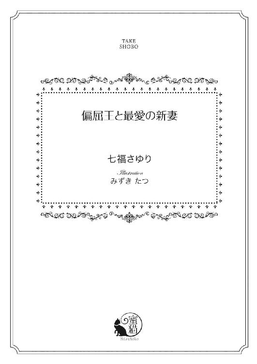
この作品は縦書きでレイアウトされています。
また、ご覧になる機種により、表示の差異が認められることがあります。
一部の漢字が簡略字で表示されていることがあります。
イラスト／みずきたつ
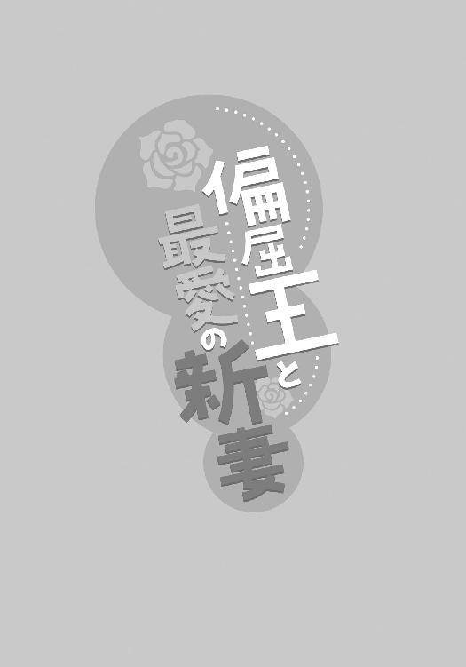
プロローグ リリアーナの星のように輝く宝物
クラウスお兄様へ
この前はお誕生日プレゼントをありがとう。クラウスお兄様がお誕生日を覚えていてくれて、私すごく嬉しいわ。毎年本当にありがとう。
いただいたブレスレットはもうすっかりお気に入りで、毎日付けているのよ。
手を動かすたびにブレスレットが揺れて、それが嬉しくて必要以上に動かしてしまうの。それをお父様に見られて、手に怪我をしているんじゃないかって心配されちゃった。今度からは一人の時だけ動かすようにしなくちゃって思うんだけど、気が付くと動かしちゃうの。
お忙しいと思うけれど、お身体を壊さないように気を付けてね。いつかまた、クラウスお兄様にお会いできることを願っています。
リリアーナ・クレーティ
「クラウスお兄様にお送りする手紙を書いたのだけど、どうかしら？ 変じゃない？」
ハウライト国の第一王女リリアーナ・クレーティは、親しいメイドたち数名を部屋に集めると、三日間かけて書いた手紙を披露する。
一週間前、リリアーナは十六歳の誕生日を迎えた。
リリアーナの父であり、王であるエドモンド・クレーティが節税を心がけているため盛大とはいかないが、国を挙げてお祝いが行われ、自国の貴族や様々な国から祝いの品が送られてきた。
そしてその中には、リリアーナの想い人であるネフライト国の王──クラウス・バルテウスからの贈り物も......。
クラウスからは綺麗な字で書かれた『十六歳の誕生日おめでとう』という手紙と共に、ピンクダイヤモンドをあしらった可愛らしいブレスレットが送られてきた。
リリアーナはクラウスを『お兄様』と呼んでいるが、血が繋がっているわけでも、義理の兄妹でもない。
クラウスは十二歳の時にエドモンドに誘われ、ハウライト国に半年間留学しにきていたことがあった。その際にエドモンドが本当の息子のように可愛がっていたので、リリアーナも自然とそう呼ぶようになったのだ。
留学を終えてクラウスが母国へ帰る時、いつかまた会おうと約束していたけれど、その約束は叶っていない。
なぜならその数年後、ネフライト国の王であるクラウスの父が亡くなり、三人の兄王子たちも相次いで流行り病や事故で亡くなり、彼が王位に就くことになったからだ。あれから数年......彼は依然として多忙に身を置いているらしい。
けれどクラウスはリリアーナの誕生日になると、こうして忘れずにプレゼントを送ってきてくれる。
可愛らしいぬいぐるみ、空の星を集めたように美しいキャンディ、愛らしいひまわりの花のヘアアクセサリー、優しい音が鳴るオルゴール......他にもたくさん贈ってもらい、プレゼント本体も大事にしているが、包み紙や飾りとして付いていたリボンも大切に取ってある。クラウスから貰ったものは、全てリリアーナの大切な宝物だ。
メイドたちはリリアーナの書いた手紙を見終えると、全員眉をしかめた。
「おかしくはないけれど、色気がないですよね。百点満点中、おまけして、まぁ......五十点ってところですかね？」
「プレゼントを貰えて嬉しいって気持ちは伝わってきますけど、クラウス様からいただいたっていうことが特別！ っていうのがいまいち伝わってこないというか......もっと『好き好きっ！ あなたが大好きっ！』っていう雰囲気を出すべきですよ」
「お会いできるのを願っていますって、社交辞令っぽくないですか？ ここはもう『寂しいです。いつお会いできますか？』ってハッキリ聞いちゃうべきだと思います。このままじゃ、いつまで経ってもお会いできませんよ？」
次々に指摘を入れられ、実はよく書けたと密かに思っていたリリアーナはがっくりと肩を落とした。
リリアーナがクラウスに恋心を抱いていることは、彼女の部屋付の親しいメイドたちに話してあるので、いつもこうして相談に乗ってもらったり、仕事を終えた彼女たちを招いてお茶を囲んでお互いの恋愛話を語って楽しんでいるのだ。
「でも、そんな好き好きって雰囲気を出して、クラウスお兄様が迷惑に感じたら？ 再会するどころか、もうお手紙をくれなくなったらって考えると、勇気が出なくて......」
リリアーナは菫色の瞳を細めてため息を吐き、腰まである紅茶色の長い髪を指で弄りながら小さな声で呟くように話す。
「あー......それは、わかりますよ。私もそうですし、自分のことじゃないから思いきったことを言えるところもあるので」
メイドたちは同意し、うんうん頷く。
「じゃあ、少しだけ勇気を出して、『お会いできるのを願っています』ではなく、『またお会いしたいです。お時間があったら、ご連絡下さい』ってさっきよりは、ほんの少し攻めた感じで書くのはどうでしょう？」
「そ、そうね。それくらいなら勇気を出せるかもっ!?」
「リリアーナ様、『かもっ!?』ではなくて、確実に出してくださいっ！」
いつか再会して、クラウスお兄様と恋がしたい。結婚したい。
幼い頃はそんな夢を持っていた。その夢が叶うと疑わなかった。しかし十六歳になったリリアーナはもう夢を見ていられる年齢ではない。王族として生まれたのだからなおのこと......。
ネフライト国は、世界で一、二を争う軍事大国だ。その国を治める王のクラウスが、特に何も利点があるわけではないただの小国の王女であるリリアーナと恋や結婚をしてくれるわけがない。
いつかクラウスは国にとって、素晴らしい利益をもたらしてくれる素晴らしい女性と結婚するのだろう。そしてリリアーナも......。
メイドたちと恋の話をしながら、手を左右に動かして、クラウスから貰ったブレスレットを揺らす。
夢を見るのは、もうそろそろ終わらせないといけないとわかっている。でも、もう少し......後もう少しだけ、夢を見ていたい。
クラウスお兄様、会いたい......。
第一章 希望の光
もう少しだけ、もう少しだけでいい。将来は大好きなクラウスと恋をし、結婚するという夢を見ていたい。
早いうちに終わらせなければいけないとはわかっていたけれど、まさかこんなにも早く終わってしまうなんて思わなかった。
誕生日から半年──あれからリリアーナは激動の日々を送っていた。
誕生日からわずか一週間後、大好きだった父......ハウライト国王エドモンドが病に倒れ、意識が戻らないまま帰らぬ人となってしまったからだ。
エドモンドの弟である叔父が国王の座に就き、長らく空いていた王妃の座に叔父の妻である叔母が収まった。
「お父様......」
父が亡くなってから数か月経った今でも、部屋で一人になると、涙が出てきてしまう。けれどエドモンドの言葉を思い出し、頬を叩いて涙を堪えた。
『リリア、お前が泣き虫だってわかってるけど、俺が死んでもあんまり泣くなよ？ 少し泣くのは仕方ねーが、いつまでもメソメソ悲しまれたら心配で天国に行けないからな。それに俺はお前の笑ってる顔が一番好きなんだ。だからいつも笑顔でいろよ』
お父様に心配をかけては駄目。笑顔でいなくちゃ......！
しかし泣きたいのは、父の死が原因だけではない。国王と王妃の座に就いた叔父と叔母の件だ。
小国であるハウライトは、国庫に余裕がない。
エドモンドが存命だった頃は無駄な出費は絶対に許さなかったが、叔父が王座に就いてからは、王妃と共に金を湯水のように使い始めた。特に希少な宝石を集めるのが趣味な叔母は、莫大な金を使って宝石を買い集めている。
これではすぐに国庫が底を突き、破滅は目に見えている。リリアーナや重臣たちがどんなに注意しても、二人は決して無駄遣いをやめようとしなかった。
どうしたらいいものかと悩んでいた矢先、リリアーナは叔父からアンデシン国王の二十人目の側室になることを命じられた。
アンデシン国は希少な宝石グランディディエライトの産出国だ。叔母の趣味を知ったアンデシン国王は、リリアーナが側室になってくれるのなら好きなだけ贈ると打診してきたらしい。喜ぶ叔母を見て、彼女を溺愛している叔父はすぐにリリアーナの側室入りを承諾したそうだ。
いつか自国の利益になる国へ嫁がされるとはわかっていた。でも、宝石を手に入れるためだけに嫁がされるなんて思わなかった。
クラウスから貰ったプレゼントや手紙をテーブルの上に広げ、肘を付いてぼんやりと眺めているとまた涙が出てきた。
クラウスお兄様......。
部屋をノックする音が聞こえ、リリアーナはハッとして涙を手の甲で拭う。
また私、泣きそうになっていたわ。
リリアーナが返事をするよりも先に、扉が開いた。
「よぉ、リリア」
「ごきげんよう、ポール。そして永遠にさようなら」
扉を開けた人物がポールだと気付くと、リリアーナは冷ややかな視線で睨み付け、フイッと顔を逸らす。
「ちょっ......なんだよ、その態度はっ！ 俺は次期国王だぞっ!? そんな態度でいいと思ってるのか？」
「このままじゃ数年持たずしてあなたの継ぐ国はなくなるわよ。お父様とお母様に逆らえない腰抜けは嫌い。それと返事も待たずにレディの部屋に入る無礼者もね。二度と話しかけないでちょうだい」
「そんなこと言っても、お父様とお母様に逆らえるわけないだろ？ 聞かないってわかりきってるのに......というかお前は考えが後ろ向き過ぎるんだよ。心配しなくても大丈夫だって！ 金がなくなったら、国民の税を上げればいいんだからさ」
彼はポール・クレーティ。叔父夫婦の一人息子で、リリアーナと同じ歳の従弟だ。幼い頃から顔を合わせるたびに意地悪をしてくるのであまり好きではなかったが、叔父夫婦の無駄遣いを窘める手助けをしてくれるどころか、彼までも調子に乗って散財するようになったため大嫌いになった。
「それよりもお前、アンデシン国王の側室になるんだってな」
「ええ、そうよ。あなたのお母様のおかげでね」
リリアーナはポールから顔を逸らしたまま、刺々しい口調で答えた。
「いや、それはそうなんだけどさ......確か六十歳過ぎの爺さんだろ？ お前、そんな爺さんの側室になるなんていいのかよ。父親より年上の爺さんだぞ？」
いいも、何も、リリアーナに選択肢はない。そのことをわかって質問しているのだろうか。腹立たしくて、爪でバリバリ引っ掻いてやりたくなる。
そんな衝動を堪えるために何も言わず黙っていると、ポールがまたリリアーナの神経を逆なでする発言を続けた。
「......お前はポワポワしてるから知らないかもしれないけれど、あの爺さんの側室になるってことは男女の関係になるってことで......あの爺さんに胸を揉まれたり、乳首をしゃぶられたり、ペニスをしゃぶらされたりす......」
「なっ......ちょ、ちょっと、ちょっと、いやらしいことを言わないでっ！ 側室がどういうものかぐらい、私にだってわかるわっ！」
とうとう我慢できなくなったリリアーナは、爪で引っ掻きはしなかったものの、手近にあったクッションを手に取ってポールをボフボフ殴る。
「ちょっ......な、何すんだよっ！」
「もう、出て行って！ じゃないと、もっと叩くわよっ！」
わかっているからこそ、具体的に考えないようにしていた。それなのにポールのせいで具体的に考えることになってしまった。クッションを掴む手が震えて、今にも泣いてしまいそうだ。
国のためになる婚姻ならまだしも、叔母様の私利私欲を満たすために嫁がされるなんて......こんなのあんまりだわ！
「待てって。あの爺さんの側室になりたくないなら、ならなくてもいい方法がある。お前が好きな男と結婚できる最高の方法だ」
「えっ？」
手から力が抜けて、クッションがポロッと落ちた。
クラウスお兄様と結婚できる方法ってこと......？
親しいメイドにはクラウスに恋をしているとは話していたけれど、ポールに話したことはない。どうして彼が知っているのだろう。
あ、テーブルの上に、クラウスお兄様の名前が入った手紙を広げていたから？
ポールは攻撃が止んだ隙に、リリアーナの武器だったクッションを遠くへ放り投げて安全を確保した。
「やっぱりお前も女なんだからさ。好きな男と結婚したいって思うだろ？」
「え、ええ、したいわ。どうすればいいの？」
リリアーナがすがるような目でポールを見ると、彼はニヤリと含みのある笑みを浮かべる。
「じゃあ、『ポール様、お願い。なんでもするから私をどうか妻にしてください』って懇願して、お前から、その......キ、キスしろよ。ちゃんと唇にだぞ。そうしたら両親に相談して、なんとかしてやるよ」
「......え？」
リリアーナが菫色の瞳を丸くして固まると、ポールがもう一度同じことを言う。
「お前、相変わらず間抜けだな。大事な言葉は一度でちゃんと聞きとれよ。だから、ポール様、お願い。なんでもするから......」
「聞き取ったからこそ耳を疑って固まったのよ！ どうして私があなたに妻にしてくださいなんて言わなくちゃいけないの!?」
「照れるなよ。俺のことが昔から好きなくせに。俺の妻になれないからって、泣いてたんだろ？」
涙はしっかり拭ったつもりだったけれど、目の赤みは抑えられなかったようで、泣いていることに気付かれていたらしい。
そういえば昔、葉に載せた毛虫を持って追いかけられ、何度も泣かされた。しかも泣き顔が変だと笑われた。昔の怒りまで蘇り、ますますポールに腹が立つ。
「私があなたなんかを好きなわけないじゃないっ！ 大大大大嫌いよ！ もう、出て行ってっ！」
「なんだよ！ じゃあ、いい歳して側室が二十人もいる好色爺さんと結婚する方がいいってのか!?」
「アンデシン国王の側室になるのも、あなたの妻になるのも同じくらい嫌よ！ あなたの顔なんてこれ以上見たくないわ！ もう出て行って！」
「痛っ！ や、やっぱり俺と結婚したいだなんて言っても、絶対妻になんてしてやらないからなっ！」
「そんなこと言うわけないでしょ！ いいから早く出て行ってよっ！ じゃないと......」
再びクッションを拾って構えると、ポールは脱兎のごとく部屋から逃げ出していった。リリアーナはしっかり鍵をかけると、肩を上下させて乱れた呼吸を整える。
「あんなに意地悪されて......国を潰そうとしている両親を止める努力もしないあなたなんて、好きなはずないじゃないっ！」
クラウスからの手紙や贈り物に視線をやると、我慢しきれず涙がこぼれた。
いつかクラウス以外の男性に嫁ぐとはわかっていた。でも、いざそれが現実になるとこんなにも辛いなんて......。
リリアーナは涙を拭いながら、クラウスと過ごした優しい過去の日々を思い出す。
◆◇◆
あれは、リリアーナが五歳だった時だ。
「お父様、お帰りなさいっ！」
外交に出かけていたエドモンドが二週間ぶりに帰り、城に入ってくるまで待ちきれなかったリリアーナは彼が乗っていた馬車の前まで迎えに行った。
馬車を降りるエドモンドの姿が見えると同時に、使用人たちから止められるのを振り切って走り出し、彼に飛びついた。
「おお！ リリア、元気にしてたか？ というか、聞くまでもなかったな。元気そのものだなっ！」
エドモンドは飛び付いたリリアーナを受け止めると、そのまま抱き上げてクルクル回る。
「ええ、元気よ。でも、すごくすごーく寂しかったわ」
「ああ、俺もだ」
リリアーナはまだ物心が付く前に、流行り病で母を亡くしている。妻を愛していたエドモンドは後妻を迎えずに、一人娘のリリアーナと共に暮らしていた。
従弟のポールが母親に甘えているのを見ると少し切なくなる時もあるけれど、父の大きな愛情に包まれていたリリアーナは、いつも幸せでいっぱいだ。
「リリア、今日から新しい家族が増えるぞ」
「家族？」
エドモンドが馬車に視線を向ける。リリアーナもそちらを見ていると、馬車から一人の少年が降りてきた。
月の光を紡いだような銀色の髪が日に透けて、輝いているみたいだ。髪の美しさに見とれていると、彼の目が左右違うことに気が付く。右目はリリアーナよりも少し濃い紫色、左目は金色だった。
なんて神秘的なのだろう。
凛々しい眉にスッと通った鼻筋、形のいい薄い唇が完璧な位置にある。顔立ちが美しいこともあって、ますます神秘的に見える。
少年はリリアーナの視線に気が付くと、サッと目を逸らした。
あら？
どうして目を逸らすのだろう。
エドモンドは抱き上げていたリリアーナを下ろすと、クラウスの頭をクシャクシャ撫でる。
「こいつはクラウスだ。今日から半年間うちの国に留学することになったから、仲良くするんだぞ。今日から俺達は家族だ。クラウスの方が十二歳で年上だから、お前のお兄様だ」
「家族！」
一人娘で兄妹がいないリリアーナは、家族がもっと増えたら楽しいのにといつも思っていたものだから、菫色の瞳をキラキラと輝かせた。
「いや、俺は家族だなんて......」
戸惑うクラウスの声は、少年と青年の間を彷徨う中性的なものだった。リリアーナにとってその声はとても耳触りがよく、聞いていると心地いい。
「一緒に暮らすんだから家族だろ。それにお前の右目とリリアーナの目は同じ色だ。俺の奥さんとも同じ色だからなっ！」
「その法則でいくと、あんたの家族はとんでもない人数になるんじゃないか？」
「おお！ そいつはいいな。とんでもない人数の家族がいるなんて楽しいじゃねーか」
「......あんたは相変わらず考えが軽いな」
「お前は相変わらず暗いな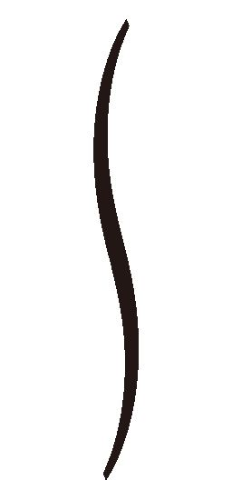」
エドモンドとクラウスはお互い顔を見合わせ、ため息を吐く。
「クラウスお兄様！ 私、リリアーナよ。よろしくねっ！」
リリアーナはクラウスに駆け寄ると、手をギュッと握って挨拶した。すると彼は、弾かれたように手を振り解く。
なぜ振り解かれたのかわからないでいるリリアーナが目を丸くしていると、クラウスはやや気まずそうに彼女の前に跪く。
「リリアーナ姫、お初にお目にかかります。私はネフライト国第四王子のクラウス・バルテウスと申します。半年間、お世話になることになりました。どうぞよろしくお願い致します」
家族だと言っていたのに、リリアーナは他人行儀な挨拶に戸惑ってしまう。
聞き間違えてしまったのだろうか。いや、確かに父は家族だと言った。リリアーナはその場にしゃがみ込み、クラウスの顔を覗き込む。
紫と金色の瞳が丸くなった。
「家族は私のこと、リリアーナ姫じゃなくてリリアって呼んでくれるの。だからクラウスお兄様もリリアって呼んで」
「いや、俺は......」
サッと目を背けられたので、リリアーナはまた覗き込む。するとまた背けられたので、覗きこむことを繰り返していると、とうとう観念したらしい。
「......わかった。よろしく、リリア」
愛称を呼んでもらえて嬉しいリリアーナは、満面の笑みでクラウスに抱き付いた。
「うん、よろしくねっ！」
「......あんたもそうだが、ご息女も人に触れ過ぎではないか？」
「誰彼構わずそうしてるわけじゃないぞ？ 俺もそうだが、リリアだってそうさ。従弟のポールになんて、抱き付くどころか姿を見た瞬間、脱兎のごとく逃げるからな。お前は好かれてるってことさ。よかったな！」
抱き付いたクラウスはとても温かい。
「よくない。迷惑だ」
クラウスの温もりが伝わってくると、不思議なことに冷たい言葉をかけられても、彼がとても優しい人なのだとなんとなくわかった。
「もう、いい加減離れ......痛っ」
「あっ......ごめんなさい。私、力強すぎた？」
慌てて離れたものの、クラウスの表情は苦痛に歪んでいた。
「いや、違う。なんでもない」
「なんでもないって顔じゃないだろ。ほら、見せてみろ」
「なんでもないって言ってるだろ！ ......やめろ！」
エドモンドが強引にクラウスの上の服を脱がせると、お腹や腕にたくさんの大きな青痣ができていた。
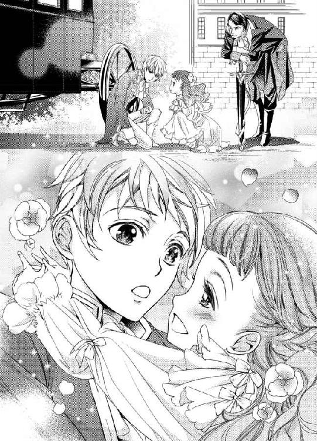
「私が強く抱き付きすぎたからだわ！ クラウスお兄様、ごめんなさい！」
「いや、違う」
「じゃあ、どうしてこんなにお怪我をしているの？」
クラウスは口を固く閉じ、何も言おうとしない。やはり自分が怪我をさせてしまったのではないだろうかと、リリアーナは瞳を潤ませる。
「リリア、大丈夫だ。お前が怪我させたんじゃないよ。というか抱き付いてこれだけ怪我させるなんて、筋肉モリモリな男でも難しいんじゃないか？」
「じゃあ、どうしてクラウスお兄様はお怪我をしてるの？」
エドモンドは怒りをかみ殺すような表情をし、何も答えずにリリアーナの頭をポンと撫でた。その表情を見て、父はクラウスの怪我の理由を知っているとわかった。
「おい、クラウスを治療してやってくれ」
「いい。必要ない」
「いいから、行っておけって。な？ ほい、決定」
「ちょっ......だから、いいって。これくらい、どうってこと......」
クラウスは使用人たちに付き添われ、治療を受けに半ば強引に城の中へと連れられて行った。
「ねえ、お父様......クラウスお兄様はどうしてお怪我をしていたの？」
エドモンドは小さなリリアーナの手を握ると、城へ向かって歩き出す。やはり教えてもらえないのだろうか。
「あの怪我はな、クラウスの兄さん達に苛められて、殴られた怪我だ」
リリアーナは、自分の耳を疑った。
「ど、どうして？ どうしてお兄様達がクラウスお兄様にそんなことをするの!? 家族なのに......っ」
家族なのだから、そんなことをするなんてありえない。そう訴えるリリアーナの言葉を聞いて、エドモンドは悲しそうに微笑んだ。
「リリア、悲しいことだけどな......世の中には家族でも苛める者もいる。家族だからこそ、そういうことをする人間もいる」
「そんな、どうして!? どうしてそんなことをするの？」
先ほど見た痛々しい青痣を思い出し、リリアーナは大粒の涙を流した。
「色々理由がある場合もあるし、なくてもする場合もある。わかりたくもないけどな......」
「じゃあ、クラウスお兄様は留学が終わったら、またお兄様方から殴られるの!? そんなの嫌よ！ そんなの絶対に駄目！」
エドモンドは泣きじゃくるリリアーナの頭をクシャクシャに撫でて、ニカリと真夏の太陽のような笑顔を向けた。
「大丈夫だ。もうクラウスは殴られない。殴られないためには、強くなればいいからな」
強くなるとは、どうすればいいのだろう。よくわからないけれど、よかった。エドモンドが大丈夫だと言うのだから、大丈夫なのだろう。だって彼は、リリアーナに嘘を吐いたことは一度もない。
クラウスお兄様は、大丈夫。もう殴られない。
涙は止まったけれど、でも家族から暴力を受けることがあるという衝撃は、心に深く刻み込まれたのだった。
クラウスも加わったディナーは、とても楽しかった。
彼は口数が少なくて、話しかけても相槌を打つだけだったけれど、リリアーナは食べることよりも話すことに夢中になり、エドモンドからちゃんと食べるようにと注意されるほどだった。
たくさんはしゃいで疲れたリリアーナは、ベッドに入るとすぐに夢の世界へ落ちていった。普段は寝付きが悪いので、ホットミルクを飲み、メイドに絵本を何冊か読んでもらって、一時間ほどかけてようやく眠っていたものだからメイド達は驚いて、クラウスに半年と言わず、いつまでも居てほしいと笑う。
しかし眠りに就くのは早かったが、悪夢を見たリリアーナは泣きながら早朝に目を覚ました。
「うう......」
クラウスが、彼の兄達に殴られる夢だった。夢だとわかっても、涙が止まらない。だって今見たのは夢だけれど、彼が兄達に殴られたのは事実なのだ。
涙を拭っていると、外から金属と金属がぶつかる音が聞こえてくる。
まだ、日が昇り切らずに空は薄暗い。こんな早くに誰が、何をしているのだろう。
涙を拭いながらベッドを抜け出し、窓の外から庭を見てみると、菫色の瞳に信じられない光景が映った。
「嘘......」
なんとエドモンドとクラウスが剣をぶつけ合っていたのだ。
混乱しているとエドモンドがクラウスの剣を弾き飛ばした上、足払いをかけて彼を転ばせ、自身の剣を彼の首元に近付けたので、リリアーナは真っ青になる。
『リリア、悲しいことだけどな......世の中には家族でも苛める者もいる』
まさか、お父様も、クラウスお兄様を......!?
そんなことはありえないと思っても、実際に父はクラウスに剣を突き付けている。
リリアーナは慌てて部屋を飛び出し、庭へ急いだ。途中で二度転んで膝と手の平を擦り剥き、靴も脱げた。痛みで泣きそうになったけれど、こうしている間にも父はクラウスに酷いことをするかもしれないと、我慢してすぐに起き上がって走る。
早く、早く、止めなくちゃ......！
庭に出ると、エドモンドがクラウスの手を掴んでいるのが見えた。
もっと苛める気なのかもしれないと焦ったリリアーナは、擦り剥いて痛みを感じる足を必死に動かし、エドモンドに飛びついた。
「お父様、やめて！ クラウスお兄様を苛めないで！」
「うぉ!? リリア!?」
エドモンドとクラウスは突然ボロボロの姿で現れたリリアーナに驚き、目を丸くする。
「家族なのに苛めるだなんておかしいわ！ そんなのいけないことよ！」
ようやく慌てて出てきた理由がわかったエドモンドは、お腹を抱えて大笑いし出す。
「ははははっ！ そっか、確かにこの状況はそう見えてもおかしくないな。クラウスが対抗できてたら、喧嘩に見えてたかもしれないぞ？」
どうして父は笑うのだろう。キョトンとしていると、クラウスが気恥ずかしそうに「うるさい」と呟く。
「リリア、大丈夫だ。俺はクラウスを苛めてない。クラウスが兄さん達に苛められないように、今朝から毎日剣術や体術を教えることにしたんだ。防御できるようになれば、殴られないで済むからな」
「なっ......あんた、言ったのか？」
クラウスは真っ赤な顔をして、エドモンドを睨み付けた。
「ああ、口止めされてなかったからな。話したら大泣きされた。俺の娘で、お前の妹は、可愛くて優しいだろう？」
「ふざけるな！」
「お、反抗期か？ お前も大きくなったものだな。父さんは嬉しいぞ」
「ついこの間出会ったばかりだろう！ それに誰が父さんだ。全く、なんなんだあんたは......」
クラウスは大きなため息を吐いて、頭を抱える。
「じゃあ、お父様はクラウスお兄様を苛めていなかったの？」
「ああ、安心しろ。苛めてなんていないぞ」
よかった......！
「それよりも、血が......」
「え？ あっ」
クラウスに指摘され、リリアーナは自分が転んで怪我をしたことを思い出した。手の平や膝が擦り剥けて、ナイトドレスに血が付いている。
「途中で転んだのか？ いつもは転んだら地べたにへばりついたままなのに、よく起き上がって走ってこられたな。偉いぞ。リリア」
「だ、だって、クラウスお兄様が苛められちゃうと思ったんだもの......痛いぃ......」
怪我をしていることを意識するとどんどん痛くなってきて、リリアーナはグズグズと泣き出してしまう。クラウスはほんのり赤く頬を染め、気恥ずかしそうに口元を歪める。
「エドモンド、早くリリアを医師の下へ連れて行ってやれよ」
「お前のために怪我したんだから、お前が連れて行ってやれよ。クラウスお兄様？」
クラウスはエドモンドをジトリと睨み付けると、舌打ちしてリリアーナの前に背を向けてしゃがむ。
「リリア、その足じゃ歩けないだろう。連れて行ってやるから、乗るといい。......お前が嫌でなければだが」
エドモンドは「相変わらず偏屈な言い方だな」と笑うが、リリアーナはどうしてそんなことを言われるかわからない。
「嫌なんかじゃないわ。ありがとう。クラウスお兄様」
クラウスはリリアーナを背負うと、早足で医師の下へ急ぐ。彼の背中はとても温かくて、こうしてもらうと不思議と痛みが和らぐようだった。
そういえばクラウスの痣は、背中にもあった。リリアーナを背負っていたら、痛まないだろうか。
「クラウスお兄様、背中のお怪我は大丈夫？ 痛くない？」
「なんでもない」
本当だろうか。無理をしていたら大変だ。怪我をしていた箇所を思い出し、できるだけそこに体重をかけないようにする。
「......ねぇ、クラウスお兄様、お兄様達に殴られた時、痛かった？」
恐る恐る尋ねると、クラウスは押し黙る。答えは貰えないのだろうかと思っていたら、彼は数分後に口を開き、「忘れた」と答えた。
「ええっ！ 本当に？」
リリアーナは今日だけではなく、以前転んだ時の痛みもよく覚えている。人に殴られた痛みは、転んだ痛みよりもっと辛いような気がする。そんなに早く忘れられるものなのだろうか。
「ああ、お前が怪我したのを見ていたら、忘れた。絶対に忘れないと思っていたのに不思議だ」
今までのぶっきらぼうな話し方とは違い、その声はどこか優しかった。
「どうして私が怪我すると忘れるの？」
「それは......」
「ねぇ、どうして？」
何度もしつこく尋ねると、クラウスの耳が赤くなる。しかしおしゃべりに夢中なリリアーナは、そのことに気が付いていない。
「どうしてもだ。......というか、リリアは少しおしゃべり過ぎではないか？ 昨日もたくさん喋って、食事があまり進んでいなかっただろう」
「だってクラウスお兄様とのお食事が楽しかったんだもの。いつもはあんなにおしゃべりはしないのよ？」
「本当か？」
「本当よ。だってお父様が居ない時は一人でお食事だもの。一人でおしゃべりしていたら変でしょう？」
「まあ、確かにそうだな。だが、お前ならやりかねないと思った」
「もう、クラウスお兄様酷いっ！」
クラウスお兄様と過ごした半年間は、私の人生の中で一番楽しい時間だった──。
クラウスは口数が少なくて、話しかけても素っ気ないし、時には冷たい言葉が返ってくることもあったけれど、誰よりも優しかった。
「うぅうう～ん......っ！」
「......リリア、何してるんだ？」
「お気に入りのリボンが風で飛んじゃったの。だからこうして取ろうとしているのよ」
風で飛んだリボンは高い木の枝に引っかかり、手を伸ばしても取れそうにないので、木の幹を揺さぶって落とそうとしてみるが、リリアーナの力ではビクともしない。
「そうか。またはしゃいでいるのかと思った」
「違うわ！ 頑張ってるんだからっ！ うぅう～んっ！」
クラウスが去った後も一生懸命揺らしたけれど、リボンはついに落ちてこなかった。しょんぼりしたリリアーナは気分転換にメイドたちとおしゃべりを楽しんだ後、自室へ向かう。
「あっ！」
すると木に引っ掛かっていたはずのリボンが、リリアーナの部屋のドアハンドルにくくり付けられていた。
リボンをなくしてしまった話は、たった今まで一緒に居たメイドたちと、クラウス以外にはしていない。今まで一緒に居たのだから、メイド達がリボンを取るのは不可能だ。だとすれば取ってきてくれたのはクラウスしかいない。
リリアーナはリボンを持ってクラウスの部屋へ行き、ノックの返事も来ないうちに扉を開いた。
「クラウスお兄様、リボンを取ってきてくれてありがとう！」
ソファで難しそうな本を読むクラウスの隣に座ると、取ってもらったリボンを彼の紫と金色の瞳の前に出す。
「なんのことだ？」
「クラウスお兄様が取ってきてくれたんでしょう？」
「俺じゃない。そんな面倒なことなどするわけがないだろ」
クラウスは億劫そうにリリアーナの方を向くと、またすぐに本に目線を落とした。
でも、クラウスお兄様とメイド以外に、リボンのことなんて話していないのに......。
不思議に思いながらクラウスの顔を見ると、彼の銀色の髪に葉が付いていることに気が付く。リボンが引っかかった木と同じ葉だ。
リリアーナはクラウスの髪から葉を取って、彼の読む本の前でヒラヒラ動かしてみた。
「......っ」
彼は一瞬ギクリとした様子で顔を上げるが、リリアーナと目が合うとすぐにまた視線を逸らす。
「クラウスお兄様、ありがとうっ！ お気に入りのリボンが、もっともっとお気に入りになっちゃった！」
「......なんのことだか、さっぱりわからない」
とぼけてもわかる。リリアーナはクスクス笑い、本を読むクラウスにくっ付いて、何かをするわけでもなく、おしゃべりをするわけでもなく、ただただ彼の傍に居る時間を堪能する。
その時間はリリアーナにとって特別で、心の中に春が生まれたみたいだった。
クラウスはその後も捻くれたことを言いながらも、リリアーナに影から温かな優しさをくれた。
ポールに虫を持って追いかけられて、泣いているところを見つければ、「虫ぐらいで泣くなんて情けない」と言いながらも、さり気なくポールに足払いをかけて転ばせ、助けてくれたり、風の音が怖くて眠れないから一緒に寝てほしいと頼めば、「嫌だ」と言いながらも、リリアーナの部屋のソファの方が座りやすいから、今日はここで本を読ませてもらうとやってきて、彼女が眠るまで付いていてくれた。
偏屈だけど、誰よりも優しいクラウスお兄様が大好き......。
楽しい半年間はあっという間に過ぎ、とうとう別れの日がやってきた。リリアーナは悲しくて、辛くて、前の日からずっと泣き通しだった。
「......何もそんなに泣くことはないだろう」
馬車の前でエドモンドと共に泣きながら見送っていると、クラウスは反応に困っているようでしがみ付くリリアーナをどうすることもできずにいた。
「リリアーナ、そろそろ離してやれ。困ってるぞ」
「クラウスお兄様、帰っちゃ嫌よ......ずっとここに居て......」
「いや、それは......」
父になだめられても聞かずに、嗚咽を上げながら帰らないでと訴え続け、出発予定時刻をとっくに過ぎていた。
「いったん戻って、もう一回戻ってこいよ。お前、第四王子なんだから王位は継がないだろ？ リリアーナと結婚して、うちの国王になればいい」
「な、何考えてんだ。あんたは！」
二人の声は、激しい嗚咽を上げるリリアーナには届いていない。
いつまで経っても離れようとしない彼女は強引にエドモンドの手により引きはがされ、クラウスはネフライト国へと帰って行った。
クラウスが居なくなってからというもの、リリアーナの心にはポッカリと穴が空いたみたいだった。
父が外交で国を離れる時も寂しくて同じような感覚に陥ったことはあったけれど、どこかそれとは違う感覚──切なくて、クラウスを想うと、彼と過ごした優しい日々を思い出すと、胸が苦しくなって、ため息が零れる。
クラウスと離れて過ごす日々が長くなり、成長していくにつれ、リリアーナは彼に恋心を抱いていたのだと気が付いたのだった。
◆◇◆
リリアーナの気持ちを置いてきぼりにしアンデシン国へ向かう準備は、着々と進んでいった。
「リリアーナ様、ドレスやアクセサリーはどれをお持ちいたしましょうか。あちらの国はとても暑いそうなので、涼しいものがいいかと」
「......なんでもいいわ。決めてもらえる？」
「かしこまりました......」
部屋付きのメイド達はリリアーナの恋心を知っているので、複雑な表情でドレスやアクセサリーを選んでいく。
過去に戻れる魔法があればいいのに......。そんな素敵な魔法があったら、私、永遠に過去の世界にとどまって、クラウスお兄様とずっと一緒にいたいわ。
そんな途方もないことを考えても仕方がないとはわかっていても、つい考えてしまう。
クラウスに手紙で助けを求めることを考えた。でも、今回の側室入りがなくなったとしても、次はと考えたら、ペンに手を伸ばす気にはなれなかった。
リリアーナにとってクラウスと結婚する以外は、どんな人間と結婚しても同じことだ。
なんだか、身体が怠いわ......。
精神的に落ち込んでいるから、体調にまで影響してきたのだろうか。ソファに寝そべってぼんやりした時間を過ごしていると、部屋の外が騒がしい。
一体どうしたのかしら......ううん、そんなことどうだっていいわ。
目を開けていることすら億劫で瞼を閉じたその時、ノックもなしにポールが飛び込んできた。
「リリア！ 悪魔が来た！」
「昔みたいに怖がると思っているの？ もう、子供じゃないのよ」
「そうじゃなくてあいつだよ！ 昔、留学に来てたあいつ！ ネフライト国の王だよ！ あいつが謁見室にいる！」
「クラウスお兄様!?」
リリアーナはソファから弾かれるように腰を上げ、扉の前に立っていたポールを押しのけるとドレスの裾を持ち上げて謁見の間へ走った。
まさかまた会えるなんて......！ でも、どうして、クラウスお兄様がいらっしゃっているの!?
謁見室の前に辿り着いたところで、以前見たポールのにやけた顔が脳裏に浮かぶ。
もしかして、またポールの嘘？
ああ、きっとまたそうだわ。だってお忙しいクラウスお兄様が、わざわざハウライト国に来るはずがないもの......。
ポールは幼い頃からいつもこうしてリリアーナをからかってきた。そのたびに泣いたり、怒ったりしたけれど、今は脱力してどんな反応も出てこない。
クラウスお兄様、会いたい......。
その場から動けずにいると、中から声が聞こえてくる。
謁見室に誰かが居ると言うのは本当らしい。ポールの嘘を信じてうっかり飛び込んだら、大変なことになるところだった。彼は失態を犯し、慌てるリリアーナが見たかったのだろう。いつものことだ。
自室に帰ればポールが居て、『騙されたな。馬鹿な奴』なんてからかってくるに違いない。このまま帰らずに、少し庭にいようか。
それにしてもポールったら、嘘が上手になったわ。本当に慌てているみたいだったもの。
「知らせを聞いて驚きました。これは我が国に対する侮辱──と、捉えてよろしいのか？」
扉を開けずに踵を返そうとしたリリアーナは、扉の向こうから聞こえてくる凛とした低い声に惹かれてその場に立ち止まる。
──え......？
聞いたことがないけれど、どこか懐かしさを感じる声で、心臓が騒ぎ出す。
「そんな！ とんでもございません！ 兄上からは......前国王からは何も知らされていなかっただけで......」
叔父の慌てて反論する声が聞こえてくる。
何か揉め事だろうか──と考えるよりも先に、この声がもっと聞きたい。この扉の向こうに誰が居るのかを知りたい。
「ふん、知らないふりをしているという可能性もあるのでは？」
「本当に知らなかったんです！ 兄上からもリリアーナからも、あなたとそのような約束をしているなど一度も聞いたことがない！ ですから......」
「......私が嘘を吐いて、言いがかりを付けているとでも仰りたいのですか？」
「と、とんでもございません！ 私は身の潔白を......我が国はネフライト国を侮辱していないと証明したい一心で......」
ネフライト国!? じゃあ、この扉の向こうに居る方は、ポールの言う通り本当に......？
「では、本来の約束を果たしていただけますか？ 果たしていただけない場合は、我が国と敵対すると取りますが......」
「も、もちろんです！ 本来のお約束を果たしますので、どうかお許しください！」
黙っていられなくなったリリアーナは、ついに重い扉を両手で開いた。
そこには、漆黒の軍服に身を包んだ背の高い青年の後ろ姿がある。髪の色は、銀色だ。
本当なの......？
リリアーナは菫色の瞳を大きく見開いて口元を押さえていると、銀髪の青年がゆっくりと振り向く。
振り向いた青年は目の部分が隠れる仮面を被っていて、右目の覗き穴からは紫色の瞳が見える。しかし左目の覗き穴はアメジストが埋まっていて瞳の色は見えない。しかし目の色が見えなくとも、美しい顔の半分が隠れていようとも、リリアーナには彼が成長したクラウスなのだとすぐにわかった。
ずっと会いたかった......。
もっと顔を見たいのに、涙で歪んで何も見えなくなってしまう。
いつか再会したら、大人のレディとして振る舞おうと決めていた。子供から大人に成長したというところを見せたいと思っていた。しかし彼の姿を見た途端、そんなことは何も考えられなくなった。
「クラウスお兄様......っ！」
リリアーナはすぐさまクラウスの下へ駆け寄り、幼い頃のように強く抱き付いた。
「リリア、成長したのは見た目だけで、行動は何も変わっていないようだな？」
クラウスはククッと笑うと、幼い子供をあやすようにリリアーナの髪を撫でた。
会えて嬉しいのに、嗚咽が邪魔をしてリリアーナは何も言えない。
リリアーナが軍服に顔を埋めて泣きじゃくっていると、クラウスが腰に腕を回し、耳元に唇を寄せてきた。
「リリア、このまま顔を上げずに、俺が尋ねたことには全て頷いて答えろ。いいな？」
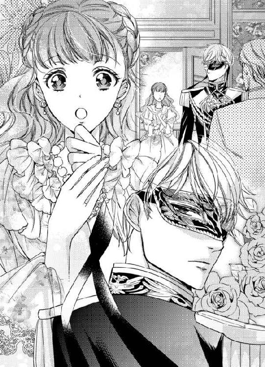
リリアーナにしか聞こえない、小さな声だった。
どういうこと......？
よくわからないけれど、何かそうしなければいけない訳があるに違いない。リリアーナはクラウスにしかわからないように、わずかに頷いて見せる。
「リ、リリアーナ、失礼ではないか」
「構わない。我々はもうすぐ夫婦になるのだからな」
え......!? ふ、夫婦!?
驚いたリリアーナは顔を上げそうになったけれど、寸前のところで堪えた。
「リリア、待たせてすまなかったな。ようやく迎えに来られた。......まさか、他の男の側室にさせられるところだったとはな。約束を果たしにきた。すぐにネフライト国へ行き、結婚式を挙げよう」
え？ え？ ええっ!? 私とクラウスお兄様が結婚するってこと!? え？ 約束って何？
一体どうなっているのだろう。リリアーナは混乱して固まっていると、クラウスが腰をトンと指で叩いて合図する。
そ、そうだったわ！ 頷かなくちゃ......！
コクリと頷いたら、クラウスが「よくできました」と褒めるように、また腰を指でトンと叩いて合図してきた。
「本来ならもっと段階を踏むべきだが、このままお前をここに置いていては今回のようにいつ約束を破られるかわからない。今すぐ用意を整えて、ネフライト国へ行こう」
ネフライト国に、私が......!?
リリアーナが混乱しながらも頷くと、クラウスは彼女の手を取り、まるで恋人のように指を絡めた。
「それでよろしいですね？ 何か不都合なことがありますか？」
クラウスに鋭い視線を向けられた叔父は、冷や汗を流しながら両手と首を左右に振った。
「い、いえ、とんでもございません！ あの、では、援助の件は......」
「ええ、一定の条件を出すかと思いますが、それでよければご援助致しましょう」
「もちろんです！」
「では、我々が国に着いてから、使いの者をお送り致します」
援助？ もしかしてついに国庫を使い果たして、ネフライト国に借金の申し込みをしたの？
ああ、なんて恥ずかしいことだろう。災害などの人の力ではどうしようもないことでならまだしも、贅沢三昧で国庫を空にしただなんて......。
リリアーナは顔を伏せたまま、クラウスに繋いでいる手に無意識のうちにギュッと力を入れていた。
「では、リリアーナ。行こうか。ああ、その前に前国王の墓に挨拶がしたい。用意を整えたら、ネフライト国へ行く前に連れて行ってくれるか？」
片手で口元を覆ったリリアーナは、また彼との約束通りにコクリと頷いた。
◆◇◆
本来なら墓地は教会に作られるのだが、エドモンドの墓は彼が大好きだった小高い丘に作られた。そこはハウライト国が一望できて、生前から彼のお気に入りの場所だった。ここにはリリアーナの母も眠っていて、生前から自分が亡くなった時のためにと、自分の墓を用意していたのだ。
用意するのが早すぎると周囲から言われていたけれど、まさかこんなにも早く逝ってしまうだなんて、誰が想像できただろう。
クラウスは人払いをし、リリアーナと二人きりで墓前に立つ。
「エドモンド、久しぶりだな。訃報が届いた時、何かの間違いかと思った。殺しても死ななそうなあんたが逝くなんてありえないだろう？」
先ほど従者から受け取ったワインを出すと剣で瓶ごとコルクを切り落とし、二つのグラスに注いで墓前に供えた。
「あんたみたいな厳つい男に花は似合わないから、飲みたがってたワインを持ってきた。奥方と一緒に飲んでくれ。......あんたのことだから、飲みすぎて、ようやく再会できた奥方の前で醜態を晒しそうだな」
風もないのにグラスの中のワインが揺れた気がしたのは、リリアーナの視界が涙で歪んでいるせいだろうか。
「葬儀に来られなくてすまなかったな。ネフライト国からここまで来るには最短でも三日以上かかる。どうしても間に合わなかった」
「いいえ、間に合わなかったのは仕方がないことだもの。こうしてクラウスお兄様が来てくれて、お父様もお母様も喜んでいるわ。クラウスお兄様、ありがとう」
「エドモンドのことだ。『遅い。罰ゲームとして剣の素振り千回』なんて言いそうだがな」
「ふふ、そうね」
クラウスお兄様が目の前にいるなんて──こうしてお話できているなんて、まだ夢みたいで信じられないわ......。
まじまじと見つめていると、クラウスが少しだけ首を傾げた。仮面にかかる銀色の髪がサラリと揺れる。
「どうかしたか？」
「あ、あのね。クラウスお兄様が目の前にいるのが不思議で......背もうんと伸びたし、お声も変わったのね」
「ああ、ここに居た頃は、変声期の前だったからな。帰りの馬車の中で急に声変わりが始まって、その後に背も伸び始めた」
クラウスはリリアーナの眦に溜まった涙をハンカチで拭いながら話す。けれど嬉しくて、拭った先から菫色の瞳から次々と涙が溢れてしまう。
「前よりもクラウスお兄様のお顔を見るのが大変になったわ。お顔を見ようとしたら、首が痛くなっちゃうもの」
「別に見なくてもいいだろう」
「嫌よ。いっぱい見たいもの」
「......お前は相変わらず泣き虫だな。ハンカチ一枚では間に合わなそうだぞ」
「だって、クラウスお兄様にお会いできて嬉しいんだもの。さっきまで私、この世の終わりのように感じていて......クラウスお兄様にお会いできて、本当に嬉しい。来てくれてありがとうっ」
お礼を言うとまた涙が溢れて、クラウスに苦笑された。
「外見が変わっても、中身はそのままだな」
それは大人っぽい外見になったということだろうか。喜びそうになったけれど、中身は子供の頃と何も変わっていないと言われているのだから少々複雑だ。
大人のレディとして見てもらいたいのに、感情が昂ぶっているリリアーナは取り繕うことができず、いつも通りにしか振る舞えない。
「あの、クラウスお兄様？ さっきのことがどういうことなのか、もう聞いてもいい？」
「......人払いはしたが、油断はできない。馬車の中で話そう」
「ええ、わかったわ」
「足元が悪いから気を付けろ。転んで泣いても、慰めてやらんぞ」
クラウスは意地悪なことを言いながらも、リリアーナが転ばないように手を引いてくれる。
「も、もう、子供じゃないんだもの。転んで泣いたりしないわ。......あの、馬車って、ネフライト国へ行く馬車？」
「ああ、そうだ」
でも、ネフライト国に行っていたら、アンデシン国へ出発する日に間に合わない。......間に合わなくても、いいのだろうか？
「私、アンデシン国に行かなくていいの？」
声が震えてしまう。木々が擦れる音と同じくらいの小さな声しか出ない。しかしクラウスの耳にはしっかりと届いていたらしい。
「お前が行きたいと言うのなら、止めないが」
リリアーナは首を左右に振って、クラウスの腕にしがみ付く。
「行きたくないっ！ 絶対に嫌......嫌で堪らなかったの......」
アンデシン国王の側室になるのは......クラウスお兄様以外の男性の下へ嫁ぐのは嫌──......！
「そうか。それなら、問題ないな」
幼い頃のようにクラウスに手を引かれたリリアーナは親しくしていたメイド達に別れを告げ、宝物が入った箱だけを持って、アンデシン国ではなく、ネフライト国へ向かう馬車へと乗り込んだ。
第二章 夢のような日々
馬車に乗り込み、発車してから間もなく──クラウスはようやく口を開いた。
「単刀直入に言う。リリア、アンデシン国王の側室になりたくなければ、我慢して俺の妻となれ」
リリアーナは目を大きく見開き、瞳を輝かせた。
我慢するも何も、それがリリアーナの最大の夢だ。小国の姫である彼女をどうして妻にしようとするのだろう。
もしかしてクラウスも、リリアーナと同じ想いでいてくれたのだろうか。
リリアーナが期待に胸を膨らませていると、クラウスが言葉を続ける。
エドモンドは以前から、自分に何かあったら、リリアーナとハウライト国をどうかよろしく頼むとクラウスに託していたそうだ。
初めは冗談だと思っていた。現にエドモンドはよく冗談を言う人間だった。しかし彼はクラウスが王位を継いだ際、これは冗談ではない。真剣に聞いてほしいと話を切り出したそうだ。
『俺の子供はリリアしかいない。俺に何かあれば、王位を継ぐのは弟だ。家族としてなら嫌な奴ではないさ。だが、あいつは王としては駄目だ。国庫を自分の財産だと勘違いしているあいつが継げば、一年も持たないだろうよ。リリアもどうなるかわからない。クラウス、どうかリリアとハウライト国を頼む』
エドモンドは逞しい男だ。何かあるだなんて考えられなかったが、彼は病魔に侵され、この世を去った。
エドモンドの言葉を思い出し、クラウスはハウライト国へ密偵を出した。何かあればすぐに助けよう。エドモンドの心配が思い過ごしであればそれでいい。
そう思っていたが、エドモンドの予想は的中した。
現ハウライト国王は妻と共に私利私欲を満たすために金を使い、半年も経たないうちに国庫を使い果たしそうになったうえに、リリアーナを宝石を手に入れるためだけにアンデシン国王の側室にさせようとしている。クラウスはそれを知ってすぐに自らハウライト国を訪ねる手筈を整えた。
その間にエドモンドとクラウスが親しかったと知っている現ハウライト国王から、ネフライト国へ援助をお願いしたいとの打診があったので、入国は容易かった。
「私を助けるために結婚って......クラウスお兄様はそれでいいの？ 他に......け、結婚しようとしていた方とかはいないの？」
「ああ、問題ない。そもそも俺は、生涯結婚する気はなかったからな」
「え？ でも、クラウスお兄様は王だもの。結婚して跡継ぎが必要なんじゃ......」
「王位は時期を見て、第五王子の弟に譲るつもりだったから問題ない」
「王位を譲るって、どうして？」
「俺の母は娼婦だ。王が一夜の戯れにと抱いた女が孕み、生まれた子が俺だ。王の器にはふさわしくない。その点、弟は王と側室の子供だが、母親は貴族の出だ。優秀だし、信頼できる。あいつの方が王としてふさわしい」
クラウスは昔、兄王子達に苛められていたのは、母親が娼婦だった──ということに関係しているのだろうか。
「昔、お兄様方に苛められた原因は、もしかしてお母様のご身分のことで......？」
「ああ、それもあるな」
それもある......ということは、別の原因もあるのだろうか。すごく気になるけれど、それ以上聞くとクラウスの心の傷に塩を塗り込むような気がして聞けなかった。
「でも、私がクラウスお兄様の妻になることで、ネフライト国に迷惑がかからない？ それにうちの国も大丈夫かしら......」
「ハウライト国側がアンデシン国に文句を言われたら、婚約は急逝した前国王との間で交わしていたから、自分は知らなかったと言えばいいし、うちの国は元々婚約していたのに、ハウライト前国王が急逝したせいで、婚約者が他の国の王の側室にされるところだったと被害者面をすればいいだけだ、アンデシン国王もどこに怒りをぶつけていいかわからないだろうな」
「よかった......」
クラウスの妻になれるのは嬉しいことだけれど、国に迷惑がかかるのでは喜べない。ホッと安堵していると、頭の痛みに気が付く。興奮したせいだろうか。頭の奥深くがズキズキして、顔が熱い。
「クラウスお兄様、援助の件......ごめんなさい。私利私欲のために国庫を使い果たすなんて、恥ずかしいわ......」
「お前のせいではないだろう。それにお前が重臣達と一緒に止めようとしていたことも密偵から聞いている。それに援助の願いがあったからこそ、事を上手く運べそうだ」
「どういうこと？」
首を傾げると、また頭が痛む。
「援助の条件として、我が国の重臣を指南役として派遣する。もう国庫を私利私欲に使わせはしない」
「でも、叔父様が素直に受け入れるかしら......」
「受け入れるしかないだろう。エドモンドが王である時ならまだしも、今の王が治めるハウライト国に、無利子、無担保で金を融資する国などうちぐらいしかないからな。どんな条件を出されようとも、受け入れるしかないはずだ」
ああ、これならハウライト国は持ち直すかもしれない。
「クラウスお兄様、ありがとう。本当にありがとう......」
「礼など言わなくていい。エドモンドとお前から受けた恩を返したまでだ」
「恩って......私、何もしていないわ」
エドモンドのことはわからないが、リリアーナは助けてもらったことはあっても、何もしていないということは確実だ。
クラウスはわからなくてもいいと言うが、そう言われると余計気になる。しかし何度聞いても、教えてくれなかった。
「事を荒げないため......とはいえ、お前の戸籍に傷を付けることになってすまないな。しかし一時的なものだ。お前にふさわしい男を見つけたらすぐに離婚して、その男の下へ嫁がせてやるから、それまでの辛抱だ」
「......離婚!? え？ それって、どういうことなの？ ずっとクラウスお兄様の妻でいてはいけないの？」
「ああ、駄目だ。俺の妻になどなっては、不幸になる。お前に俺のような不吉な男は相応しくない」
大好きな人と結婚できるのに、いつか離婚するのが前提だなんて......。
天にも昇る気持ちだったのに、一気に地に突き落とされた気分だ。
「不幸になんてならないわ。むしろ幸せになれるわ。だって私、ずっと......ずっとクラウスお兄様のことが好きだったんだもの！」
あっ......！
勢い余って、ずっと秘めていた想いを口にしてしまった。
リリアーナが真っ赤な顔をして口元を押さえていると、クラウスは切れ長の瞳を見開き、やがてククッと笑う。
「そうか」
サラリと流された。
そうかって、それだけ!? 冗談だと思われた？
「あ、あの、クラウスお兄様、私、冗談を言ったんじゃなくて......」
「まあ、不幸とは、気持ち的な意味ではないんだが......」
気持ち的な意味でなければ、どういう意味なの!?
遠回しにリリアーナの気持ちは迷惑だと言っているのだろうか。クラウスは優しいから、直接的な表現を使わないようにしてくれているのかもしれない。
「......っ」
遠回しに言わないで、ちゃんと言って。......ううん、やっぱり怖い。
リリアーナは唇を噛み、必死に涙を堪える。俯くと涙が出てしまいそうなのに、頭が痛くて、石のように重く感じて、上を向けない。
泣きすぎたせいだろうか。
「リリア、どうした？」
どうしたんだろう。頭痛の他に、身体が怠い。そのうち自力で座っていることも難しくなってきて、馬車の壁にもたれかかる。
クラウスはとても近くにいるはずなのに、頭がぼんやりして、遠くから声が聞こえてくるみたいだ。
「ううん、なんでもないの......」
「なんでもないわけがあるか。......顔が赤いな」
きっと泣いたせいだわ。恥ずかしいから、見ないで......。
そう言ったつもりが、口に出ていなかったらしい。思ったように口が動かなければ、身体も動かせない。
私、どうしてしまったのかしら......。
クラウスはリリアーナの額に手を当てる。
「熱がある。いつから調子が悪かった？」
「ね、つ？」
そういえば、クラウスが来る前から体が怠かった。精神的なものかと思っていたけれど、今思うと熱が出ていたのだろう。
リリアーナは目を開けていることができなくなり、そのまま意識を失ってしまった。
◆◇◆
ネフライト国へ到着するまでの道中、リリアーナはずっと意識が朦朧としていて、ほとんど記憶がない。
ただずっと悪夢を見ていて、その内容だけは鮮明に覚えている。
クラウスが助けてくれたのは間違いで、リリアーナはアンデシン国王の側室となり、毎日クラウスのことを想い、泣き暮らしている......そんな夢だ。だからネフライト国で目を覚ました時、とても驚いた。
離婚すると言われたのも夢だったのだろうかと期待したけれど、残念ながらそればかりは現実だった。
先ほど目覚めてすぐに「私が寝込む前に、いつか離婚するって言った？」とクラウスに尋ねたところ、確かに言ったと答えられてしまったのだ。
告白したのは覚えている。でもあの場では流されてしまったし、今も何も言ってくれない。なかったことにされたのだろうか。
軽い食事を摂ってからメイド達に手伝ってもらって入浴を済ませ、クラウスが用意してくれていた真新しいドレスに身を包む。
ネフライト国側が全て用意するから、何も持ってこなくても大丈夫だと言われていた通り、リリアーナが暮らすのに十分な用意が整えられていた。
歴代の王妃が使っていたという部屋は、ハウライト国にあるリリアーナの自室よりうんと広い。隣の部屋はクラウスの部屋らしい。部屋の中には廊下に出なくても彼の部屋に行ける扉があり、彼は政務室にいるから自室にはいないとわかっていても、さっきからその扉ばかり見てしまう。
アンデシン国王の側室にならずに済んだけれど、このままではいつか離婚されて、他の男性の妻にされる。危機は遠ざかったが、なくなったわけではない。
私、ずっとクラウスお兄様の妻でいたい。離婚して他の男性の妻になるなんて嫌......！
クラウスから貰ったブレスレットを手首ごと握りしめていると、扉をノックする音が聞こえてきた。
クラウスお兄様!?
「は、はいっ！ きゃあ!?」
慌てて扉に駆け寄ろうとすると、しばらく寝込んでいたせいで足が衰えていたらしい。もつれて扉の手前で転んでしまった。
「どうしたの!?」
勢いよく開いた扉から見えた顔は、クラウスではなかった。短く切りそろえられた黒髪に、紫色の瞳の顔立ちが整った青年だった。
誰？ でも、なんだかどこかクラウスと雰囲気が似ている気がする。
「具合が悪くなっちゃった？ 大丈夫？ 怪我はない？」
黒髪の青年はリリアーナに駆け寄ってきて、支え起こしてくれた。
「ありがとう。大丈夫よ。クラウスお兄様が来てくれたと勘違いして、嬉しくて走ったら、足がもつれて転んじゃっただけなの」
「そっか。よかった」
「あの、あなたは？」
黒髪の青年はニッコリ微笑むと、リリアーナをソファへ座らせる。
「リリアーナ姫、初めまして。僕は第五王子で、クラウス兄さんの弟のクルトだよ。よろしくね」
「初めまして、私はリリアーナ・クレーティよ。良かったら、リリアって呼んでね。クラウスお兄様の弟......だから雰囲気が似ていたのね。」
「え、本当？ いつもはあんまり似てないって言われてるから新鮮な感じがするよ。それにしてもキミみたいな可愛い子が、クラウス兄さんと結婚してくれるなんて嬉しいな。いい加減いい歳なんだから結婚しなよってしつこく突っついてたんだけど、全然結婚する気配がなかったから、ホッとしたよ」
「あ......」
でも、別れることが前提の結婚だ。
「ずっと結婚から逃げてたのは、キミのことが好きだったからなのかな？ そうならそうと言ってくれたらいいのにさ～」
リリアーナが俯いて泣きそうになっていると、クルトが首を傾げて覗きこんでくる。
「リリア、どうしたの？ あっ......もしかして、強引に連れてこられたの!? ご、ごめん。ハウライト前国王やキミとは前々から交流があるって言ってたし、てっきり相思相愛なのかと思ってたものだから......」
「違うの......強引なんかじゃなくて、クラウスお兄様は私のことを助けてくれようとしただけで......好きなんかじゃなくて......好きなのは私だけなの。だから、すぐに離婚されちゃう......」
ポロポロ涙を零すとクルトは狼狽し、慌ててハンカチを差し出してくれた。
「だ、大丈夫!? え？ 何？ どういうこと？」
この人に、言ってもいいことだろうか。
でもクラウスは、国王の座を譲ろうとするぐらい、彼にとても信頼を置いているみたいだった。それに悪い人には見えない。きっと信用できる人だろう。
リリアーナは嗚咽を上げながら、決して口外しないことをしっかりと約束してもらい、訳を話した。
「......そうだったんだ」
「私はクラウスお兄様のことがずっと好きだったから、妻になるのは夢だったし、すごく嬉しいの。でもクラウスお兄様は自分は不吉な男だって......妻でいては不幸になるから、いつか私に相応しい男性を見つけたら離婚して、その方へ嫁がせるって......クラウスお兄様が不吉だなんて、不幸だなんてありえないもの。告白も流されてしまったし、私の気持ちが迷惑だけど、私を傷付けないための嘘だと思うの」
「あー......いや、それはね。嘘じゃなくて、クラウス兄さんが本気で思っていることなんだよ」
クルトは苦笑いを浮かべ、子供をあやすように、泣きじゃくるリリアーナの背中をポンポン叩く。
「え!? どうして？」
「リリアは、クラウス兄さんの瞳の色、見たことある？ 右目が紫色で、左目が金色なんだけど......」
「ええ、見たことがあるわ。とても綺麗よね」
「......実はうちの国は、左右の瞳の色が違うと不吉だと言われているんだ」
「そんな......！ 瞳の色が違うからって、不吉だなんてありえないわ！」
「うん、僕もそんな迷信ばからしいって思うよ。でもさ、小さい頃からずーっと不吉だなんて言われて苛められ続けてたら、そうなんじゃないかな？ って思い込んじゃっても仕方がないよね」
クラウスが苛められていた原因は、瞳の色もあったようだ。
そんな理由でクラウスお兄様が苛められるなんて......！
そういえばクラウスは、リリアーナと目が合うといつも顔を背けていた。幼いながらにどうして目を合わせてくれないのだろうと疑問に思っていたが、今ようやくわかった。彼は目を見られたくなかったのだろう。
彼の身体にあった痣を思い出すと腹立たしくて、やり場のない怒りで身体が震える。
「父上と三人の兄さん達が病や事故で亡くなったのが、偶然にもクラウス兄さんがハウライト国から帰国した後から起こり始めたからさ。『やはり色違いの目を持つ者は不吉だ。不幸を呼び寄せた』『父親と兄達を呪い殺して王の座を手に入れた』とか心無い者達が散々陰口を叩いていたんだ。ずーっと小さい頃から不吉だって言われてきたから、クラウス兄さんも、ああ、そうなんだ......って自分の中で納得しちゃったんだろうね。全く......偏屈なくせに、変なところは純粋なんだから」
「陰口を叩いていたのは誰!? クラウスお兄様が知っているってことは、クラウスお兄様のお耳に届くように言ったってことよね？ 許せないわ！ クラウスお兄様が不吉じゃないってことやそんな迷信は馬鹿げているってことを説明させて！ わかってもらえるまで話し合うわ！」
怒りのあまり、次から次へとこぼれていた涙が止まった。リリアーナは身を乗り出し、クルトからクラウスの悪口を言っていた人物を聞き出そうとする。
「大丈夫だよ。今はクラウス兄さんの陰口を言う人は、もういないから」
ネフライト国は今でこそ大国と呼ばれるほどになったが、元々はハウライト国と同じくらい小さな国だった。
数百年をかけて侵略を繰り返し、今の形がある。
クラウスの父の代までは国のあちこちで内戦が絶えなかったが、彼はそれを見て見ぬふりをして放置し、また新たな国を領地にして国を大きくすることに力を入れた。
国は大きくなるが、国民からの不満は膨らんでいく。今は小さな内戦で済んでいるが、いつ大きなものになるかわからない。しかし彼に意見する者は誰も居なかった。皆が彼の行動に賛成しているわけではない。以前口を挟んだ者が切り殺されたため、皆恐れて言えないだけだ。
彼が亡くなり、兄が王位を継いだ際も同じだった。
国民だけではなく、重臣達の不満も募っていく。しかし王位を継いですぐに兄達は病や事故で亡くなり、とうとうクラウスの時代がくる。
本来なら王位を継ぐはずのない第四王子──父や兄達の真似事か、それ以下のことしかできないだろう。所詮お飾りの王だ。誰が期待しただろう。
しかし周囲の暗い予想は、良い意味で覆されることとなる。クラウスが王位を継いでからは、国を拡大するのではなく、自ら剣を取り、次々と内戦を治めていくようになったのだ。
自分はまだ未熟だからと重臣達の意見を聞き、良いと思ったものは取り入れていった。
内戦が治まってからは自分の足で国を回り、国民達の声を聞いて次々と問題を解決していき、父や兄達が求めたより大きな国ではなく、平和な国を作り上げていったのだった。
クラウスが努力するたびに陰口を叩く者は一人、また一人と減って行き、今では不吉だと忌み嫌われていた色違いの瞳を持つ者は、並外れた努力の才能があると言われているそうだ。
「クラウスお兄様は、頑張り屋さんだわ」
ハウライト国に居た頃も、毎日早朝から父と厳しい剣の訓練や鍛錬に励み、夜遅くまで王族としての勉強に取り組んでいた。
なんて素敵なんだろう。ああ、頑張るクラウスの話を聞いていたら、今まででもどうしようもないくらい好きだったのに、もっと好きになってしまった。
「クラウス兄さんは時期を見てお前に王位を譲るっていつも言うけれど、僕はクラウス兄さんに王で居てもらいたい。僕、クラウス兄さん以外の兄さん達から、よく苛められてたんだよね」
「えっ！ クルト様も苛められていたの？」
「クルトでいいよ。『も』ってことは、クラウス兄さんが苛められていたのも知ってるんだね」
「......ええ、身体にたくさん傷があったわ」
クラウスに付けられていた酷い傷を思い出すと、怒りが胸の中でいっぱいになっていく。リリアーナはやりきれない怒りをどうにかしようと、拳を握りしめたが、少しも和らぎそうにない。
クラウスが苛められた原因は、母の身分と瞳の色のせいかと聞くと、クルトは複雑そうな表情で小さく頷いた。
「じゃあ、クルトはどうして？」
「僕は今でこそ背が伸びたけど、子供の頃は身体が小さかったし、少し叩かれただけでも大げさなぐらい泣いていたからね。憂さ晴らしには格好の相手だったんじゃないかな？ でも、そのたびにクラウス兄さんが助けてくれたんだ。僕を助けたら自分だって苛められちゃうのに、『ビービー泣く声が耳障りで聞きたくないから助けただけだ』なんて憎まれ口を叩きながら、何度も助けてくれた。それって簡単じゃないよね」
兄達は小動物も苛めていたそうだ。クルトは助けなければと思いながらも、その苛めの矛先が自分に向くと思うと身体がすくみ、とうとう助けることができなかったそうだ。
「だから僕、クラウス兄さんが大好きなんだ。尊敬してる。母親の身分なんて関係ない。僕みたいな弱虫よりも、勇気があって優しいクラウス兄さんが王であってほしいし、幸せになってほしい」
「私もクラウスお兄様に幸せになっていただきたいわ！ ううん、幸せにならなくちゃ絶対に駄目っ！」
リリアーナはクルトの手を取り、うんうん頷く。彼はクラウスと同じ色の瞳を丸くし、やがて嬉しそうに細めた。
「リリア、安心して。離婚なんてさせないよ。僕や臣下達はクラウス兄さんが結婚することを心から望んでいたんだ。それなのに離婚なんて冗談じゃない。それもクラウス兄さんをこんなにも想ってくれる子なんて、もう二度と現れないよ！」
「え？ でも、クラウスお兄様は離婚したいって言っているのに？」
リリアーナや周りが離婚しないでほしいと言っても、クラウス本人がそうしたいと言うのだから別れる方向へ行ってしまうのではないだろうか。
「クラウス兄さんの子を妊娠しちゃえばいいよ」
「......妊娠っ!?」
「むしろもう妊娠してたりしないかな？ そうならいいんだけど......」
「えっ!? ま、まさか、そんなっ......」
リリアーナは勢いよく首を左右に振る。
「あ、そっか。馬車の中では、ずっと熱を出していたんだもんね。でも、これからだよ。クラウス兄さんがリリアの新しい相手を見つける前に孕めば問題なし！」
妊娠するには、クラウスと男女の関係になるというわけで......。
「問題なしって......でも、離婚するつもりの私に......その、ふ、触れてくれるとは思えないのだけど......」
「あはは、リリアは面白いね。偏屈なクラウス兄さんも、立派な男だからね。離婚するつもりとはいえ、こんな可愛い子が妻なんだよ？ 一緒の寝室に入れば、もちろん触れるでしょ！」
「い、一緒の寝室っ!? 私とクラウスお兄様が？」
「そうだよ。夫婦だからね。一応この部屋にもベッドはあるけれど、夜になればクラウス兄さんの部屋で眠ることになるだろうね。二人の子供なら絶対可愛いだろうなぁ～！ 楽しみだねっ！ 熱も下がったんだし、今夜から早速かもよ？ がんばってねっ！」
クラウスお兄様に、触れてもらえる......？
彼と結婚することは夢だった。でも夢は夢で終わると思っていたから、そんな想像したことなんて一度もない。
少しでも想像すると、また熱が上がってきそうだった。
◆◇◆
ネフライト国へ来てから、一か月が経つ。
リリアーナは相変わらず清い身体のまま、ネフライト城での生活を送っていた。
「いやー、ビックリだよ。クラウス兄さんの理性ってどうなってるのかな？ 鋼なのかも......」
クルトはたくさんのお菓子といい香りの紅茶を持って、自室で項垂れるリリアーナの下へ訪れていた。
ジャムの入ったクッキー、薔薇の形をしたチョコレート、一口で食べられる小さなケーキが数種類。どれも美味しそうだけれど、気持ちが沈んでいるリリアーナは、どれにも手を伸ばす気になれない。
彼は自室にベッドがあるけれど、夜はクラウスの部屋で眠るだろうと言っていたが、寝室は別だった。
しかもクラウスは忙しくて政務室にこもっているので、同じ城に暮らしていながらも、顔を合わせることはほとんどない。
先週、急ではあったが、盛大な結婚式を行った。
アンデシン国王から、『まだ結婚をしていないのなら、自分の側室として譲ってはもらえないだろうか』と打診される可能性があるのではないだろうかと考えたからだ。
考え過ぎではない。現に以前アンデシン国は、とある国の王子と婚約をしている他国の姫に、『まだ結婚をしていないのなら、うちの国に嫁いでほしい』というとんでもない求婚をし、姫の婚約相手の国に戦争を仕掛けられたことがあったのだった。
そんな打診が来ればもちろん断るが、来ない方が理想的だと、早々に結婚式を挙げることにしたのだ。
誓いのキスがファーストキスになるのだと期待に胸を高鳴らせていたが、当日クラウスはキスをするふりだけをして、実際にはしてくれなかった。
リリアーナの両頬を手で包み込んで参列客から唇を見えないようにし、唇をギリギリまで近付けることでキスしているように見せたのだ。
クラウスは昔、リリアーナを実の妹のように可愛がってくれた。成長した今も、妹としてしか見てもらえていないのかもしれない。
「やっぱり私じゃ駄目なのかも......」
結婚式の日に左手の薬指にはめてもらった結婚指輪を弄りながらため息を吐くと、クッキーを口の中に入れた。
「んっ！」
サクサクしていて口当たりがとてもいい。小麦粉の優しい味とジャムの甘酸っぱい味が口の中で混じり合う。
好きな味だけど食欲が全くわかなくて、二枚、三枚と食べ続ける気にはなれない。飲みこむのも億劫だと感じるほどだ。
「リリア、元気出してよ。部屋に閉じこもっていたって何も始まらないし......そうだ！ このお菓子を持って、クラウス兄さんの部屋に行っておいでよ」
「えっ！ でも、そんなことをしたら、ご政務の邪魔になるわ」
そう言いながらも、クラウスには会いたい気持ちでいっぱいになって、無意識のうちに身体がソワソワ動き出す。クルトはそんなリリアーナを見て、微笑ましいといった様子で口元を綻ばせる。
「いいんだよ。むしろ放っておいたら朝も夜も関係なしにずーっと政務してるから、少しぐらい休憩を挟まないと身体壊しちゃうよ。できれば毎日行って、休憩させてあげて。クラウス兄さんは休憩が取れるし、リリアは兄さんと会えて嬉しいし、もしかしたら仲が深まるかも？ だし、一石二鳥どころか三鳥だね」
「じゃ、じゃあ、行く......行きたいっ！ クルト、ありがとうっ！」
リリアーナはお菓子と紅茶をトレイに乗せて、同じ階にある政務室へ向かった。
「ん......っ」
ノックをしようと片手でトレイを支えるけれど、重くてプルプル震えてしまう。一瞬ならいけるけど、それ以上は無理だ。なんとか支えて素早くノックすると、「入っていい」とクラウスの返事が聞こえてきた。
入っていいとは言われても......。
ドアハンドルを捻る間、片手でトレイを支えていられそうにない。
「クラウスお兄様、リリアーナよ。ごめんなさい。手が離せないから開けてほしいの」
声をかけると、すぐに扉が開いた。
「リリア？ どうした。何かあったのか？」
「あ、あのね。クラウスお兄様と一緒にお茶がしたいと思って......その、もし迷惑じゃなければ......なんだけど、駄目？」
「手が離せないというから何事かと思えば、これが原因だったのか」
クラウスはわずかに口元を綻ばせると、リリアーナからトレイを受け取り、スタスタと部屋の中に入って行った。
一緒にお茶をしてくれるってこと......よね？
リリアーナの緊張で強張っていた顔が、パァッと花の咲いたような笑顔になる。
クラウスの政務室は壁一面が本棚になっていて、そのせいか部屋の中は紙とインクの匂いがした。なんだかとても落ち着く香りだ。
窓際には書類がたくさん積まれた机と皮張りの椅子があり、その前には来客に対応できるようにか、大きなソファが二脚とソファの間には長いテーブルが置いてある。クラウスはそのテーブルにトレイを置くと、ソファに腰を下ろした。
「クラウスお兄様、ありがとう。あっ！ 私が紅茶を淹れるわね」
「なぜ礼を言う。変な奴だな。......こぼすなよ？」
リリアーナは昔、自分がクラウスに紅茶を淹れたい！ と張り切ってメイドからティーポットを受け取ったものの、予想以上に重たくて、落としてこぼしてしまったことがあった。彼はそのことを思い出して言っているのだろう。
「も、もう、大人だもの。こぼしたりしないわ」
こぼさないつもりだけど、そう言われると意識して手が震える。クラウスはそんなリリアーナを見て密かに笑うが、こぼさないようにと真剣な彼女はそのことにちっとも気付いていない。
「ほら、こぼさなかったでしょう？ はい、どうぞ」
「ああ、そうだな」
得意気な顔でティーカップを渡すリリアーナを見て、クラウスはまた笑う。
あ、今日もだわ......。
紅茶を渡した後、改めて彼の顔を見た。いつも付けている仮面を今日も付けている。そういえば再会してからというもの、クラウスが仮面を外しているところを見たことがない。
それにどうして左目に宝石がはまっているのだろう。両目が見えないと不便ではないだろうか。
クラウスの顔をまじまじと見ていると、彼に鼻を抓まれた。
「んぅ!? な、何？ どうして鼻を抓むの？」
「ぼんやりしているから、居眠りでもしているのではないかと思ってな。起きていたか」
「もう、せっかくクラウスお兄様と一緒に居られるのに、眠るはずがないわ！ 勿体ないものっ！」
「別に勿体なくもなんともないだろう」
クラウスはククッと笑いながら、リリアーナが持ってきたクッキーを口に運ぶ。カリッといい音が聞こえてくると、急に食欲が戻ってきた。さっきまで全く食べたくなかったのに、今は食べたくなってくる。
「勿体ないわっ！ 馬車の中で熱を出して起きていられなくなったことも後悔しているのよ。起きていられたら、もっとたくさんのお話ができたのに......」
「話がしたいのなら、いつでも話せるだろう」
「いつでもって言っても、ご政務があってほとんどお会いできないもの」
クルトはできれば毎日ここへ来て、休憩させてほしいと言っていたけれど、邪魔をするようで気が引ける。
「今みたいに、話したい時にはいつでも来ればいいだろう」
「えっ！ いいの!? 本当？ 嘘じゃない？」
「嘘を吐いてどうする。別に構わない。紅茶をこぼさないと約束できるならな」
「もうっ！ こぼさないったらっ！ あの、毎日でも来ていい？」
恐る恐る尋ねると、クラウスはククッと笑う。
「構わないが、毎日そんなに話したいことがあるのか？」
「ええ、たくさんあるわ」
リリアーナもクッキーを手に取り、口に運ぶ。さっき食べたのと同じ味だけど、クラウスと一緒に食べるとうんと美味しく感じるから不思議だ。
「ああ、お前はおしゃべりが大好きだからな。口から先に生まれたんじゃないか？」
「確かに私はおしゃべりが大好きだけど、クラウスお兄様と話したいのは、おしゃべりが大好きだからじゃなくて、クラウスお兄様のことが大好きだからだわ」
──あ......！
思わず言い返したが、これでは告白しているようなものだ。いや、もうすでに告白はしているからクラウスにリリアーナの気持ちは知られているのだけど恥ずかしい。
「そ、そういえば、クラウスお兄様は、ご政務中も仮面を付けたままなの？」
「......ああ、そうだ」
クラウスの声音が、少しだけ低くなったのがわかった。どうしたのだろう。
「書類が見えにくくない？ 左目も宝石で塞がっているし......」
「いや、慣れているから平気だ。眠っている時以外は付けたままだからな。むしろない方が落ち着かない」
えっ！ じゃあ、ずーっと付けたまま？ どうして？
そういえば幼い頃にリリアーナは、城で行われた舞踏会や夜会で、いつも欠かさず仮面を被っていた老紳士を見たことがある。
誤ってその仮面が外れてしまった場面に出くわしたので拾って渡すと、老紳士の顔には大きな傷が付いていた。
彼は酷いものを見せてしまって申し訳がないとリリアーナに謝罪し、仮面を被っている理由を教えてくれた。
彼は顔の傷を隠すために、仮面を被っていたそうだ。自分も傷を見るのが嫌だし、人に見られて嫌悪感を持たれたり、気を使われるのが嫌だからだと言っていた。
もしかして、クラウスお兄様も......!?
ハウライト国に居た頃にはなかったはずだ。ということは帰国してから兄達に苛められて......？
「ク、クラウスお兄様、お顔に怪我をしているの!?」
リリアーナは真っ青な顔で立ち上がり、クラウスの隣に座って詰め寄る。
「いや、怪我などしていない。......というか、なぜそうなる」
「そうなの？ よかったぁ......」
ホッと胸を撫で下ろしながら、リリアーナは昔出会った老紳士の話をした。クラウスは「なるほど、そういうわけか」と笑い、宝石の埋まっている左目に手を当てる。
「俺が仮面をしているのは、不吉な目を隠すためだ。ネフライト国では、色違いの目は不吉だと言われているし、周りを不幸にする。俺自身もそう思っているから、隠すことにした」
『小さい頃からずーっと不吉だなんて言われて苛められ続けてたら、そうなんじゃないかな？ って思い込んじゃっても仕方がないよね』
クルトの言葉を思い出し、胸が締め付けられるように苦しい。
「いいえ、そんなはずないわ」
リリアーナは左目の宝石を押さえる彼の手を掴み、そっと膝の上に下ろす。
「リリア？」
「だって私、クラウスお兄様の両目、小さい頃に見たことがあるもの。でも、不幸になんてなっていないわ」
リリアーナは仮面を留めていた紐を解いて、仮面を外した。そこには以前と変わりのない綺麗な金色と紫色の瞳がある。
「ようやくクラウスお兄様のお顔が見られたわ」
「こら、リリア」
仮面を取り返そうとするクラウスの手が伸びて来るので、リリアーナは取られないようにと仮面をギュッと抱きしめて、身体を横に背けた。
「クラウスお兄様の瞳は不吉なんかじゃないわ。クラウスお兄様の瞳を見た方は、不幸になるどころか幸せになれるんじゃないかしら。だって私、今すごく幸せだもの。うん、間違いないわ。クラウスお兄様の瞳は幸せを運ぶ瞳よ」
「......っ」
クラウスの頬がわずかに染まるが、久しぶりに見た彼の美しい瞳に夢中になっているリリアーナの目には入っていない。
「お前は鈍いからな。不幸になっていることに気が付いていないだけじゃないか？」
「もうっ！ そんなはずないじゃない」
頬を膨らませて怒ると、クラウスがククッと笑う。
「......お前は、成長してもお前だな」
「私は私？ ......って、どういう意味？」
「わからなくていい」
そう言われると、余計気になるのだけど......。
「あっ」
歳を重ねても、全然成長していないって意味!?
人の持ち物を取り上げて隠す様は、まさに子供っぽくないだろうか。
「か、勝手に取ってごめんなさい。でも、クラウスお兄様の目は不吉なんかじゃないんだから、もう仮面なんて付けないで......」
おずおず返すと、「ああ、わかった」と言いつつ、クラウスはまた仮面を付けた。
「わかったって言ったのに、何で付けるのっ！」
「お前の考えは『わかった』という意味だ。付けないとは言っていない」
「もうっ！ 本当よ！ 本当にクラウスお兄様の目は、不吉なんかじゃないんだからっ！」
「ああ、わかった、わかった」
軽く流されてしまったように思えたが、クラウスの表情は先ほどのように暗いものではなかったので、思ったようにはいかなかったけれど、リリアーナの心は満足していた。
◆◇◆
再会してからクラウスと初めてお茶をすることができた日、リリアーナは勇気を振り絞って、夜に彼の部屋を訪ねていた。
目標は、クラウスと同じ寝室で眠ることだ。彼と眠って仲を深めたいのはもちろんのことだが、部屋に一人でいたくなかった。
父が亡くなってからというもの、リリアーナは何度も彼の夢を見ていた。父の夢を見て泣きながら夜中に目を覚ますと、切なくて、悲しくて、夜の闇に押し潰されそうに感じるのだ。
「クラウスお兄様、リリアーナよ。起きてる？」
部屋の内側に付いている扉を使うのはなんとなく気が引けて、廊下を通ってクラウスの部屋の扉をノックする。
「起きている。どうかしたのか？」
眠る前ということで、彼は白いシャツにトラウザーズという簡素な恰好をしていたが、やはり仮面は付けている。
「ご政務お疲れ様、あ、あのね......」
今日、急に男女の関係に......とまでいかなくても、少しずつ、少しずつでいいから、クラウスと距離を縮めたい。妹としてではなくて、女性として見てもらいたい。離婚なんてしたくない。
「リリア、どうした？」
クラウスが少し首を傾げると、少し濡れた銀色の髪がサラリと揺れて石鹸の香りがする。どうやら入浴したばかりのようだ。
ど、どうしよう。緊張してきちゃった......。
「あ、あのね......」
「なんだ？」
こんな積極的なお願いをするなんて、はしたないと思われるだろうか。
おやすみの挨拶をしにきただけだと誤魔化そうか......と考えたけれど、今逃げたら、いつか後悔するかもしれない。
後悔したくない──っ！
「い、一緒に寝たいの......！」
ああ、ついに言ってしまった。
クラウスお兄様、どんな反応をしているかしら......。
反応が怖くて逸らしていた顔をクラウスに向けると、彼は仮面の中で目を丸くし、ククッと皮肉めいた笑いを浮かべた。
「なんだ？ 怖い本でも見て、一人では眠れなくなったのか？」
クラウスの反応は、相変わらずの子供扱いだった。はしたない子だと呆れられるよりは、子供扱いされた方がよかったのかもしれない。......いや、それではいつまでも妹のままで妻として見てもらえない。
「もう、クラウスお兄様ったら！ 子供じゃないんだから、怖い本を見て眠れなくなったりしないわっ！ 昔は怖いもの見たさでそういう本を見てそういうこともあったけど、今はそんなことになったら困るから見ないようにしているものっ！」
クラウスは面白いことでも聞いたかのように笑い、「そうか」と答える。リリアーナはなぜ笑われているか全くわからないけれど、なんだか面白くない。
「では、どうした？ 部屋に虫でも出たか？」
「ち、違う！ そうじゃなくて......あの、クラウスお兄様、わ、私達は今、ふ、ふ、夫婦なのよね？」
「ああ、一時的ではあるが、そうだな」
一時的に──いつか終わりがあるというのを強調されたみたいで、胸がチクリと痛む。
「ふ、夫婦は一緒の寝室で眠るものだと思うの。一緒に寝ちゃ、駄目？」
リリアーナは恥ずかしさのあまり、顔どころか耳まで真っ赤になっていた。必死にお願いすると、クラウスが頭をポンと撫でた。
「リリア」
「は、はいっ！」
願いを受け入れてくれるのだろうか。
リリアーナは希望に胸を膨らませていると、クラウスはニヤリと笑う。
「お前、やはり怖い本を読んだな？」
「違うったらっ！ 私はクラウスお兄様と、その......」
「誤魔化そうとしても駄目だ。本当のことを言えば寝てやらなくもないが、嘘を吐いたから仕置きだ。一人で眠れ」
「そうじゃなくて、私は......！」
「ああ、そうだ。これをやろう」
クラウスはテーブルの上に乗っていたキャンディポットから一つキャンディを取り出し、リリアーナの手の平に乗せた。
「これは我が国に伝わる伝説のお守りだ。傍に置いて寝ると、恐ろしいものから守ってくれる。これでぐっすり安眠できるだろう」
「ただのキャンディじゃないっ！ もう、クラウスお兄様っ！」
結局リリアーナは一緒に寝てもらうことができず、翌日も、その翌日もキャンディを持たされて自室へ帰され、一人で眠ることになってしまったのだった。
私は甘いキャンディより、甘い夜がほしいのに......！
こうしている間にもクラウスは離婚に向けて、リリアーナの次の夫を探しているかもしれない。気持ちばかりが焦って。ソワソワしてしまう。
「驚いたよ。クラウス兄さんの理性がこんなにも硬いなんてね。これはもう、正攻法では無理だな。」
毎日のようにクルトが訪ねてきて成果報告を尋ねてくる。最初のうちは口で説明したけれど、二日目、三日目からはキャンディを見せただけで察するようになった。
焦っても、状況は変わらない。なんとか妹ではなくて、女性として見てもらえる方法を考えなくては......。
リリアーナはキャンディを口の中に入れると、包み紙を綺麗に伸ばす。これは大事に取っておいて、ハウライト国から持ってきたクラウスからの贈り物を入れてある箱に入れるつもりだ。
「そうだ。リリア、いい考えがあるよ」
「いい考え？」
「うん、僕がクラウス兄さんに媚薬を盛るよ」
「んぐっ......!?」
キャンディを喉に詰まらせそうになり、リリアーナはむせてしまう。
媚薬って、いやらしい気持ちになってしまうお薬よね!?
前に仲良くしていたメイドから聞いたことがある。それを口にすれば誰もが淫らになり、異性を求めてしまうのだと──。
「大丈夫？ キャンディを食べている時は気を付けないと」
「ケホッ......そ、それよりも、び、媚薬って......」
クラウスは寝付きが悪くて、寝る前には必ずお酒を飲んで寝るそうだ。クルトはそれにこっそり無味無臭の媚薬を混ぜると言う。
「クラウス兄さんが逃げないように、兄さんとリリアの部屋の前に大きな家具でも置いて、朝まで開かないようにしておくよ」
「そんなお薬をこっそり飲ませるだなんて、いけないことだわ......！」
「でも、悠長なことも言っていられないんだよ。不安を与えたくなかったから言わないでおいたけど、クラウス兄さん、毎日リリアの嫁ぎ先を探してるからね」
「えっ......」
心臓が嫌な音を立てる。
「大丈夫！ 罪悪感なんて、クラウス兄さんと甘い夜を過ごせる喜びで吹き飛んじゃうはずだから。ね？ 僕に任せて」
クルトはすぐに準備に取り掛かると言って、部屋を出て行こうとする。
「あっ......クルト、待って！ 私のことを考えてくれてありがとう。でも、そんなことはやめて......」
「でも、事態は思わしくないよ？ リリア、せっかく好きな人と結婚できたのに、離婚したいの？」
クルトの厳しい一言に、リリアーナは勢いよく首を左右に振る。
「嫌よ！ でも、クラウスお兄様に媚薬を盛るなんて駄目。一番大切な人を騙し打ちにするような真似は、離婚する以上に嫌なの。クラウスお兄様と離婚しないで済むように努力するわ。だから......」
クルトは少し考え込むと、ニコッと笑って「うん、わかった」と答える。どうやら納得してくれたようだ。
「じゃあ、僕は色々と用意が......じゃなかった。政務に戻るね」
「ええ、またね」
笑顔で見送りたいのに、クラウスがリリアーナの嫁ぎ先を探しているという言葉が頭から離れなくて、手を振るけれど、笑顔が上手く作れない。
扉が閉まると同時に手をおろし、ドレスのスカートをギュッと握る。
離婚しないで済むように努力ってどうやって？ どうすればいい？ 何をすればいいの？ それで本当にクラウスお兄様に好きになってもらえる？
自分で言い出したことなのに、不安で胸がいっぱいになって苦しい。
「あ......」
クラウスから貰ったキャンディの包み紙に目が行く。
このまま置いていたら、メイドにゴミだと間違えられて片付けられてしまう。
リリアーナはベッドの引き出しの中から箱を取り出し、テーブルの上で開く。
この箱はハウライト国から持ってきたもので、中にはクラウスからの贈り物を詰めている。リリアーナの宝物箱だ。
綺麗に伸ばしたキャンディの包み紙を入れて、小さくため息を吐く。
悩んでいても仕方がないわ。行動しなくちゃ......！
「クラウスお兄様に手放したくないと思うぐらい好きになってもらうには、どうしたらいいかしら......」
そもそもクラウスの好みがわからない。前にクルトに聞いたことがあったが、クラウスはそういう話を全くしてくれない上に、何度聞いても誤魔化されて終わりだったそうだ。
とりあえず思いつくままに、リリアーナが思う素晴らしい女性の特徴を紙に書いてみる。
「優しくて、思いやりがあって、それからえーっと......」
どれだけ時間が経っただろう。
夢中になって書き続けていると、多く付けてしまったインクが紙の上に丸い染みを作った。
「あっ」
反射的に手を上げると、手の端にインクが当たって倒してしまい、紙の上どころかテーブルにまで黒いインクが広がる。テーブルの上には、クラウスからの贈り物が入った宝物箱も置いたままだ。箱は紙でできている。滲みたら中にまで被害が及ぶ。
「きゃああっ！」
慌てて持ち上げようとしたら、手を滑らせて床に落としてしまう。しかもガシャンと嫌な音がした。
やだっ！ もしかして何か壊れた!?
慌ててしゃがんで箱を拾って開けて見ると、以前キャンディが入っていた瓶が割れていた。
「ああ......っ！」
なんてことなの......。
ずっと大切にしてきたのに、こんな間の抜けた失敗で壊してしまうなんて......。
「リリア、何事だ!?」
リリアーナの声に驚いたらしいクラウスが、内扉を使って部屋に入ってきた。狼藉者でも侵入してきたのかと思ったのだろうか。その手には鞘から抜いた剣が握られている。
「なんだ。インクをひっくり返しただけか。何かあったのかと思ったぞ」
「クラウスお兄様......」
驚かせてごめんなさいと謝りたいのに、壊してしまった悲しみがあまりにも強すぎて、涙を零してしまう。
「インクをひっくり返したぐらいで泣くことはないだろう。拭けばいい話だ」
「そのことで泣いてるんじゃなくて、瓶が......」
「瓶？」
剣を鞘に納めたクラウスが、リリアーナの隣にしゃがんで箱の中を覗き込む。
「ああ、中に入れていた瓶が割れたのか。それにこれは......キャンディの包み紙か？ これは包装紙？ これはお前のゴミ箱か？ いや、ぬいぐるみとリボンも入っているな。なんだか見た覚えがあるような......気のせいか？ ゴミと一緒に入っているということは、この箱はゴミ箱か？」
「ゴミ箱なんかじゃないわ。この中に入っている物は、私の宝物なの......」
「......ああ、そういえばハウライト国を出立する時、この箱だけは自分で運ぶと言って大切にしていたな。お前はゴミを宝物にする趣味があるのか？ 変わっているな」
「ゴミじゃないわ。見たことがあるのは、当たり前よ。これは全部、クラウスお兄様から貰ったものだもの......この瓶は、誕生日に貰ったキャンディが入っていたものよ。ずっと大事にしていたのに落として割ってしまうなんて......」
割れた瓶を見ていると、涙がどんどん溢れてくる。
「それは捨てていいものだろう。随分と几帳面だな。今まで人から貰ったものは、包装紙まで全部取ってあるのか？」
「いいえ、包装紙や瓶まで取ってあるのは、クラウスお兄様のものだけよ。大好きな人から貰ったものは、包装紙一枚でも、キャンディの包み紙一枚だって、取っておきたいって思うの......」
リリアーナは、自分の気持ちを隠しておけない。受け入れてもらえない。流されてしまうとわかっていても自然と口に出てしまうので、言った後に後悔する。
クラウスの顔を見るのが──どんな反応をされるのか怖い。
恋をしたのは初めてだから、気持ちを受け入れてもらえないのがこんなにも悲しいなんて知らなかった。
「な、なんとかして、くっ付けられないかしら」
割れた瓶の破片に手を伸ばすと、クラウスがその手を掴んで止める。
「やめておけ。指を切るぞ。お前はただでさえ、鈍臭いんだからな」
「もう！ 私、鈍臭くなんてないものっ」
反応を見るのが怖くて見れなかったクラウスの顔を反射的に見ると、彼の頬がほんのり赤くなっているような気がした。どうして赤くなるのだろう。
「鈍臭くない人間は、何もないところで転んだりしないだろう」
「そ、それは、昔の話だもの！」
たまに何もないところで転ぶことはあるけれど、成長してからクラウスの前で転んだことは一度もない。
「ついこの間、クルトから何もないところで転んでいたと聞いたが？」
誤魔化せると思って胸を張って言ったのに、恥を重ねることとなってしまった。
リリアーナが真っ赤になって俯いていると、クラウスが自身の手の平にハンカチを乗せ、箱の中から割れた瓶を取り除いてそこに置いていく。
「あっ！ クラウスお兄様、危ないわ」
「俺は指の皮が厚いから大丈夫だ。鈍臭くないしな？」
ニヤリと意地悪な笑みを浮かべられ、リリアーナは頬を膨らませる。
「クラウスお兄様の意地悪っ！」
「意地悪ではない。本当のことを言っているだけだ」
全ての破片を取り除くと、ハンカチで包み込む。
「これだけ割れたら、くっ付けるのは無理だ」
「そう......せっかくクラウスお兄様がくださったのに、本当にごめんなさい」
「いや、普通これは捨てるだろう。取ってあった方が驚きだ」
「ねぇ、それどうするの？」
元に戻らないのなら、誤って手を切らないように、ハンカチに包んで取っておきたい。
「俺が処分する。ここに置いておいたら、割れた物でもなんとかして取っておきそうだからな」
「う......」
クラウスにはリリアーナの考えはお見通しのようだ。
「どうしても駄目？ 大切なの......」
「危ないから駄目だ」
「そう......」
肩を落とすリリアーナを見た後、テーブルを見たクラウスがわずかに口元を綻ばせる。
「お前は相変わらず馬鹿だ。俺なんかのことを......」
「え？」
「いや、なんでもない。テーブルの上は、使用人に片付けてもらえ」
クラウスは呼び鈴を鳴らすと、内扉を使って自分の部屋へと帰って行った。
クラウスお兄様、なんて言おうとしたのかしら......。
「あっ!?」
インクまみれになったテーブルを見ると、『クラウスお兄様に好きになってもらうためには』という表題だけが奇跡的に汚れず残っていた。
まさかこれ、クラウスお兄様に見られたんじゃ......。
「い、いやぁ......」
着替えを見られてしまったかのような恥ずかしさに襲われ、リリアーナは頬を真っ赤に染めた。
◆◇◆
眠る支度を整えたリリアーナは、今夜もクラウスの部屋へ行こうとしていた。いつものように一人で寝ろと追い返されるだろうけれど、諦めるわけにはいかない。
イスにかけておいたナイトガウンに手を伸ばすと、机の上に置いておいた手紙に目が行く。
「あ、そうだわ。これを見なくちゃだったわ」
インクを片付けに来てくれたメイドが、夕食後に手紙を持ってきた。差出人はクルトだ。すぐに中を見ようとしたら、寝る前になってから見てほしいと頼まれたので開封せずにいたのだった。
ナイトガウンを羽織る前に、手紙を手に取る。
さっきもお話したのに、お手紙だなんてどうしたのかしら。
もしやクラウスの好みが書かれているのでは......？ なんて期待しながら開封して中を読むと、驚くべきことが書いてあった。
『リリア、ごめんね。クラウス兄さんに媚薬を飲ませちゃった。キミが今この手紙を読んでいる頃、クラウス兄さんは媚薬の効果が出てきている頃だと思う。媚薬ってね、異性とセックスしないと死んでしまうんだ。だから絶対に抱かれてね。外へ繋がる扉は朝まで開かないようにしてあるから頑張って』
な、なんてことなの......！
媚薬は異性を求めなくてはいられなくなる淫らな薬だとは知っていたけれど、そんなにも危険な薬だとは思わなかった。
大変だわ......！
媚薬を盛るのはやめてほしいって言ったら、わかったって言ってくれたのにどうして!?
「クラウスお兄様っ......！」
リリアーナはノックもせず内扉を開くと、ベッドに寝そべっていたクラウスが上半身を起こす。
「......っ......リリア、何事だ？」
「だ、大丈夫!? しっかりして......！」
動揺するあまり転びそうになりながらも、クラウスの横になるベッドに駆け寄る。
クラウスはもう休むつもりだったのか、仮面はしていない。彼の左右違う色をした美しい瞳は潤んでいて、頬は熱を出したように赤くなっていて呼吸も乱れていた。とても艶やかで、色気に満ちている。見てはいけないものを見てしまった気分だ。でも、目が離せない。
「何がだ？」
「クルトがクラウスお兄様に媚薬を飲ませたって......」
「......ああ、やはりそういった類だったか。あいつめ、そんなくだらない企みを思い付く余裕などなくなるように、明日はみっちり剣の稽古をしてやる」
クラウスはうんざりした様子でため息を吐き、辛そうに眉をしかめる。
「ごめんなさい。クルトを叱らないで。クルトは私のためを思って......」
「リリア、話なら明日聞く。すぐに部屋に帰って、大人しく寝ていろ」
「でも、媚薬が......」
「朝になれば効果は消える。気にしなくていい」
消えると言っても、効果が消えるどころか、命の灯まで消えてしまう。
「嫌っ！ 帰らない！ クラウスお兄様に、だ、抱いてもらえるまで、帰らない......っ！ 絶対、絶対帰らないわ！」
なんて大胆な発言......いやらしい女の子だと呆れられただろうか。でも、そんなことを言っている場合ではない。このままではクラウスが死んでしまう。
「リリア」
窘めるように名を呼ばれたけれど、リリアーナは顔を真っ赤にして首を左右に振る。
「嫌っ！ 帰らないっ！」
クラウスは大きなため息を吐くと、「好きにしろ」と気怠そうに答えた。では、抱いてくれる気になったのだろうか。
「俺は部屋を出る。お前はここで好きなだけ寝ていけ」
「えっ!? 無理よ。クルトが部屋は朝まで開かないようにしてるって......」
「蹴破ればいい。お前で発散させるなんて絶対にごめんだ」
女性を抱かなければ、死んでしまう。扉を蹴破って外に出た暁には、他の女性を抱くのだろうか。
胸がギュゥッと押し潰されそうに苦しくなって、目の奥が熱くなる。
そんなに私が嫌なの......？
クラウスがサイドテーブルに置いてある仮面に、手を伸ばすのがわかった。リリアーナはクラウスの手が届くのよりも早くその仮面を掴み、彼から距離を取る。
クラウスはどんな時でも仮面を付けている。外に出る時には、これがないと困るはずだ。
「リリア、返せ」
「嫌！」
「リリア」
とても低い声だった。怒っているのが感じ取れる。
リリアーナはビクッと身体を引きつらせるけれど、首を左右に振って、決して取られないようにと仮面を抱きしめた。
「......っ......そんなに私とするのが、嫌なの？ 私のこと、どうしても妹としか思えない......？」
菫色の瞳から大粒の涙を零しながら、リリアーナは震えた声で尋ねる。聞いておきながらも、答えを聞くのが怖い。
「か、返してほしいのなら、ここから取ればいいわ！」
リリアーナは空いた胸元に手を入れて、胸の谷間に仮面を挟んだ。宝石がチクチクして痛い。
「......わかった」
クラウスの手が伸びてくる。妹としか思えないリリアーナの胸だ。動揺せずにあっさりと取ってしまえるのだろう。
ああ、もう、駄目──この仮面を取って、クラウスお兄様は他の女性のところへ行ってしまうんだわ......。
「嫌、行かないで......なんでもするから......」
両手で顔を押さえて泣きじゃくっていると、クラウスがその手を退けた。リリアーナの涙で歪んだ視界に、金と紫色の神秘的な瞳が映る。
なんて綺麗なの......。
こんな時だというのに、リリアーナは見惚れてしまう。
「お前は本当に馬鹿だ。後悔しても知らないぞ」
「後悔って？ ......っ......ン......！」
クラウスの美しい顔が近付いてきて、形の良い唇がリリアーナのピンク色の唇に重なった。
私、夢を見ているの......？
「んぅっ......んっ......んんっ......」
ちゅ、ちゅ、と唇を食まれるたびに訪れる感触が、それは夢ではないと教えてくれた。くすぐったくて、でもそれが気持ちいい。
あまりに嬉しくて、さっきとは違う涙が次から次へと溢れる。クラウスは唇を重ねたままリリアーナを抱き上げて、ベッドへ組み敷いた。
さっきまでクラウスが横になっていたせいかまだ温もりが残っている上にいい香りがして、ただでさえうるさい心臓がもっと早鐘を打つ。
「んん......っ」
こうして唇を吸われていると身体から力が抜けて、なぜかお腹の奥がキュンと切なくなってしまう。
「んっ......!?」
緩んだ唇を割って、クラウスの長い舌が潜り込んでくる。咥内を舐められると、唇を吸われるよりもくすぐったくて、でも、それが気持ちいい。
キャンディを食べている時に口の中のあちこちに当たっても何とも感じないのに、クラウスの舌だとどうして気持ちよくなるのだろう。
咥内の感触を堪能したクラウスの舌が、大好きな人との初めてのキスに戸惑う小さな舌に絡んだ。
「んぅっ......ふ......んんっ......ぅん......！」
ヌルヌル擦り付けられると、気持ちよさのあまり鳥肌が立つ。舌の動きと共に身体が揺れて、塞がれた唇のわずかな隙間から甘い声が零れる。クラウスは唇を離すと、リリアーナの唇から飲み切れずに零れた唾液を親指で拭った。
「嬉しい......私、もう死んでもいいかも......」
リリアーナは乱れた息を整えながら、大好きな人との初めての口付けの余韻に感動していた。
「これくらいで死んでいては、この先持たないぞ」
この先......？
胸の谷間に挟めた仮面をゆっくり引き抜かれると、宝石や装飾が当たってチクチクする。
「痛っ」
「こんなものを挟むからだ」
「あっ！ や......返して......」
仮面を返したら、部屋から出て行ってしまう。
「邪魔だ」
クラウスは引き抜いた仮面を付けるのではなくて、サイドテーブルに置いた。付けない、ということは、部屋の外に出るつもりはないのだろうか。
「......ああ、もう余裕がない。やや乱暴になるが、怯えるなよ？」
「え？ きゃっ！」
クラウスはリリアーナの胸元を強引に乱す。ナイトドレスのボタンがブチブチと音を立てて弾け飛び、豊かな胸が露わになった。
ボタンが弾けたことに驚いたリリアーナは、クラウスに直の胸を見られていることにまだ気が付いていない。
「ボ、ボタンが飛んじゃったわ」
「この服はボタンが多すぎる。一つずつ外してる余裕なんて今の俺にはない。文句ならクルトに言え。仮面で傷が付いていないか？」
クラウスが胸を見下ろしているので、リリアーナもつられて自身の胸に目線をやったところで胸が露わになっていることにようやく気が付いた。
「ひゃっ......あっ......む、胸、見えて......」
「今気が付いたのか？ ボタンを弾き飛ばしたと同時に見えていたぞ。......目立った傷はないようだが、痛むところはないか？」
クラウスは胸の形を手で変えながら、仮面を挟んでいた場所を注意深く見ていく。
私の胸、クラウスお兄様に見られて、触られて......！
リリアーナは頬を燃え上がらせ、思わず両手で自分の目を覆った。
「た、多分、大丈夫......」
「そうか。では、遠慮せずに愛撫できるな」
「ぁっ......！」
クラウスは柔らかな胸を両手でたっぷりと揉みしだきながら、ピンク色の頂点を舌でなぞり始めた。五本指を食い込むたびに肌が紅潮し、舐められていくたびに何も知らない無垢な先端が硬く形を変えていく。
「はぅっ......んんっ......くすぐったい......」
自分の声とは思えないほど甘ったるい声が出てしまう上に、身体が自分の意思とは関係なくビクビク跳ねて恥ずかしい。
「くすぐったいだけか？」
硬くなった胸の先端を柔らかな唇に挟まれ、チュッと吸われた。リリアーナはビクビク身悶えを繰り返しながら、首を左右に振る。
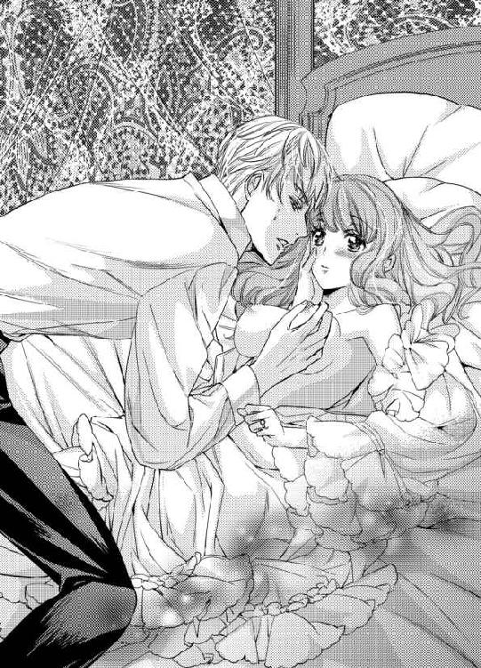
「ひぁんっ！ んぅっ......んんっ......くすぐったいけど、気持ちい......っ」
なんとかいつもの自分の声に直したいのに、クラウスに触られるとどうしてもこんな変な声になってしまう。
「感度抜群だな」
クラウスはククッと笑うと再び胸の先端を口に含み、舌を小刻みに動かしていく。
「ぁっ......あんっ！ んっんっ......はぅっ......舌......すごいの......んっ......んぅっ......気持ち、ぃ......お兄様......」
チュパチュパと音を立てながら胸の先端を可愛がっていたクラウスが、同時にもう片方の胸の先端を指の腹で撫で転がし始める。
「はぅっ......んんっ......あぁっ！」
片方だけでも気持ちよくておかしくなりそうなのに、両方なんてどうしたらいいのだろう。身体の芯が今までにないくらい熱くなっていくのを感じる。
クラウスは硬くなった胸の先端を抓むと、指と指の間でその感触を楽しむかのようにクリクリと転がし、口に咥えている方の先端をチュッと強く吸う。
「ひぁっ!? あんっ！ んんっ......はぁ......はぁ......んぅっ......」
ああ、なんて恥ずかしい声なの......。
でも、止められない。
「......っ......そんな可愛い反応をするな。ただでさえ媚薬で昂ぶっているのに、そんな煽られたら今すぐねじ込みたくなる」
可愛い？ こんなに恥ずかしい声や反応をしてしまっているのに？
自分では全く可愛いとは思えないけれど、クラウスに可愛いと思ってもらえたのなら嬉しい。
クラウスは戸惑うリリアーナの足の間に手を滑らせると、白い太腿をしっとりと撫でた。普段ドレスに隠れて見えない場所を彼に触れられていると思ったら、恥ずかしいのに興奮してしまう。
「んぅ......っクラウスお兄様、だ、抱いてくれるの？」
「怖気付いたか？ これだけ煽られたんだ。やめてやるつもりはないぞ」
クラウスはニヤリと意地悪な笑みを浮かべると、胸の尖りを指の腹でクリュッと潰す。
「ぁン！ お、怖気付いてない。嬉しい......クラウスお兄様、ありがとう......夢みたい」
嬉しさのあまり抱き付くと、敏感になった胸がクラウスの身体で潰れて形を変える。
「襲いかかられて礼を言う奴がどこにいる」
「だって嬉しい......んっ......んぅ......」
少しだけ身体を離すと再び唇を深く奪われ、胸を揉みしだかれた。指と指の間に硬くなった先端を挟みこまれると、揉まれるたびに擦れて甘い刺激が襲ってくる。
「んっ......んぅっ......んっ......んんっ......」
唇と胸──同時に与えられる刺激はあまりにも甘美で、無垢な膣口は蜜で洪水のように溢れ返っていた。
「......リリア、お前は処女か？」
唇を離して早々、クラウスは胸の先端を指で弄りながら質問してきた。リリアーナは真っ赤な顔をしながらもコクリと頷く。
「......媚薬の効能が思った以上にきつい。一度や二度の射精じゃ治まりそうにないが、処女に何度も求めるのは酷だな」
じゃあ、抱いてくれないってこと......？
「い、嫌っ！ クラウスお兄様、やめるなんて意地悪なこと言わないで......」
リリアーナが泣きそうになりながら懇願すると、クラウスが口元を緩めた。
「誰が言うか。ただ、何度も求めていたら、お前の身体が持たない。何度か出しておきたいから手伝ってくれ」
「出す？」
無力な自分が手伝えることがあるなんて嬉しい。でも言っている意味がよくわからない。クラウスが身体を起こすので、リリアーナも一緒に身体を起こして彼の真正面に座った。
恥ずかしいので胸を隠そうとしたが、ボタンが弾け飛んでしまったので隠せない。腰から下は隠せているのに胸だけが露わになっているというのはなんだか間抜けに感じる。
「クラウスお兄様？ あっ......」
リリアーナが胸を気にしていると、クラウスは下履きを緩めて硬く反り立った自身を取り出す。
これがクラウスお兄様の......。
それはリリアーナが想像していたよりもずっと大きくて、とても不思議な色形をしていた。先端の穴からは透明な液体が出ていて、今にも垂れそうだ。
泣いているみたい......。
ついまじまじと眺めてしまうと、クラウスがククッと笑う。
「そんなにジッと見てどうした。怖いか？」
「あっ！ ご、ごめんなさい。怖くなんてないわ。クラウスお兄様のだもの」
大事なところをジロジロ見るなんてはしたないと思いながらも、目が離せない。クラウスはリリアーナの手を掴むと、硬く反り立った自身へ導く。
「リリア、手で握って、上下に扱いてくれ」
「し、扱いてどうするの？」
「扱くと気持ちよくなって、子種を放つことができる。今のままでは薬が効きすぎてきつい。お前に入れる前に、一度出しておきたい」
出すって、そういうこと......！
「わ、わかったわ」
リリアーナはクラウスの欲望に触れ、恐る恐る握ってみた。
以前メイドから聞いたことがある。男性はここが最も弱く、少しぶつけただけでも息が止まるほどの痛みを感じるのだと──。
「ク、クラウスお兄様、痛くない？ 大丈夫？」
どれくらい握ったら痛みを与えてしまうのだろう。
力加減がよくわからなくて触れるか、触れないかという具合だ。あまりにもわずかにしか触れていないものだから、どんな感触なのかもわからない。
「ああ、痛くない。......と言うより、握れていない」
クラウスはリリアーナの欲望を握る手を自身の手で覆うと、しっかりと握らせた。
「あっ......」
クラウスの欲望は温かくて、しっとりしていて、とても淫らな感触だ。リリアーナが戸惑って握ったまま何もできずにいると、彼は無垢な小さな手を操り、上下に動かし始める。
「こうして上下に扱いてくれ」
ガラス細工でも扱うようにとても繊細に触れなくてはと思ったが、意外と遠慮のない動きと力具合だ。
「こ、こんなに擦って大丈夫なの？ 痛くない？」
「平気だ」
クラウスは眉を顰め、息を乱す。やはり痛いのではないだろうか。
「クラウスお兄様、本当に痛くない？ なんだかお辛そう......」
「痛くない。お前の手が気持ちいいからそう見えるだけだ」
「えっ！ 私の手、気持ちいいの？」
「ああ、気持ちいい」
先端から溢れてきた透明な液体が潤滑油となり、手が動かしやすくなる。上下させるたびにクラウスが息を乱す。その表情はとても艶やかで、思わず生唾を呑んでしまうほどだ。
自分の手で気持ちよくなってもらえるなんて嬉しい。彼の感じている顔を見ていると、今は触れられていないのにお腹の奥がキュンと切なくなる。
リリアーナが要領を掴めてくると、クラウスは自身の手を離して操るのをやめた。
「動かし続けていればいい？」
「ああ、止めないで動かしていてくれ」
クラウスは自由になった手で、今度は胸を包み込む。揉むたびに手の平に硬くなった先端が擦れ、甘い快感が襲ってきた。熱い欲望を扱く手が震えて、動かせなくなってしまう。
「んっ......クラウスお兄様、だめ......」
「気持ちよくないか？」
「気持ち、ぃ......けど、だめ......手が動かせなくなっちゃうわ......」
辛うじて動かせてはいるけれど、先ほどよりもうんと遅い。
「気持ちいいのなら、問題ない。頑張って動かせ」
「そ、そんな......」
クラウスはニヤリと笑うと、片方の手で胸を可愛がりながら、ナイトドレスの裾に空いている方の手を潜り込ませた。
「ぁっ......」
クラウスは片手でドロワーズの紐を解くと、先ほどから疼いていたリリアーナの最も秘めたる場所を目指す。
無骨な指は薄い茂みを通り抜け、興奮で濡れた花びらの間にクチュッと淫らな音を立てながら滑っていった。
「んっ......！」
胸に触られるのはくすぐったくて、気持ちがよかった。でも、ここに触れられるのはもっとくすぐったくて、気持ちがいい。
「ヌルヌルだ。こんなにも濡らしていたのか」
「や......言わないで......」
女性がこうして秘部を愛液で満たすのは、男性を受け入れるためには重要なことなのだと聞いたことがある。でも、恥ずかしくて堪らない。
「ひぁんっ!?」
指の腹が敏感な蕾に触れた瞬間、全身が甘く痺れた。そこに触れられた瞬間頭が真っ白になって、胸と両方刺激されると、何も考えられなくなるほどの強い快感が走る。
「ここを触れられるのはどうだ？」
クラウスは蜜を纏った指で、そこを執拗に責めたてた。指の腹の間でプリプリ転がされるたびに膨らみ、どんどん敏感になっていくみたいだ。
「あっあっ！ や......そ、こ......だめっ......」
「嫌いか？」
リリアーナは甘い声を漏らしながら、首を左右に振った。
嫌いなんかじゃない。とても気持ちがよくてすごく好きだ。押し寄せる快感はあまりにも甘美で、自分が自分ではなくなりそうな怖さもあった。でも恐怖心を上回るほどの欲求が生まれる。
気持ちいいの。もっと触って......。
でも、あまりにも気持ちよすぎて、手が動かせない。感じることしかできなくなって、クラウスを気持ちよくできなくなってしまう。
「リリア、手が止まってるぞ」
「んぅっ......だって、ぁんっ！ はぅっ......気持ち、よすぎ、て......んんっ......だ、だめ......も、触っちゃ......動かせなっ......はんっ」
「そうか。頑張れ」
「が、頑張れって言われてもっ......ぁんっ！」
これ以上刺激を与えないでと訴えても、クラウスは意地悪な顔で笑って胸と秘部に快感を与え続ける。リリアーナは必死に手を動かし続けるけれど、どうしても途中で動きが止まるし、感じると指が震えてしまう。
「......っ......ああ、いいな」
「い、い？」
「お前が感じるたびに指が震える。それが気持ちいい」
「そ、そう、なの？ えっと、どんな感じ？」
クラウスは艶やかな表情で口元を吊り上げると、敏感な蕾に指を宛がって震わせる。
「こんな感じだ」
振動は瞬く間に激しい快感となり、リリアーナは一際大きな嬌声を上げた。
「ひぁっ！ んんっ......あぁっ！」
「気持ちいいだろう？」
リリアーナは快感に痺れ、瞳を潤ませながら頷く。
「......俺の愛撫に感じるお前を見るのは、最高にいい気分だ」
私もクラウスお兄様が気持ちよくなってくれているのを見ると、すごく素敵な気分になるわ......。
クラウスが息を乱すたびに、美しい金色と紫色の瞳が熱っぽく揺れるたびに興奮して、お腹の中がどんどん熱くなり、また蜜が溢れ出す。
もっと気持ちよくなってほしい。もっと素敵な気分になりたい。
リリアーナは感じて止まってしまいそうになる手を必死に動かし続け、クラウスに快感を与え続けた。
「あっあっ......んんっ......はうっ......」
刺激を与えられ続けているうちに、足元からじわじわと何かが頭を目指してせり上がってくるのに気が付く。
未知の感覚──今までに感じたことのない初めての感覚......それなのに、どうしてだろう。これが頭まで到達した時、とても素晴らしいことが起きる気がするのだ。
「......っ......そろそろ達きそうだ。リリア、手の動きを速めてくれ」
達く......とはなんだろう。よくわからないけれど、きっとクラウスが気持ちよくなれることなのだろうということだけはわかる。
「んぅっ......は、速くって？ こう？ 痛くない？」
襲い掛かってくる未知の感覚に戸惑いながらも、リリアーナは恐る恐るといった様子で手の動きを速めた。しかし、痛みを与えてしまうのではないかと怖くて、先ほどよりほんのわずか速くなっただけだ。
「痛くない。これくらい速めても大丈夫だ」
クラウスは敏感な蕾を撫でる動きを速め、リリアーナに強い快感と共に要領を伝えた。
「あっ......んんっ！ あっ......あぁ──......っ」
足元からせり上がってきている何かが一気に駆け上がってきて、頭の上まで突き抜けていく。リリアーナはガクガク震えながら、大きな快感の波に呑み込まれる。
なんて気持ちがいいの......。
頭が痺れて、クラクラする。身体に力が入らなくて、クラウスの欲望から手を離してしまい、自力では座っていられなくなり、彼にもたれかかった。
「先に達ったのか？ ずるい奴だ」
クラウスは秘部に潜り込ませていた手を引き抜き、もたれかかったリリアーナを抱き寄せると、意地悪な顔をして彼女の鼻の頭をカプリと噛んだ。
達った......？
この感覚が先ほどクラウスの言っていた「達きそう」という意味だったようだ。
「ん......ごめんなさ......」
大好きなクラウスにもこの素晴らしい感覚を与えたい。それなのに絶頂の余韻で痺れて、瞼や唇を動かすことすら難しくて、手がなかなか持ち上がらなかった。するとクラウスはリリアーナの手を再び操って、ガチガチに硬くなった自身を扱かせる。
「あっ......っ」
「身体に力が入らないのか？ そこまで感じられると、男冥利に尽きるな」
自分ばかり気持ちよくなって、クラウスのことを気持ちよくしてあげられていない。それなのに彼は嬉しそうな顔をしていた。
クラウスはリリアーナに深いキスを落としながら、彼女の手を操って激しく自身を上下に扱かせる。
「んっ......んぅっ......んんっ......！」
咥内や舌、そして指先や手の平に伝わってくる淫らな感覚で、ただでさえ熱い身体がどんどん昂ぶっていくのを感じる。
「出すぞ......」
クラウスはリリアーナの手の平で自身の先を包み込むと、熱い欲望を弾けさせた。
「あっ......」
硬い欲望の塊がドクンドクンと激しく脈打ち、リリアーナの手の平に白濁液をたっぷりと放つ。
「クラウスお兄様、いっぱい出てる......」
「......っ......煽るようなことを言うな。ただでさえ媚薬と初めて見るお前の身体で興奮してるのに、なおのこと興奮させてどうする」
手の平の中にあるクラウスの分身は、精を放ってもそのままの硬さを保っていた。手の平に放たれた液体は、嗅いだことのない不思議な香りがする。
どうしてだろう。この香りを嗅いでいるとゾクゾクして、身体の芯が熱くなるのを感じた。
「一度ではやはり治まらないか。リリア、もう少し手を貸してくれ」
「え？ あっ......ひぁんっ！」
クラウスはリリアの手を操って自身を上下に扱きながら、空いている方の手を再び彼女の秘部へと伸ばした。
白濁液を纏った手の平で肉棒を扱くたびに、蜜で満たされたリリアーナの秘部も指が弄るたびに、二つの場所からグチュグチュと淫猥な水音が聞こえてくる。
「あっ......あっ......クラウスお兄様、また来ちゃう......達っちゃ......うぅっ......ぁあ──......」
リリアーナはそれから三度達し、クラウスも同じ回数達した。媚薬の効能のせいか、彼の欲望は未だ射精前のように、硬さをガチガチに保っている。
「......少し楽になったが、まだまだだ。......クルトめ。適正量以上の媚薬を盛ったんじゃないだろうな」
クラウスはシャツを脱ぐと、それを使ってリリアーナの手にたっぷりと付いた欲望の証を拭い取る。
「後で洗ってやるから、今はこれで我慢してくれ」
絶頂に痺れてぼんやりしているリリアーナは、昔のことを思い出して笑ってしまう。
「ふふ」
「何がおかしい？」
「昔のこと、思い出したの......」
まだクラウスがハウライト国に滞在していた頃、リリアーナは彼と共に雨上がりの庭を散歩していて、転びそうになったことがあった。
地に手を突くことで転ばずに済んだが、手が泥だらけになって困っていたら、クラウスが持っていたハンカチで丁寧に拭ってくれたのだ。
お礼を言うと、『お前は忘れっぽいから、泥だらけなのも忘れて俺にしがみ付いてくるかもしれない。それが嫌だから拭いているだけだ』と言っていたけれど、彼が小さな手の平に傷がないかどうか確かめていたことをリリアーナは知っている。
クラウスお兄様は捻くれたことを言うけど、本当は誰よりも優しいの......。
リリアーナが乱れた呼吸を整えながら昔話をすると、クラウスは「そんなこと忘れた」
と、気恥ずかしそうに顔を背けた。
「ふふ、忘れたなんて嘘だわ」
「本当だ」
「クラウスお兄様、照れてる？」
「うるさい」
クラウスはにやけているリリアーナを組み敷くと、腰に引っかかっていたナイトドレスを取り払う。
「ぁっ......」
身体が火照っているせいか、部屋の気温はそれほど低くないのにとても涼しく感じる。それが心地よくて肌が粟立つ。
唯一残っていた蜜でグショグショに濡れたドロワーズをずり下され、リリアーナはとうとう一糸纏わぬ姿となった。
ああ、なんて恥ずかしいの......。
「......っ......クラウスお兄様、あんまり見ないで。恥ずかしいの......」
「断る」
クラウスはニヤリと意地悪な笑みを浮かべると、リリアーナの両足を大きく広げさせて秘部を覗き込む。
「きゃっ!? や......ク、クラウスお兄様、見えちゃう......っ」
「当たり前だろう。見ようとしているんだからな」
「そ、そんな......」
快感を与えられ続けたリリアーナの花びらは厚みを増し、無垢な蕾はぷっくりと膨れていた。小さな膣口はヒクヒクと収縮を繰り返し、トロトロと甘い蜜を零す。
「何も知らない無垢な色形なのに、こんなに淫らな蜜を零して......」
差異が堪らなく興奮させられると、クラウスは舌なめずりしながら呟く。
「や......っ......クラウスお兄様、本当に恥ずかしいの......」
リリアーナは両手で顔を隠して羞恥心を紛らわせようとするが、やっぱり恥ずかしいままだ。足を閉じようとしても彼の身体が挟まっているから、少しも閉じられない。
「そうか、恥ずかしいか」
わかってくれた......!?
もう見ないでくれるだろうと期待したが、彼は二本の指で花びらを開き、よりじっくりと眺め出す。
「も......恥ずかしいって言ってるのに......、どうして見るの？」
「恥ずかしがるお前を見ていると興奮するからに決まっている」
「もう、クラウスお兄様の意地悪っ......ひぁんっ!?」
クラウスはニヤリと笑うと綺麗な顔を秘部に近付けて、敏感な蕾を舐め始めた。
「や......そ、そんなとこ、舐めちゃだめっ......ぁんっ！ あっ......やっ......あぁっ！ お、お兄様、やめっ......あんっ！」
指で弄られる時以上に強く甘い刺激が襲いかかってきて、腰がガクガク震える。
「あっあっあっ......だめぇ......」
クラウスは一度顔を上げると淫らな顔をして喘ぐリリアーナを見て、満足そうに笑う。
「手で気持ちよくしてくれた礼だ。指一本動かせないぐらい感じろ」
「や......っ......待って、クラウスお兄様......そんなところを舐めては汚いわ......」
「なぜだ？」
「な、なぜって、だって......ぁっ！」
どう説明しようか考えているうちに、彼は再び足の間に顔を埋めた。熱い肉厚な舌が敏感な蕾に絡み付くと、身体がとろけそうなほどの刺激が走る。
「ああっ......！」
舐められるたびに、小さな蕾はどんどん膨れていく。まるで刺激をより受け止めるために大きくなっているみたいだ。
「んっんっ......ぁ......っ......はんっ......んぅっ......ぁんっ！ あっ......あぁ──......っ！」
ねっとりと円を描くように動いていたかと思うと上下に激しく動かされ、時折唇に咥えられて震わせられる。
一つ一つの動きが巧みで、全く予測ができない。大きな快感の渦に呑み込まれ、リリアーナはすぐに絶頂へ達した。
しかしクラウスは達した後も敏感な蕾を舐め転がし続け、リリアーナは絶頂の余韻に痺れながら、また新たな刺激に翻弄される。
身悶えするたびに、喘ぐたびに、蜜が溢れて臀部にまで垂れ、シーツは水を零したようにぐっしょりと濡れていた。
「あっ！ だ、だめっ......今、きてる最中で......あっ......んんっ！ だめ......っ......あぁ──......っ！」
クラウスに刺激を与えられるたびに上下する豊かな胸や、足の間に顔を埋めている彼の姿を見て、じゅるじゅると秘部を可愛がる音を聞いていると、恥ずかしいのに、興奮してしまう。
羞恥心や興奮が、リリアーナの感度をどんどん上げていく。快感の上限が見当たらない。これ以上は本当におかしくなりそうだ。
敏感な蕾を唇で挟み込まれ、小刻みに震わせられながら少し強く吸われた。
「ひうっ......!?」
頭が真っ白になって理性が蜜や涙となって蕩け出し、残るのは本能だ。
おかしくなったとしても、もっと感じたい。気持ちよくなりたい。
だって私、ずっとクラウスお兄様にこうしてもらいたかった......。
気持ちよくて、嬉しくて、たくさんの気持ちが入り混じった涙が目尻から流れていく。リリアーナは何度も絶頂に達し、クラウスの宣言通り指一本動かせなくなった。
何度達しただろう。頭がぼんやりして、思い出せない。
顔を上げたクラウスは絶頂の余韻に痺れるリリアーナを見下ろすと、満足そうに笑みを浮かべ、唇と指に付いた蜜を舐め取る。
「リリア、ここからは処女だと気持ちいいどころか、痛くて辛いと思うが、耐えろ。それを乗り越えれば、直によくなる」
痛い？ 耐える？ なんのこと？
ぼんやりしすぎていて、聞こえてはいるけれど、リリアーナは意味を理解することができない。しかし何度かの射精の後だと言うのにガチガチに硬くなった欲望を蜜で溢れ返った膣口に宛がわれ、ようやく理解した。
「クラウスお兄様、私が痛いって言ってもやめないでね？」
「むしろ『痛い。もう嫌だ』と言われてもやめるつもりはない」
クラウスは「観念しろ」と吐息混じりに呟くと、ゆっくりとリリアーナの下腹部に腰を押し付けた。彼の熱い欲望が何も知らない小さな膣口を広げて、奥を目指していく。
「痛っ......！」
鋭い痛みが走り、リリアーナは苦痛に顔を歪める。
クラウスから聞かされる前から、仲のいいメイド達の話で、初めては痛いと知っていた。痛いのは苦手だけれど、夫や恋人がいる女性は誰もが乗り越えているのだから、きっと痛いとは言っても、耐えられるくらいの痛みだろうと予測していた。
しかし、この痛みは予想外だ。少し入れられただけなのに、下半身が引き裂かれそうだと思うほどに痛む。
こんなに痛い経験をするのは初めてだ。今まで体験したどんな痛みよりも辛い。先ほどまでは指一本動かせないほど身体に力が入らなかったが、あまりの痛みで指には力が入らないままだけど、下腹部にだけ力が入る。
「力が入らないほど達かせたつもりだったが、ここの力までも奪うのは無理だったようだな。リリア、力を抜け。そうすればわずかだが、痛みが和らぐぞ」
少しでもこの痛みを和らげたい。リリアーナはクラウスに言われた通りに力を抜こうと試みるが、そもそも自分の意志で入れた力ではないので、どうしたらいいかわからない。
混乱しているせいでどう伝えていいかもわからないリリアーナは、大粒の涙を零しながら、視線でクラウスに訴える。
「......と言っても、どうしていいかわからないか？」
見つめるだけで思っていることが伝わるわけがないと思っていたのに、クラウスにはしっかり伝わっていたようだ。
痛みで混乱しながらも、伝わっていたことが嬉しくて、胸の中が温かくなる。
「こっちに集中すれば、力が抜ける」
「こっちって、どっち？ ぁっ......！」
クラウスは胸を持ち上げるように揉み、触ってほしいと主張するようにツンと尖った先端をしゃぶり始めた。
「や......んんっ......」
お腹の奥が震え出し、下腹部に入っていた力がわずかに緩む。クラウスはその隙を狙うようにグッと腰を押し付け、熱い欲望を最奥まで突き入れた。
「──......あぁっ！」
目の前が真っ赤に染まり、リリアーナは痛みに悲鳴を上げる。
膣道が焼けているように熱い。まるで火が付いた太い杭でもねじ入れられたようだ。また下腹部に力が入り、クラウスの欲望を強く締め付けた。
「......っ......痛むか？」
答えたいのに、あまりの痛みで声が出ない。リリアーナは涙をボロボロ零しながら、わずかに頭を上下に頷かせた。
「しばらくは辛い。先ほども言ったが、嫌だと言ってもやめてやれないぞ。頑張って、耐えろ」
すごく痛い。でも、やめてほしくはなかった。
「う......ありが、と......クラウスお兄様......」
ようやく声を出すことができた。クラウスはククッと笑い、リリアーナの涙を親指の腹と唇で拭う。
「痛いのをやめてやらないと言っているのに、なぜ礼を言う？ 変な奴だな」
だって、本来なら純潔はアンデシン国王に捧げなければいけなかったはずだ。それなのに今、リリアーナは大好きな人に抱いてもらえている。なんて幸せなことなのだろう。
「だって、幸せだから......」
痛みで顔を歪めながらも笑みを浮かべたリリアーナを見て、クラウスが瞳を細める。
「......変な奴と言ったのは訂正する。お前は馬鹿だ」
蔑むような声音ではなかった。とても優しくて、心が震えるような柔らかな口調に感じた。こうして会話を交わしているうちに、鋭い痛みが少しずつ鈍痛へ変わっていく。
「少し痛みが治まってきたようだな？」
「どうしてわかるの？」
「表情を見ていればわかる。眉間に寄せていた皺が少し浅くなった。そろそろ動くぞ。痛みが強くなるだろうが、長くは続かない。馴染んでくればまた和らぐはずだ。それまで耐えろ」
痛いのは怖いけれど、ずっと続かないとわかれば気持ちが楽になった。リリアーナが頷くのと同時に、クラウスが抽挿を始める。
「うぅ......！ ひぅっ......うっ......んぅ......っ」
遠ざかっていた痛みが舞い戻り、リリアーナは奥歯を噛みしめた。
火の付いた太い杭が中を前後しているように感じて、奥にゴツゴツ当たるたびに瞼の裏が真っ赤に染まるようだ。
それでもだんだん痛みが和らいでくると教えてもらったから、それが希望となって辛くはない。
クラウスのきめ細やかな美しい肌には玉のような汗が浮かび、金と紫色の神秘的な瞳は快感に揺れていた。その表情を見ていると興奮して、お腹の奥がズクズクと疼く。
「あまり噛みしめすぎると、奥歯が砕けるぞ。噛むなら俺の肩を噛んでおけ」
「んっ......んぅっ......そ、そんなこと、できないわ......っ......怪我、しちゃう......」
「構わない。歯が砕けるよりましだ。それに俺ばかりが気持ちいいのは、不公平だろう」
形のいい唇から濡れた吐息が零れ、快感に震えた低い声がリリアーナの鼓膜を揺らす。
ああ、どうしよう......。
唇を見ていると、キスしてほしくなってしまう。
「噛むんじゃなくて、キスがいいの......」
勇気を出しておねだりすると、クラウスがニヤリと意地悪な笑みを浮かべる。
「肩ではなくて、舌がいいのか？ 舌を噛まれると、何かと不便なんだが......」
「ち、違っ......噛んだりしないわ......あの、だめ？」
こんな大胆なお願いをするなんて、はしたない子だと思われただろうか。自分の発言を後悔していたら、クラウスがククッと笑う。
「からかっただけだ。駄目なわけがあるか」
「えっ......も、クラウスお兄様の意地悪......んぅっ！」
話している途中に唇を重ねられ、念願だったキスを贈られた。長く巧みな舌が、痛みで引き攣っていた小さな舌を絡め取る。
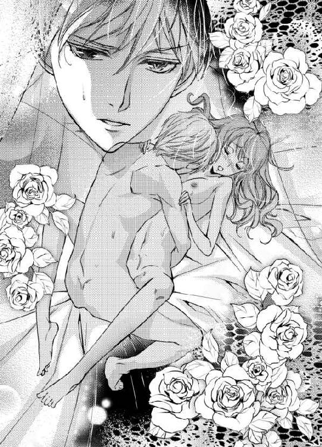
「んぅっ......んっ......ふぅ......んっんっ......」
クラウスは深い口付けと胸の先端を指で撫で転がしながら、ゆっくりとした抽挿を繰り返す。キスで身体の強張りが緩んだせいか、それとも欲望を体内に迎えることに慣れてきたのか、少しずつ痛みが和らいできているのを感じる。
「......っ......ン......ふ......んぅ......」
自身の形を馴染ませるようにゆっくりと腰を動かしていたクラウスだったが、絶頂が近付いてきているらしい。だんだん抽挿を激しくしていく。
「んんっ......！」
抽挿が早くなると遠ざかった痛みがまた戻ってくるけれど、奥から何か別の感覚が生まれ初めているのを感じる。
これは、小さな快感の粒だ。
今は痛みが強いからその快感の粒は大きく成長できそうにない。でも、いつかこの痛みがなくなった時、小さな粒が大きくなり、今まで体験したことのない快感が訪れるとなぜかわかる。これが本能なのだろう。
リリアーナが自分の中に小さな快感の粒を発見してから間もなく、クラウスは最奥で勢いよく欲望の証を放った。
「......っ......はぁ......あっ......あぁ......」
ドク、ドク、と膣内でクラウスが脈打つのを感じ、リリアーナはその刺激で肌を粟立たせる。
これで女性を抱いた......ということになるはずだ。これでクラウスの命は救われた。
よかった......。
安堵したせいか耐えがたい眠気が襲ってきて、眉間に力を入れていないと目を瞑ってしまいそうだ。
「眠いのなら、眠っても構わない」
「嫌......せっかく、クラウスお兄様と一緒なのに、寝ちゃうなんて勿体ない......もの......」
リリアーナは乱れた呼吸を整えながら必死に答える。強い眠気と懸命に戦っていたが、クラウスに優しく頭を撫でられると眠気の他に心地よさまで襲ってきて、それからすぐに眠りに落ちてしまったのだった。
第三章 深まる想い
「リリア、おめでとう！ ついにクラウス兄さんと一線を越えられたね！」
翌日の夜、クルトが満面の笑みでリリアーナの部屋を訪ねてきた。
「クルト、大きな声で言わないでっ！ シーッ！」
人差し指を口元に持って行き、小さな声で話すようにお願いするけれど、興奮した様子のクルトは「ごめん、ごめん！」と謝りながらも、先ほどと何も変わらない大きな声ではしゃぐ。
「クラウスお兄様と、その......夜を一緒にできたのは嬉しいわ。でも、媚薬は使わないでってお願いしたら、「わかった」って言ってくれたのに、どうしてあんなことしたの？」
「わかったとは言ったけど、僕は何か約束をしたわけじゃない。大好きな人を騙し打ちにするような真似は嫌だっていうリリアの考えが素晴らしいと思って『わかった』って賛同しただけで、媚薬を盛らないとは一言も口にしていないよ？」
「なっ......」
クルトはニッコリ笑うと、ソファに寝転んだ。
意地が悪い......でも、この笑顔はどこか憎めないし、そもそも彼の行動はリリアーナのことを思ってしてくれたことだ。それ以上責めることはできない。
「あぁ～......もう、限界。立っていられないよ～」
「どうしたの？」
「変な考えが起きる余裕をなくしてやるって、朝からクラウス兄さんに剣の稽古でしごかれてさ～......膝が大笑いしてるよ」
そういえば昨夜、剣の稽古をつけると言っていた。大きなため息を吐いて膝を擦っているクルトを見て、リリアーナは思わず笑ってしまう。
「ふふ、お疲れ様。今日は早く休んだ方がいいわ」
「うん、そうするよ。リリアは今日も寝不足だね。ようやく今夜からクラウス兄さんと同じ寝室で朝まで甘い時間を過ごすんだもんね」
「え、どうして？ 今日も一緒に寝てほしいってお誘いに行くつもりではあるけど、きっといつも通り断られると思うの」
「それこそどうして？ 一線を越えたのに、別々の寝室で眠ることがある？」
だって昨夜のことはクラウスの命がかかっていたからで、それもリリアーナが彼の仮面を隠した上に、泣き落としたから仕方なくのことだ。今夜も別々の寝室で眠るだろうし、もちろん抱いてくれるはずがない。
「昨日は命に係わる薬を飲んでいたし、私が泣いて、仮面を隠したから仕方なくそうしてくださっただけなの。だから......」
一線を越えられたところで、事態は何一つ変わっていないんだわ......。
クルトが含みのある笑みを浮かべるが、俯いているリリアーナは彼の表情の変化に全く気が付いていない。
「リリア、元気を出して。そうだ！ 気分転換に大浴場に行って来たら？ 泳げるほど広くて気持ちいいよ」
「泳げるほど!? すごいのね」
「今は誰も入っていないだろうから行っておいでよ。クラウス兄さんもよく利用するから、話の種にもなるだろうしね」
「ええ、そうするわ......と言いたいところだけど、今日はもう部屋のお風呂を用意してもらっているの。今日は部屋で済ませて、また今度誰も居ない時に使わせてもらうわね」
「えっ！ そんなの気にすることないよ。せっかくだし、入っておいでよ！ ね？」
「でも、せっかく用意してもらったから......」
「あ、そうだっ！ 用意してもらったのは僕が使うから、リリアは大浴場を使いなよ。それならいいでしょ？ ね？」
クルト、私を励まそうと、こんなにも気を使ってくれて......。
彼の気持ちが嬉しくて、胸の中が温かくなる。
「ありがとう。じゃあ、行ってくるわね」
クルトは「ごゆっくり」と笑い、ソファに寝転んだままヒラヒラと手を振って、リリアーナを見送った。
彼が含みのある笑いを浮かべていることに、とうとう気が付かないまま──。
◆◇◆
メイドに手伝ってもらって入浴をする貴族や王族もいるようだが、リリアーナは一人で入るのが落ち着くので、自国ではほぼ一人で入浴していた。しかし、ネフライト国では必ずメイドが付くようになり、一人で入りたいと願っても許可してもらえなかった。
今日もそうだろうと思っていたが、あっさりと一人で入浴することを許可されたので驚いた。大浴場だと一人で入ってもいい決まりがあるのだろうか。
よくわからないけれど人に洗ってもらうというのは落ち着かなかったし、今日はのびのびできそうで嬉しい。それに大きなお風呂に入るなんて初めてのことだ。落ち込んだ気持ちが、少しだけ浮上するのを感じる。
浴場の扉を開けると、予想以上に広い。しかし広いことはわかるが、湯気で満たされている上に薄暗いため、どこに何があるかよく見えない。
十分に気を付けて歩かないと......うっかり転んでしまっては大変だ。
慎重に足を進めていくと、浴場と浴槽の境目を見つけた。
「あっ！」
危ないところだった。気を付けて歩かなかったら、境目に気が付かずに落ちてしまったに違いない。
浴槽の中にある階段を慎重に下り、お湯の中に身体を沈めた。
「痛っ......」
お湯が胸の谷間に当たると、じんわりとした痛みを感じた。視線を落とすと、擦り傷ができている。
どうしてこんなところに？
と思ったのは一瞬のことで、すぐに昨日仮面を挟んだことを思い出し、リリアーナの頬を燃えあがらせた。昨日は痛みを感じなかったけれど、興奮状態だったから気が付かなかったのだろう。
今朝から一人になると、昨日のことばかり考えてしまう。
私、実は淫らな女の子なのかしら......。
淫らな考えを散らそうと首を左右に振るけれど、考えどころか湯気も散らない。
クラウスお兄様、今頃どうしているかしら......。
クラウスとは今日、一度も顔を合わせていない。
先に目覚めたのか、それともリリアーナが意識を手放した後にどこか違う所で休んだのかはわからないけれど、今朝、リリアーナがクラウスの部屋で目覚めると、彼の姿はどこにもなかった。
いつもならお茶をしに政務室へ押し掛けているが、今日ばかりはどんな顔をしてクラウスの前に立てばいいのか、なんの話をすればいいかわからなくて、結局夜になってしまったのだ。
クルトに宣言した通り、今夜も一緒に寝ようと誘うつもりだけれど、夜になってもやはりどんな顔で彼の前に立てばいいかわからないままだ。
それにクラウスの部屋に入ったら、昨日の情事を思い出してしまいそうで──......ああ、駄目だ。また淫らなことを考えてしまう。
ふと、湯気の奥に人影のようなものが見えることに気が付いた。きっと浴槽の中に彫像が飾られているのだろう。
どんな彫像かしら......。
正直なところ芸術にはあまり興味がないけれど、気が紛れるかもしれない。立ち上がって近付いてみることにした。
「お湯の中って、歩きにくいのね......」
こんなにも広いお風呂に入ったのは初めてだから、お湯の中を歩くのも当然初めてだ。予想以上の歩きにくさに驚いて、思わず独り言を呟いてしまう。
「その声......クルトかと思ったら、お前だったのか」
「クラウスお兄様!? え？ ど、どこ？」
とても近くから聞こえるのに、姿が見当たらない。慌てて手を交差して胸を隠し、お湯に身体を沈めると、水しぶきが立つ。
「......っ......こら、顔にかかったぞ」
「お顔？ クラウスお兄様、どこにいるの？」
「目の前だ」
彫像だと思っていた影が動いて、リリアーナはビクッと肩を震わせる。
「まさか、彫像じゃなくて、クラウスお兄様なの？」
「誰が彫像だ」
影が手らしきものを左右に動かして立ち込めた湯気を払うと、寛いでいるクラウスの姿が見えた。
「ご、ごめんなさいっ！ 私、クラウスお兄様が入っているだなんて知らなくて......」
「覗きか？」
クラウスがニヤリと笑って尋ねてくる。リリアーナは真っ赤な顔をして、ぶるぶると首を左右に振る。
「違っ......！ 違うのっ！ ほ、本当に知らなかったの！ 覗くつもりなんて......」
「ふぅん？」
う、疑われてる......!?
「本当なの！ 嘘だと思うなら、クルトに聞いてみて？ クルトが今なら誰もいないだろうから、入っておいでって言ってくれたんだもの！」
「また、あいつか......まだこんなことを考える余裕があったとはな。明日は今日の倍、鍛えてやることにしよう」
「えっ？ どうして鍛えるの？ クルトは何も悪くないわ」
「あいつは今、俺が入っていると知っている。ここへ来る前にすれ違って、どこへ行くか尋ねられたからな。昨夜の媚薬の時と同じように謀ったのだろう」
「そんな......クルトは私を元気付けようとしてくれて......あっ」
そういえば、妙に『今』大浴場へ行くことに拘っていた。
「お前にも心当たりがあるようだな？」
「え、ええ、あの、とにかくごめんなさい。私、出直すわね」
「待て。鈍臭いんだから、慌てて出たら転ぶのがオチだ。そのまま入っていろ」
クラウスは濡れた前髪をかき上げると、浴槽の縁に置いていたワイングラスを手に取って口を付ける。彼の頬がわずかに赤いのは温まったからだけではなく、お酒のせいでもあるのかもしれない。
艶めかしくて、見てはいけないものを見ている気がして思わず俯くと、肌の色が視界に飛び込んでくる。
「......っ」
お湯は無色透明だ。何も身に着けていない彼の素肌が見えるのは至極当然なことだ。もちろん彼からもリリアーナの全てが見えていることだろう。昨日見られたとはいえ、恥ずかしくて堪らない。
まだお湯に浸かってから少しの時間しか経っていないのに、羞恥心でのぼせそうなほど顔が熱くなってクラクラする。
「あの、私、やっぱり出ようかなって......」
「なんだ。俺と一緒なのが嫌なのか？」
「まさか！ 嫌なんかじゃないわ！ 恥ずかしいけど、すごく恥ずかしいけれど、クラウスお兄様と一緒に居られるのは嬉しいもの！ それが、は、裸でも......」
胸を隠している両手にギュッと力を込めると、クラウスがククッと笑う。
「ああ、恥ずかしいのか」
「恥ずかしいに決まっているわ......クラウスお兄様は、恥ずかしくないの？」
「そうだな。恥ずかしい。あー......恥ずかしい」
クラウスはワインを飲みながら、棒読みで答えた。
「もうっ！ 本当はそう思ってないでしょうっ！」
「いや、恥ずかしいぞ」
どうにかなってしまいそうなほど恥ずかしいと言うが、全くそんな風には見えない。
意識しているのは自分だけなのだと思ったら、やはり自分は異性ではなく妹としてしか見られていないように感じて悲しいし、すごく面白くない。
リリアーナは口をへの字に結び、ムスッとした顔でクラウスからあからさまに顔を背ける。
「むくれた顔をしてどうした？」
クラウスが半分笑った状態で尋ねてくるものだから、もっと面白くない。
私、そんなに魅力がないかしら......。
そういえば昨夜は、女性を抱かないと死んでしまうにも関わらず、目の前にいるリリアーナに触れずに部屋を出ようとしていたということは、そういう対象としては見てくれていないということだろう。
「なんでもないもの......」
「ふぅん？」
あの時に部屋を出ていたら、クラウスはどこへ行こうとしていたのだろう。命がかかっているのだ。女性のところへ行こうとしていたのは間違いない。
この城にいる方なの？ その方とはどういう関係なの？
火を付けられたみたいに、胸の中がチリチリする。
知りたい。でも、知りたくない。
「......クラウスお兄様、昨日は私が止めなかったら、どなたの所へ行こうとしていたの？」
傷付くとわかっていても、知りたさに負けて尋ねてしまう。
「誰の所でもないが？」
「えっ！ ううん、そんなはずないわ。本当のことを言ってっ！ 私、な、泣いたりしないから......」
クラウスの表情から嘘を吐いていないか暴こうとするが、彼はなぜそんなことを聞かれるのかわからないと言った様子で眉をひそめる。
「どうしてそんなはずがないになる？ 政務室に行って、一人で夜を明かそうと思っていた」
女性を抱かないと死んでしまうのに？
死んでも私を抱きたくなかったの？
「うぅ......っ」
泣かないと宣言したばかりなのに、ものの十数秒で菫色の瞳から涙がポロポロ零れて、お湯の中へ沈んでいった。
「泣かないのではなかったのか？ というか、なぜ泣くことがある」
「......っ......だって、しないと死んじゃうのに、それでも一人でいるなんて......死んでも私とは、し、し、したくないって、ことでしょう？」
「死ぬ？ なんのことだ。媚薬で死ぬ奴などいるわけがないだろう」
「いるのよ！ クルトが言っていたもの。媚薬を飲んだら、異性を求めないと死んでしまうって！」
クラウスは大きなため息を吐くと、「また、あいつか......」と忌々しそうに呟く。
「それはクルトの嘘だ。死ぬなんてありえない」
「えっ!?」
嘘──......!?
「次に会ったらボコボコに殴っていいぞ。......いや、素手ではお前が怪我をしてしまうな。......そうだ。分厚い本か、何か硬い物を使うといい」
リリアーナが衝撃のあまり何も言えずに固まっていると、クラウスが指の腹で涙を拭ってくれる。
「......なるほどな。お前が必死になっていた意味がようやくわかった。俺の命が危ないと思っていたからか。すまないことをしたな」
「謝らないで。必死だったのはそれもあるけれど、それだけじゃないわ。そのことがなくても私......ずっとクラウスお兄様に、触れてほしかったの......」
言葉にした後にとてもいやらしいことを口にしていることに気が付いて、リリアーナは頬を燃え上がらせた。
い、言わなきゃよかったわ......！
なんて淫らな子だと呆れられてしまっただろうか。異性として見てもらえない上に呆れられたら、どう立ち直っていいかわからない。
真っ赤になったまま俯き、新たな涙を零していると、指で顎を掴まれて真正面を向かされた。こんなグシャグシャになった顔を見られたら、余計異性として意識してもらえなくなる。
......いや、今までも散々酷い泣き顔を見られている。だから一人の女性としてではなく、妹としか思ってもらえないのかもしれない。
これ以上、こんな顔見ないで......。
「や......っ......んんっ」
顔を背けようとしたら、唇を深く奪われた。
どうして、キスしてくれるの？
潜り込んできた長い舌は、リリアーナの咥内を余すことなく味わうと、どうしていいかわからずに戸惑っている小さな舌にからみ付く。
「んっ......んぅ......んんっ......んぅ......っ」
ヌルリと舌が絡むと、クラウスが飲んでいたワインの味がする。
リリアーナはお酒が得意ではない......というより好きではない。味が苦手で飲み込むのが辛くて、なんとか我慢して飲み込むと喉が焼けそうに痛くなるのが嫌だ。なので公式の場でどうしても飲まなければいけない時以外は、口にしないようにしていた。でも、クラウスの舌から味わうワインは、とても美味しく感じるのはどうしてだろう。
もっと欲しいと強請るように、リリアーナはクラウスの真似をして舌を動かしてみる。一方的に受け入れるのも気持ちよかったけれど、自分でも動かすともっと気持ちがいい。
「ん......ふぅ......ん、ぅ......んんっ......」
唇を離すと、銀色の糸が二人の間を紡いでいた。本当にワインを飲んだ時のように、頭がクラクラして身体が熱い。
「......そういえば、先ほどどこか痛がっていたな。どこをぶつけた？ 相変わらずお前は鈍臭いな」
クラウスは舌で銀色の糸を切ると、ニヤリと笑って意地悪なことを言ってくる。
「ど、鈍臭くなんてないもの......」
「いいから、どこだ？」
「......胸」
「胸をぶつけたのか？ 鈍臭いを通り越して、器用な奴だ。どこをどうすれば、風呂で胸をぶつけるんだ？」
「ち、違っ......ぶつけたんじゃなくて、昨日......仮面を......その、挟んだ時に擦れちゃったみたいで......」
キスの余韻で痺れて、リリアーナはいつものように喋ることができない。少し甘ったるい口調になってしまい、昨日の情事を匂わせる発言も相まって恥ずかしくなり、だんだん小声になっていく。
「昨日は大丈夫だと言っていただろう？」
「私も大丈夫だと思ったんだけど、お湯に入ったら滲みて......あっ」
「見せてみろ」
クラウスはリリアーナの手を避けると、両方の胸を掴んで左右に広げ、胸の間をまじまじと眺めた。
淫らな手付きで揉まれているわけではないのに、少し指が食い込むだけでも肌が粟立って、胸の先端が尖り出すのを感じる。
「......ああ、これか。少し赤くなっている。昨日は今よりも暗かったからな。見逃したようだ。他に痛むところはないか？」
「んっ......ぁ......」
指の感触に気を取られ、リリアーナは唇から答えではなく、甘いため息と喘ぎを零す。
「なんだ。もう感じているのか？」
クラウスはククッと笑うと、薄く色付いた乳輪の周りを舌でペロリと舐めた。
「ぁんっ！」
「随分と感じやすいな。今日はお前も媚薬を盛られたのか？」
「ち、違......これは、クラウスお兄様に......その......んんっ......」
「俺に、なんだ？」
指の腹で乳輪をクルクル撫でられると、あっという間に先端が硬く尖ってしまう。
「......っ......クラウスお兄様に触られたから......気持ちよくなっちゃったの......」
身悶えしながらも、リリアーナは素直に答える。すると正直に答えたご褒美だと言うように尖った先端をキュッと抓まれ、小さな唇から甘い嬌声を上げた。
「ひぁんっ......！」
「そうか。ではもっと触ってやろう」
クラウスは柔らかな胸を無骨な手で揉みしだき、先端を根元から咥えて口の中でヌルヌルと舐め転がす。
「あっ......んんっ......気持ち、い......っ......ぁんっ......」
こうして可愛がられていると、お腹の奥が熱くなるのを感じる。そして昨夜クラウスを受け入れた膣道や、指や舌で可愛がってもらった敏感な蕾がヒクヒクと切なく疼き出す。
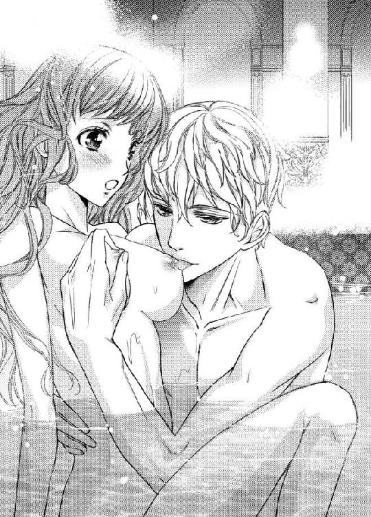
自分の胸がクラウスの手で淫らに形を変える様子や、ツンと尖った先端を咥える彼の姿を見ていると、更に昂ぶってしまう。
「それにしても、随分育ったものだな」
「......っ......や......言わないで......」
全てを見られてしまっているのだから遅いけれど、今すぐ胸を隠したくなる。リリアーナが自分の身体で一番嫌いなところは胸だった。
「なぜだ？」
「だって、変......でしょう？ いつも変だって、からかわれてたの。そんなに大きくなるなんておかしい。いつも淫らなことを考えているから、こんな胸になってしまうんだって......」
「馬鹿馬鹿しい。そんな法則などあるわけがない。誰に言われた？」
ポールだと答えたら、クラウスが眉を顰める。
「ああ、お前にちょっかいばかりかけていたあの憎たらしいガキか。成長したら少しはマシになるかと思ったが、残念なままだったみたいだ。......まさか、あいつに触れられたりしなかっただろうな」
「どうしてわかるの？ 実は何度かあるの。話してる最中にいきなり鷲掴みにされて、すごく驚いたし、気持ち悪かったし、痛かったわ......」
クラウスは眉間の皺を深めながら、忌々しそうに呟く。
「しつこく付きまとうから何度か転ばせてやったが、生ぬるかった。もっと懲らしめておくべきだったな」
クラウスがハウライト国に留学している間、リリアーナがポールに苛められそうになった時によく助けてくれたのを思い出す。
当時『助けてくれてありがとう』とお礼を言ったが、クラウスは『偶然足が引っかかっただけだ』と認めなかった。でも、やはり助けてくれていたのだ。
クラウスが認めずとも助けてくれたのは知っていた。でも、こうして数年後に自分の行動を認める言葉を聞けるとは思わなかった。思わず口元を綻ばせると、クラウスが不思議そうな顔をする。
「たった今まで泣きそうな顔をしていたくせに、何を笑っている？」
「だってクラウスお兄様、昔は助けてくれてありがとうって言った時、偶然足が引っかかっただけで助けてないって、頑なに認めなかったから」
リリアーナがクスクス笑うと、クラウスはハッとした表情を見せてばつが悪そうに顔を背ける。
そんなクラウスを見てリリアーナが笑い続けていると、胸の先端を咥えられた。硬くなった先端を舌先で激しく扱かれ、とろけそうになっていると白い歯で甘噛みされる。
「あっ......んんっ......！ あっあっ......クラウスお兄様、噛んじゃだめ......」
「笑った罰だ」
クラウスはニヤリと笑うと唇を窄め、敏感になった胸の先端をチュッと吸い上げた。強すぎる刺激が身体の中に走る。
「やぁんっ！ んぅ......ご、ごめんなさ......」
「リリア、お前の胸は変じゃない」
「え......？ ぁっ......」
大きな手が胸を包み込み、擦るように揉み始めた。
「あの忌々しいガキがそう言ったのは、お前に構ってほしいからだろう。俺の手から余るほどの大きさも、包み込むとしっとりと吸い付くような感触も、淡い色をした小さめの乳輪も、感じやすい乳首も素晴らしい。おかしいところなど、どこにもない」
「ほ、本当......？」
「俺の言うことが信じられないのか？」
尖って敏感になった胸の先端を指の腹で潰され、リリアーナは身悶えしながら首を左右に振る。
「もちろん、信じられるわ......あの、クラウスお兄様は大きな胸......嫌じゃない？」
他の人にどう思われるかよりも、クラウスにどう思われるかが気になる。
クラウスはやや考え込んだ後、「聞くな。察しろ」と言って、リリアーナの胸を揉みしだく。尖った先端が手の平に擦れて、甘い刺激が生まれる。
「ぁんっ！ さ、察しろって言われたって、わかんな......んんっ......」
「......嫌なら、必要以上に触ると思うか？」
「え......」
経験のないリリアーナは、これが必要以上に触れられているのかわからない。でもクラウスの口ぶりではそうなのだろう。
「これだけ説明させたんだ。わからないなんて言うなよ？」
チュッと吸われ、リリアーナは甘い嬌声を上げる。
「ん......っ......執拗にってことは、嫌いじゃなくて......その、好きだって感じてくれてるって思っていい？」
クラウスは「好きにしろ」と呟くと、尖った先端に再び吸い付く。
「んんっ......」
否定しないということは、好きだと思ってくれているのだろう。
嬉しい......。
あれだけ嫌いだった胸が、一番好きな箇所に思える。
長らく胸を愛撫されているうちに、のぼせてきたみたいで頭がクラクラしてきた。お湯の温度はそこまで高くないのにどうしてだろう。身体が熱くなったせいだろうか。
「顔が赤いな。大丈夫か？」
「ん......ぅ......熱い......」
「一度湯から上がった方がいい」
「あっ......」
クラウスに抱き上げられ、リリアーナは浴槽の縁に座る。
無色透明のお湯に浸かっていたから最初から何も身に着けていない肌を露わにしていたが、お湯から上がると羞恥心が増した。火照っていた肌がより赤くなり、お湯から上がったのにも関わらず、身体が更に熱くなる。
両手を交差させて胸を隠し、羞恥心を紛らわすようにクラウスの金と紫色の瞳から目を逸らすと、彼がさっきまで楽しんでいたワインに気が付く。
「クラウスお兄様、ワイン好きなの？」
「まぁな。お前はワイン......と言うより、酒全般が苦手な印象があるが、飲めるのか？」
子供っぽいと言われたように思えて、リリアーナは少しムッとしてしまう。
「え、ええ、大好きよ」
「そうか。飲んでいいぞ」
ああ、見栄を張って、嘘を吐かなければよかった......。
こんなにも早く後悔することになるなんて思わなかった。でもさっきキスした時は美味しく感じたし、急に味覚が変わったのかもしれない。
「あ、ありがとう。じゃあ、いただくわね......」
その可能性にかけて片手だけで胸をなんとか隠し、開いた方の手でワイングラスを持って口にすると、渋い味が口いっぱいに広がる。
「うぐっ......」
うう、美味しくないわ......。
「どうだ？」
「う、お、美味しいわ。ありがとうクラウスお兄様」
リリアーナは顔が引きつりそうになるのをなんとか堪え、にっこりとした笑顔を作る。
「そうか」
ワイングラスを置こうとしたら、クラウスが一口だけではなく、もっと飲んでいいと勧めてくるので涙目になった。
い、いらない～......！
嘘なんて吐かなければよかったと後悔しても遅い。リリアーナは置こうとしたグラスを再び持ち上げ、ワインを口に運ぶ。何度飲んでもやっぱり美味しくない。
どれくらい飲めば嘘を吐いていないように見えるだろうと考えていたら、クラウスが膝にチュッとキスしてきて、不意打ちの刺激に驚いたリリアーナは、グラスを傾けて中身を零してしまう。
「あっ......！」
胸の深い谷間に、ワインが零れた。冷たさに驚いて手を離すとお腹を伝い、秘部にまで垂れていくと、太腿と秘部にできたくぼみにワインが溜まる。
「俺にも飲ませてくれるのか？」
「ち、違っ......ひゃっ......」
クラウスは白い足に顔を埋めると、くぼみに溜まったワインを飲み始めた。
「クラウスお兄様、そんなところからなんて、飲んじゃ駄目......っ」
これ以上飲まれないように足を広げると残りのワインが零れ、お湯の中に沈んでいく。
「零れたぞ」
「だって、こんな所から飲むなんて......」
「喉が渇いた。飲ませてくれ」
飲ませてくれと言われても、零してしまったせいでワイングラスは空だ。
「ごめんなさい。もう、残っていないの......」
「いや、ここにある」
「え？ どこ？ あっ......」
クラウスは柔らかな内腿に両手をかけると、左右に大きく広げた。花びらや敏感な蕾は、ワインと蜜でぐっしょりと濡れている。
「えっ......こ、ここにあるって、まさか......」
そのまさかだった。
クラウスは何も答えずに唇を吊り上げると、花びらに付いたワインを舌で舐め取り始めた。
「ぁっ......！」
ちゅ、ちゅぱ、と音を立てながら、クラウスはワインを舐め取っていく。お湯で温まっているせいか舌が熱く感じる。
「はぅっ......んんっ......や......だめ......そんな、ところについたのを舐めるなんて......ぁんっ！」
駄目だと言いながらも、リリアーナの身体は快感に打ち震えていた。本当にやめられたら、きっと切なくて仕方がなくなるに違いない。
クラウスはまるで唇に深いキスをするように花びらを唇で食み、一滴も逃さないと言うように舌で隅々まで舐める。そうするとまだ触れられていない敏感な蕾がヒクヒクと疼き出し、膨らみ始めた。
花びらのワインを舐め終えた舌が、敏感な蕾にまで伸びていく。
「......っ......は......んんっ......」
期待で膨らんだ敏感な蕾をヌルリと舐められた瞬間、強すぎる快感がリリアーナの中を駆け巡る。
ああ、もう座っていられない。
リリアーナは身悶えをしながら、そのままゆっくりと後ろに倒れた。火照った身体にひんやりとした床が当たると少し冷たいけれど、それが心地いい。
クラウスはチュパチュパ大きな音を立てながら、敏感な蕾にしゃぶりつく。ねっとりと絡み付き、時折舌先で扱かれる。
「あっ......あぁっ......んっ......はぅっ......んんっ......」
もうワインなんて残っていないはずなのに、クラウスは舐めるのをやめない。やがて快感の波が足元から駆け上がってきて、リリアーナは絶頂に包まれた。
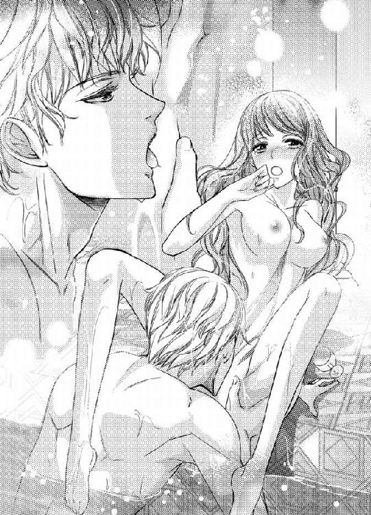
「──......っ......あぁ......」
お湯から上がったのに、身体は冷えるどころかどんどん熱くなっていく。
「上の口と違って、こっちの口はずいぶんと美味そうに飲んでいるな？」
クラウスは舌を丸めて尖らせると、疼いている膣口に挿入した。
「ひぁ!?」
美味しくないって思ってたのに、気付かれてたんだわ。
舌をヌプヌプ出し入れされると、どんどん甘い蜜が溢れてくる。昨日挿入された時はあんなに痛かったのに、今はそこを広げられる感覚が好きだと思う。
「零したワインは、こんなに多かったか？」
クラウスは敏感な蕾を指で転がしながら、ククッと笑う。熱い蜜で濡れた秘部に息がかかる。わずかな刺激のはずなのに、敏感になりすぎている身体は大きな快感として受け止める。
「......っ......ン......そ、れは......ワインじゃ......」
「では、なんだ？」
「も......意地悪......っ！」
不満を表すために力の入らない足を上下に動かすと、パシャンと水しぶきが立つ。
「こら、暴れるな。湯が跳ねる......ん？ リリア、冷えたんじゃないか？ 肌が冷たくなってるぞ」
「ううん、熱い......」
頭も身体も火を付けられたみたいに熱くて、指一本動かすのも億劫に感じるほど気怠くて、でもそれが心地いい。
「酒も入っているからな。冷えているのに気が付いていないだけだろう。もう一度しっかり湯に浸かって温まれ」
クラウスに支えられながら再びお湯に身体を沈めると、彼の欲望が重たい頭をもたげているのに気が付いた。
「あっ......」
「どうした？」
男性の欲望が大きくなるのは、就寝中に生理現象としてと、性的興奮を覚えた時だとメイドから教えてもらった。昨夜は媚薬が性的興奮を無理矢理煽ったので大きくなっていた。でも今は飲んでいないはずだ。いや、もしかしたら先ほどまで飲んでいたワインに入っていたのだろうか。
「あ、あの、クラウスお兄様、またクルトに媚薬を飲まされたの？」
「そんなわけないだろう。連日同じ手を食らって堪るか」
じゃあ、今大きくなっているのは、私とこういうことをしているから......？
リリアーナを妹としてではなく、少しでも異性として見てくれているということなのだろうか。
「リリア、俺も気持ちよくなりたい」
クラウスは心の中で突如差し込んだ希望の光に舞い上がっているリリアーナを抱き上げると、硬くなった欲望を膣口に宛がい、自分の上に向かい合わせで座らせる。
「きゃぁあっ......！」
硬い欲望を一気に最奥まで呑み込んだリリアーナは、悲鳴にも似た嬌声を上げた。舌とは比べ物にならない圧倒的な物量感で、じんわりとした鈍い痛みが襲ってくる。
「痛いか？」
昨日ほどの痛みではないし、痛みと同時に小さな快感が生まれたのがわかったので、辛くはなかった。
「......ン......少し痛いけど、大丈夫......クラウスお兄様、動いて......？」
「ああ、まあ......嫌だと言われても、動くつもりだったがな」
嘘吐き。クラウスお兄様は優しいから、私が嫌だって言ったら絶対やめると思うわ。
「ふふ」
思わず笑ってしまうと、クラウスが鼻の頭をかじってくる。
「笑っていられるのも今のうちだ」
下から突き上げられ、クラウスの言う通り、リリアーナは笑っていられなくなった。
「ぁっ......んんっ......あっ......あぁっ......！」
笑みは官能的な表情に変わり、唇からは笑い声ではなく喘ぎ声が零れる。
クラウスは蜜で満たされた膣道に、己の形を刻むように緩急を付けながら突き上げ続けた。そうすると感じていた痛みはどんどん鈍くなっていって、やがて消えた。そして小さかった快感がだんだん大きくなっていくのがわかる。
「リリア、もう中で感じ始めているのか？」
「......っ......んぅ......そう、みたい......でも、どうしてわかるの？」
「俺のを小刻みに締め付けてきてるからな。お前は上の口もおしゃべりだが、下の口もおしゃべりのようだ」
「んんっ......も......そんなところ、おしゃべりしたりしないわ......」
「いいや？ さっきからたくさんしゃべっているぞ」
クラウスは意地悪に笑うと、抽挿のたびに上下に揺れる胸を揉みしだきながら欲望の先を最奥にグリグリと擦り付け、そのまま満たした状態で膣口を広げるように腰をグルリと回す。
「あぁっ......！」
小さな快感の粒が集まって、一つの大きな塊になっていくのを感じる。
リリアーナは腰を弓のようにしならせながら身悶えを繰り返し、自分の意志とは関係なくクラウスの欲望をギュウギュウに締め付けた。
彼の繰り出す一挙一動に翻弄され、リリアーナはついに大きな絶頂の波に呑み込まれた。
「ほら、おしゃべりだ」
「も......っ......これはおしゃべりなんか、じゃ......あっ......んうぅっ......はぅ......あっ......あぁあっ！」
絶頂に痺れている最中もクラウスは腰の動きを止めず、リリアーナの中を貪っていく。
「中で達けるようになったのなら、遠慮はいらないな。昨日は中で一度だけだったが、今日は一度では我慢してやらないぞ。覚悟しろ」
クラウスはリリアーナの尖った胸の先端を指先でクリクリ転がしながら、激しい抽挿を繰り返す。
「う、嘘......のぼせちゃ......っ......」
嬉しいけれど、身体が持つだろうか。
「俺が責任を持ってお前の部屋まで運んでやるから心配するな」
「や......自分の部屋は嫌......っ......クラウスお兄様の部屋が、いい......っ......」
覚えたての快感に翻弄されながらも、リリアーナは抱き付いて必死に強請る。するとクラウスが抽挿を激しくし始めたので、強請るどころか、何も考えることも出来なくなってしまう。
「リリア、一度出すぞ」
クラウスは切なげな吐息と共に、己の欲望をリリアーナの中にたっぷりと吐き出した。
「あっ......んんっ......」
敏感になりすぎているリリアーナは、そのわずかな刺激ですら快感として受け止めて、うっとりとした吐息を零す。
クラウスは宣言通り一度達しても満足せずに何度もリリアーナの身体を貪り、そして自力では動けなくなった彼女の希望通りに自分の部屋へ連れ込むと、ベッドの上でもまた甘い身体を味わった。
私は幸せな夢を見ているのかしら......。
しかし身体に感じる刺激が、それは夢ではないと教えてくれる。
でも、昨夜のように媚薬が効いていたわけではないのに、どうしてクラウスはリリアーナを抱いてくれるのだろう。
もしかしたら実は媚薬の効能がまだ残っているのではないかという答えに辿り着いたけれど、クラウスはその日からリリアーナの一緒に寝たいというおねだりを受け入れるようになり、毎晩身体を求めてくるようになったのだった。
第四章 偏屈王
クラウスはネフライト国の第四王子としてこの世に生を受けた。ネフライト国の王である父が、娼婦だった母をたった一夜戯れに抱いたのが始まりだ。
母親の身分が低いことに加えて、ネフライト国で不吉と言われている左右非対称の色をした瞳も原因となり、物心が付いた頃よりも前からクラウスは兄王子達の憂さ晴らしの道具にされ、常に彼らの暴言や暴力に晒されていた。
顔に傷を付ければ父に知られてしまうからと、兄達は顔以外の場所を狙って暴力を振るうので、クラウスの服の下は常に痣や傷だらけだった。
「お前はどの王子よりも出来がいいな。これからも精進するといい。期待しているぞ」
父に褒められるのを見られた日は特に酷い仕打ちを受けた。『調子に乗るな。所詮お前は娼婦から生まれた汚らわしい子だ。いくら父上から褒められたからと言って、お前の生まれが卑しいことは変わらない』と血反吐を吐くまで殴られる。しかし父から褒められるのは素直に嬉しい。
苛められるのは痛いし、怖いし、嫌だ。
でも、もっと父から褒められたい。父から優しい笑みや言葉を貰えると、心の中にぽっかりと空いた穴が埋まる気がするのだ。
クラウスは兄達に苛められながらも父に褒められようと、必死に勉学に取り組み続けた。しかし兄達からの暴力から逃れようと隠れていた庭で、父の真意を知ってしまった。
「あなたったら、いつもあんな下賤の子を褒めるなんてどうかしているわ！ しかも他の子達を落とすようなことまで言って......」
「ああ、あれはわざとだ」
「わざと？」
王と三人の兄達を産んだ正妃との会話が聞こえてきたのだ。二人は兄達に見つからないようにと草の影に身を丸めて隠れていたクラウスの姿に気が付かないまま、会話を続ける。
「下賤の弟が褒められているのを見れば、上の王子達のやる気に火が付くだろうと思ってな。実際は別のやる気に火が付いているようで、クラウスを苛めることに精を出しているようだが......上手くいかないものだな。まあ、長い目で見ていけばいい」
「あら、そういうことだったの」
「当たり前だ。私が他の王子達を差し置いて、クラウスに期待するはずがあるか。いくら出来が良くても所詮は娼婦の子だからな。それにあの不吉な色違いの瞳、実の子ながら気味が悪い」
目の前が真っ暗になった。
いつも不思議だったけれど、納得がいく。クラウスを褒める時は必ず兄達の前で、前置きに彼らを乏しめるようなことを口にしていた。
兄達の前で褒めなければ、もしくは彼らを下げるような発言をしなければ、酷い仕打ちを受けずに済むのに......と思っていた。
しかし父は、兄達がクラウスにそんな仕打ちを行っているとは知らないから、仕方がないと思っていた。それに苛められているなんて情けなくて知られたくなかったから言わなかった。
でも、知っていた。心から褒めてくれてなどいなかった。父の目には正妻の子である兄達しか映っていなかった。父からも気味が悪いと思われていた。
「──......っ！」
兄達に殴られ、蹴られた時よりも痛くて、クラウスは声を殺しながら、金と紫色の瞳から大粒の涙を零す。
真っ暗闇の人生の中、父から認めてもらうことだけが唯一の生きがいだった。でもそれは消えてしまった。クラウスにはもう何も残っていない。
その日からクラウスは、生きながら死んでいるような人生を送ることになる。
皆や実の父からも気味悪がられ、疎まれ、苛められ、地獄のような日々だった。
兄達からの苛めは相変わらず続き、それで付けられた傷が元となり、死んでしまえたらどんなに楽だろうと期待したが、こんなにも痛いのに致命傷にはなっていないようで、クラウスの希望は叶うことはなかった。
これからもこんな真っ暗闇の人生を送るのだと思うと、絶望しかなかった。
誰かいっそのこと殺してくれ......。
そう願い続けていたある日、クラウスが十二歳になった春のことだった。
相変わらず兄達から暴力を受けていたクラウスは、庭へと逃げ込んだ。背丈が伸びた今は、昔のように草や木で身を隠すことは難しい。
木の上はどうだろう。葉の中に身を潜めておけば、見上げられてじっくり見られない限りは見つからないはずだ。
「あの化け物、どこへ行った？」
「逃げ足が速いな」
兄達の声が近付いてくる。急がなければ......。
クラウスが必死に木へよじ登ると、まさかの先客が居てギョッとする。紅茶色の髪にグレーの瞳をした中年の男だった。なぜか林檎を頬張りながら、まったりしている様子だ。
「よぉ、お前も木登りか？」
「なっ......どうして、こんな所に人が......」
「今日はいい天気だからな。ちょーっと童心に帰って木登りしたくなったのさ。お前もか？」
何も知らずに爽やかな笑みを浮かべて話しかけてくる男を見て、クラウスは苛立ちを覚える。
こんな遊びがあってたまるか......。
「......先客が居たとは知らなかった。失礼する」
下を見ると、すぐ傍に兄達の姿が見えた。今下りたら確実に見つかって、逃げたことを責められて余計殴られるだろう。
顔を引き攣らせて動けずにいると、男が腕を掴んできた。
「なっ......」
「騒ぐと下のガキどもに見つかるぞ。見つかったらボコボコにされるんだろう？ 大人しくここでまったりしていけって」
なぜ何も言っていないのに、兄達に暴力を振るわれるとわかるのだろう。見えるところには、傷なんて一つもないのに......。
兄に殴られるのは嫌だ。でも、この見知らぬ男に借りを作ることになるのはもっと嫌だ。後でそのことが元で酷い目に遭うかもしれない。実際に以前、兄達に借りを作り、それを盾にして酷い目に合わされたことがある。同じ失敗は繰り返さない。
「結構だ。失礼する」
しかし男は手を離してくれない。掴まれた腕を振り払おうとしてもビクともしない。
なんなんだ。こいつは......。
「まあまあ、遠慮するなって。お、その瞳の色......お前、第四王子のクラウスだろ」
「......っ」
また、気味が悪いと思われる。
クラウスはサッと俯いて瞳の色を見せないようにした。しかし男は彼の両頬を掴んで、前を向かせてまじまじと眺めてくる。
「やめっ......」
「紫か！ いい色だな。俺の妻と娘の瞳の色と同じだ。俺、息子も欲しかったんだよな～。でも、妻はもう死んじまったし、俺は妻一筋で再婚するつもりはないから、息子は一生できないんだけどさ......はは、息子がいたらこんな感じか？」
いい色......？
左右非対称の瞳の色を蔑まれるかと思いきや、褒められてしまったことに驚いたクラウスがキョトンと目を丸くしていると、男は林檎をバリバリ食べながら、満面の笑みを浮かべる。
「お、ムスッとして、暗くて、偏屈そうなガキだなーと思ってたけど、結構可愛い顔してんじゃねーか」
「なっ......うるさい！ あんた、なんなんだよっ！ というか誰だよっ！」
「ああ、名乗るのが遅くなったな。俺はエドモンド・クレーティだ。よろしくな」
「エドモンド・クレーティ......って、ハウライト国から来てる王って、あんたのことか!?」
「ああ、そうだ」
昨日から外交に来ていて、一週間ほど滞在すると聞いていたが、まさかこんなところで会うなんて思わなかった。
「なんで一国の王が木登りなんてしてるんだよ......」
「だーから、童心に帰ったって言っただろ？ それにそう言うなら、お前だってそうだろ。なんで一国の王子が木登りしてんだ」
「......俺も童心に帰りたくなっただけだ」
エドモンドは何も言っていないのに、兄達に殴られると知っていた。言い訳などしても、木に登ったのは、兄達から逃れるためだと気付いているだろう。
それでも言いたくない。自分が情けなくて、情けをかけられるのも嫌だ。クラウスが口を噤んでいると、エドモンドが豪快に笑う。
いじめを受けるなんて情けないと蔑まれているのかと思って睨み付けると、無骨な手で髪をくしゃくしゃに撫でてきた。
「ちょっ......何するんだよ......！」
「まだガキなのに童心に帰るも何もあるか。お前面白い奴だな」
「ガ、ガキじゃない。もう十二歳だ」
「立派なガキじゃねーか」
エドモンドがまた豪快に笑うものだから、クラウスは面白くない。だけど不思議と嫌悪感が湧いてこない。
これがクラウスと、リリアーナの父エドモンドとの出会いだった。
「なあ、お前を追いかけ回してるガキどもは、お前の兄貴か？」
「......まあ」
「ふーん。見えない場所を殴るなんて、ずる賢い奴らだな」
「どうしてわかる？」
服を脱がない限り、痣や傷は見えないはずだ。それなのになぜエドモンドにはわかるのだろう。
「木を登ってくる時に身体のあちこちを庇っているみたいだったからな。なんでやり返さない？」
そんなこと、今まで考えたことなんてなかった。物心が付く頃には既に兄達から苛められていて、怒りや悲しみで胸をいっぱいにしながらも、これが普通だと思っていた。
クラウスが首を左右に振ると、エドモンドがいつからこの状況が続いているのかと尋ねてくる。
「物心が付いた頃にはもう......」
「ああ、じゃあ、それが普通に思えて、やり返そうなんて発想に結びつかなかったのかもな。お前兄貴達に何かしたのか？」
「していない。......俺は第四王子と言っても、母親は娼婦だ。それにあんたは知らないかもしれないが、左右非対称の瞳は俺の国では不吉とされている」
「ふーん、母親の身分が低くて、忌み嫌われている瞳の色をしているから、暴力を振るわれても当然だと？」
そう、当然だと思っていた。でも、心の中には何か別の気持ちがあった。
言葉にしたくない。
エドモンドは口籠るクラウスの髪をまたくしゃくしゃに撫でると、柔らかな笑みを浮かべた。
「自分の中で、疑問に思うところがあるんだろ？」
なぜ、この男にはなんでもわかってしまうのだろう。
「じゃあ俺が教えてやるよ。当然なわけないだろ。身分や見た目が原因で暴力を振るわれていい人間なんて、この世に一人も存在していない」
その言葉を聞いた瞬間、ずっと目の前にかかっていた靄のようなものが晴れた気がした。
ずっと密かに思っていた。どうして自分が兄達から暴言や暴力を受けなければいけないのか......でも、思っていたところで状況は変わらないのだから、考えないようにしていたのだ。
「どうせ『やめろ』と言っても、面白がってますます酷くされるんだろ？ それならやり返してやれ。そして勝て。一度負けたとしても、勝てるまで諦めるな。勝てば苛められずに済む。戦え」
戦え──。
暗く淀んだ心の中、その言葉はクラウスの希望の光となった。
しかしクラウスは何度やり返しても兄達に勝てないどころか、反抗したためにさらにきつい暴力を受けることになる。でも、心の中は、やり返さずにただ一方的な暴力を受けていた時よりも晴れやかだった。
エドモンドはクラウスの勝ち負けが気になるようで、ネフライト国に滞在中、毎日彼の部屋を訪ねて来ては、彼に剣や体術の稽古を強引に付けた。
「鍛え方が足りねーから負けるんだ。三対一なんて関係ねーよ。強けりゃ何人相手にしようが勝てる。俺が鍛えてやる。庭に出ろ」
「うるさい。俺に構うな」
「相変わらず可愛くねーな。『父さん、俺に稽古付けてよ』って言ってみろよ。ん？」
「誰が父さんだ！」
エドモンドが滞在する一週間のうち、一度でも兄達に勝てればと思ったが、事は上手く運ばなかった。
あのおせっかいな男に、とうとう格好悪いところを見せたままで終わったな......。
「お前、弱すぎ。才能は感じるんだけどさ、一週間の稽古じゃ足りねーわ。つーことで、半年くらい、俺の国に来いよ」
「は!?」
「お前の父さんには許可取ったからさ。俺の可愛い娘も見せてやるよ。感謝しろ」
「何勝手に決めてるんだよ！」
勝手に決められたことに憤りを感じるが、この国を離れられることに安堵した。そして口が裂けてもこんなことは言えないが、エドモンドとまだ共に過ごせることにクラウスは喜びを感じていた。
人間は汚い。信用したら痛い目に合う。そう思っていたのに、どうしてこの男を信頼してしまうのだろう。好ましいと思ってしまうのだろう。
もし、この男の息子として生まれてこられたらならば、生まれてきたのを後悔することなどなかったのだろうか。
──この男の娘は、一体どんな人間なのだろう。
胸の中が、モヤモヤする。
どんな人間なのかはわからない。だが、自分のような苦しみを受けていないのは確実だろう。この男の子供として生まれて、何の不自由もなく暮らしているリリアーナが羨ましくて、疎ましくて、こんな感情を抱く自分が嫌で堪らなかった。
「俺の娘の話、聞きたい？ 聞きたいだろ？ 聞かせてやるよ」
「いらない。お前の娘の話なんて、興味ない」
「素直じゃないなー。じゃあ、ちょっとだけ話してやるよ」
「だから興味ないって言ってるだろ！」
ハウライト国に向かう馬車の中で、クラウスは自然と何度もまだ見ぬリリアーナの想像をし、負の感情で胸を満たしていた。
◆◇◆
エドモンドは筋肉質で、王というよりは軍人と言った方がしっくりくるガッシリとした体格だった。なので娘のリリアーナも姫と言ってもしっかりとした体格で、彼と同様に豪快な性格をしているのではないかとなんとなく思っていたが──。
「お父様、お帰りなさいっ！」
「おお！ リリア、元気にしてたか？ というか、元気そのものだなっ！」
想像は大きく覆されることとなる。髪色だけは同じだが、見た目はエドモンドと全く違う。手も足も身長も小さくて、とても華奢な印象だ。大きな目が特徴的で、とても可愛らしい。
妻の方に似たのか......。
亡くなっているらしいので確かめようがないが、リリアーナを見るからにとても美しい女性だったに違いない。
「クラウスお兄様！ 私、リリアーナよ。よろしくねっ！」
あまりにも想像と違ったものだから呆気に取られていると、リリアーナが手を握ってきた。とても温かいものだから驚いて、クラウスは弾かれたように振り払った。
しまった......。
あからさまに手を振り払うなんて気分を悪くさせてしまったと思ったが、リリアーナは大きい菫色の瞳を丸くしているだけで、怒っている様子はない。
いや、今は驚いているだけで、後から思い出して腹を立てるに違いない。
まあ、いい。元から好かれるつもりなどない。
「リリアーナ姫、お初にお目にかかります。私はネフライト国第四王子のクラウス・バルテウスと申します。半年間、お世話になることになりました。どうぞよろしくお願い致します」
跪いて挨拶をすると、リリアーナが戸惑うのがわかった。半年間、他人と暮らすことになるのだから無理もないだろうと思っていたら、わざわざしゃがみこんで顔を覗きこまれた。
いつものように、瞳の色を気味悪がられているのだろうか。蔑む人間に限ってジロジロ見てくるから嫌だ......と思いきや、リリアーナの表情は気味悪がっている様子ではなさそうだ。
なんだ......？
「家族は私のこと、リリアーナ姫じゃなくてリリアって呼んでくれるの。だからクラウスお兄様もリリアって呼んで」
呼び方に疑問を持ったのか......。
エドモンドはリリアーナに兄のように思えと言っていた。彼女はまだ幼いから納得するかもしれないが、クラウスはそんな社交辞令を真に受けるほど子供ではない。
「いや、俺は......」
リリアーナがあまりにも真っ直ぐに顔を見て来るものだから、クラウスは自分の目を見られているような気がして落ち着かない。
クラウスがサッと目を背けると、リリアーナがまた覗き込んでくる。また背けると覗きこんでくる。
愛称で呼ばなければ、一生このままになりそうだ。
「......わかった。よろしく、リリア」
観念したクラウスが愛称を呼ぶと、リリアーナが嬉しそうに笑って抱き付いてくる。
「うん、よろしくねっ！」
手も温かかったが、抱き付いてきた小さな身体はもっと温かくて驚いてしまう。そういえば誰かに手を握られたり、抱き付かれたのは初めてだ。
ささくれ立った心の中に、温かい何かが生まれたのを感じた。
顔を合わせる前からリリアーナに良い感情は持っていなかった。それなのになぜこんな気持ちになるのだろう。
自分の中に生まれた初めての感覚に戸惑っていると、エドモンドがなぜかニヤリと笑っているのが見えたので眉を顰めて彼を睨む。
なぜ笑っているかはわからないけれど、絶対に不愉快なことを考えているに違いない。
不思議とずっとこのままでもいたいという衝動が込み上げてきたが、エドモンドの意味深な笑みや自分の中に芽生えたわけのわからない感情が不愉快だし、そこまで強い力で抱き付かれていないのに、兄達に殴られた痣にリリアーナの手や身体が当たって痛む。
「もう、いい加減離れ......痛っ」
まずい。つい声に出てしまった。
後悔しても遅い。エドモンドの手により強引に服を脱がされて青痣が露わになる。それを見たリリアーナの顔から血の気が引くのがわかった。
エドモンドのせいで治療されることとなってその場から離れたので、その後のリリアーナの様子はわからない。だが、夕食の席で顔を合わせた時には、大きな目が赤く腫れていた。どうやら泣くほど怖がらせてしまったようだ。
子供の目には刺激が強かったらしい。エドモンドのせいだ。
まあ、いい。怖がれば、もう自分に関わろうとはしないだろう。元々深く関わり合いたくなかったから好都合だ。
「クラウスお兄様はどんなお料理が好き？ 私はチョコレートケーキが一番好きっ！」
「......特にない」
「じゃあ、嫌いな食べ物は？」
「それもない」
「じゃあ、今日のお料理の中ではどのお料理が好き？」
そう思っていたのに、真っ赤に目を腫らしたリリアーナは、目の前の食事そっちのけで積極的に話しかけてきていた。
こいつはなぜ、まだ俺に話しかけてくる？
リリアーナが泣いた理由が痣が怖かったからではなく、兄達に付けられたものだったということに深い怒りと悲しみを受けてのことだったと知ったのは、翌日のことだった。
剣の稽古をするクラウスとエドモンドを見たリリアーナは、クラウスがエドモンドに苛められていると勘違いし、血相を変えて飛んできた。途中で何度も転んだらしく手の平や膝に大きな傷ができていて、ナイトドレスの至るところが汚れている。
痛みに強いのかと思いきや興奮状態で気が付いていなかっただけで、痛みに弱かったようだ。自分が怪我をしていると自覚すると、泣き出してしまう。
泣きじゃくるリリアーナを背負って医師の下へ向かうと、背中がとても温かくて、それがとても心地いい。
「クラウスお兄様、背中のお怪我は大丈夫？ 痛くない？」
リリアーナは泣きながらも、クラウスの傷を気にする。なんでもないと答えても、痣のある部分に当たらないように少し身体を浮かせてくれているのがわかる。
変な気遣いをするなよ。泣くほど痛いくせに......。
『お父様、やめて！ クラウスお兄様を苛めないで！』
とても必死だった。エドモンドがクラウスに暴力を振るっていたと本気で勘違いしていたからだ。
もしそれが本当だったら、自分も巻き込まれて叩かれてしまうかもしれないのに、リリアーナは助けにきてくれた。
クラウスには腹違いの弟がいて、名はクルトという。ちょうどリリアーナと同じ歳ぐらいだ。自分ほどではないが、彼も兄達から苛められていた。しかしクラウスはその様子を見かけるたびに、気が付かないふりをしてその場から立ち去っていた。
心の中に燻るものがあっても、庇えば自分が酷い目に合わされるからだ。
見て見ぬふりをした時は、どんなに殴られた時よりも、心が酷く痛んだ。しかし巻き込まれたくない一心で、クラウスは無視をし続けた。
でも、リリアーナはこんなにも小さいのに、恐れず、屈せず、立ち向かっていった。
幼いのに、なんて心が大きくて、勇敢な少女だろう。そして俺はリリアーナよりも年上なのに、なんて臆病な男なんだ......。
会う前から嫌悪感を持っていたのに、もうそんな気持ちはどこにも残っていなかった。それどころかとても好感を抱いている。
ささくれ立った心の中に生まれた、温かい何かが大きくなっていくのを感じる。その正体はわからないけれど、クラウスはこんな感情を抱いた経験はない。
でもなんだかとてもくすぐったくて、少し切なくて、きっととても大切なものだということだけはわかる。
リリアーナのことをもっと深く知りたいと思う。でも、拒絶されてばかりの人生だったクラウスは、そう思いながらも怖くて、一歩を踏み出す気になることができない。
翌日の早朝、昨日と同様にエドモンドと剣の稽古をしていると、リリアーナが眠い目を擦りながらやってきた。その手には、なぜか箒を持っている。
なぜ、箒......？
「お、リリア、箒なんて持ってどうした？ 魔法使いごっこか？ それなら、もうちょっと寝てからにしような。よく寝ないと、お母様みたいな胸が大きいレディになれないぞ。な？ クラウス」
「俺に振るな。そして子供に下品なことを言うな」
リリアーナは眠くて立っているのがようやくな様子で、箒を持ちながらフラフラ左右に揺れている。
「魔法使いごっこじゃないわ。私も剣のお稽古して、強くなるの。そうしたらクラウスお兄様が苛められそうになっても、守ってあげられるもの」
......どこまで勇敢で、優しければ気が済むんだ。
長年傷付いて冷えた心が、とても熱くなっていくのを感じた。
リリアーナをもっと深く知りたい。また、改めてそう思った。
しかし過去の経験が障壁となり、自ら具体的な行動を起こすことができずに素っ気ない態度しか取れずにいた。嫌われてもおかしくない態度ばかり取っていたが、リリアーナは嫌うどころか日に日に強い好意を表し、積極的にクラウスに近付いていた。
穴だらけだった心が、リリアーナやエドモンドと過ごすにつれて、日に日に少しずつ温かいもので埋まっていくのを感じる。
特にリリアーナと過ごす優しい時間は、クラウスにとって何よりの癒しだった。
リリアーナが可愛くて、愛おしくて、笑いかけられるたびに、嬉しそうに話しかけられるたびに、頭を撫でてやりたくなる。
自分の中にこんなに優しい感情があったなんて、こんな穏やかな気持ちになれるなんて驚いた。
半年間と言わずに、ずっとここに居たい。
捻くれていたクラウスは決して口には出さなかったが、心から強く思っていた。
そんな気持ちを抱きながらも帰国する日が差し迫っていたある日のこと、庭を歩いていたクラウスは、木の上にエドモンドの姿を発見した。それと同時にエドモンドもクラウスを発見して、彼に登ってこいと声をかけた。
「あんたは本当に木登りが好きだな」
「まぁな。......なぁ、ここから高い丘が見えるだろ？ あそこにはさ。俺の妻の墓があるんだよ」
「......ふぅん」
「あの場所は俺があいつに求婚した思い出の場所でさ。あそこに墓を建てて、死んだら二人で入ろうって約束してたんだ。まさかこんなにも早く、一人だけ約束を果たしちまうなんて思わなかったな。あんなに元気だったのに、流行病で逝っちまってさ。人間いつどうなるかなんて、本当にわかんないんだよな」
エドモンドはポツリと呟くと、妻の墓がある丘をぼんやりと眺める。彼のこんな表情を見るのは初めてだ。
なぜかエドモンドがこのままどこか遠くへ行ってしまいそうな気がして、クラウスは思わず彼の服の裾を無意識のうちに掴んでいた。
「ん？ なんだよ。甘えたいのか？ 可愛いとこあるじゃねーか」
「なっ......そんなわけがあるか。これは、その......あんたが落ちそうだから、押さえてやっただけだ」
本当のことなんて言えるわけがなくて咄嗟にそれらしいことを言ったけれど、あまりにも苦しすぎる言い訳だ。エドモンドは「そりゃどうも」と言って笑い、クラウスの髪をくしゃくしゃに撫でた。
「なぁ、俺に何かあったらさ、リリアとハウライト国をよろしく頼むな」
「......はぁ？ なんだよ。いきなり」
「いや、今も言ったけどさ。人間いつどうなるかなんてわかんないだろ？」
「あんたは殺しても死ななそうだけどな」
エドモンドはよく冗談を言う。またいつもの軽口かと思って軽く流そうとしたら、彼の顔が真剣なものとなった。
「そうだったらいいんだけど、こればかりはな......。クラウス、真面目に相談にのってもらっていいか？」
「......俺なんかに相談してどうする？」
クラウスがエドモンドに助けられることはあっても、クラウスがエドモンドを助けられることなどないはずだ。何せ王子と言ってもクラウスには力がない。自分の身を守れるほどの力すらなかったぐらいだ。
「何言ってんだ。お前だからこそ頼むんだろ？」
お前だからこそ......。
クラウスはいつ消えてもいい存在だった。そんな言葉は、生まれてから一度も言われたことがなくて、くすぐったい気持ちになってしまう。
「俺の子供はリリアしかいない。俺に何かあれば、王位を継ぐのは弟だ。家族としてなら嫌な奴ではないさ。だが、あいつは王としては駄目だ。国庫を自分の財産だと勘違いしているあいつが継げば、一年も持たないだろうよ。リリアもどうなるかわからない。クラウス、どうかリリアとハウライト国を頼む」
エドモンドの弟──リリアにいつもちょっかいをかけるあの憎たらしいガキの親か。
ポールの父親と言われると、王として駄目だというエドモンドの考えも納得できる。子供の躾も満足にできない男が、一国を背負えるはずがない。
「......考えておく」
「おう、頼むな」
考えておくと言いつつも、クラウスはどんな手段を使っても、絶対にこの約束だけは守ってみせると心に誓っていた。
初めて自分を頼ってもらえるという、温かくもくすぐったい気持ちを永遠に忘れない。
半年後、クラウスはリリアーナの涙に後ろ髪を強く引かれながらも予定通り帰国した。
たった半年──しかしクラウスの中では、とても濃い半年だった。
頭の天辺から爪先、髪の毛の一本に渡るまで作り変えられたみたいに感じる。
今まで自分の全ては、黒くてモヤモヤした何かで作られているように感じていたが、今は違う。エドモンドやリリアーナから強さと優しさを貰い、まるで光の粒で構成されているように思えた。
クラウスが居ない間、胡散晴らしの標的はクルトに代わっていた。今までならモヤモヤしながらも、これで苛められないで済むと考えただろう。でも、今は違う。
クラウスは自分がまた標的になるとわかっていながらも、クルトを庇った。この強さはリリアーナが教えてくれたものだ。
半年間、エドモンドから剣や武術の稽古を付けてもらっていたが、一対一ではなく数名を相手にするのは想像していたより難しく、半年前と同じく暴力を受けた。しかしそんなことを何度も繰り返しているうちに要領が掴めてきて、それから数か月後にはクラウスが勝利するようになった。
クラウスに勝てないとわかると、兄達はもう苛めてこなくなった。クルトに矛先を向けてもクラウスが出てくるので、彼を標的にすることもなくなった。
これもエドモンドとリリアーナのおかげだ。
相変わらず自分の居場所はなかったけれど、心の中にある大切な何かを守れた気がして、クラウスは初めて達成感というものを覚えることができた。
しかし、それからすぐに事件は起きた。ネフライト国王である父が亡くなり、それから後を追うように三人の兄王子たちも数年に渡って相次いで流行り病や事故で亡くなり、クラウスが王位に就くことになったのだ。
クラウスが亡くなった皆から疎まれていたことを知っていた臣下や使用人たちは、彼が病死や事故死に見せかけて毒を盛り手を下した、さすが忌み嫌われた瞳を持つ者だと噂し、またある者は左右違う瞳の子が生まれたから、王家は呪われたのだと噂し、また別の者は瞳の力で呪ったのだと口にした。
不吉だなどと、馬鹿馬鹿しい。
今まではそう思っていた。自分は普通の人間だ。瞳の色が違うからと言って災いを呼び寄せる力などないと思っていた。
もしそんな力があるのなら、自分を兄達を焚き付ける材料にした父も、自分を憂さ晴らしの道具にする兄達も、みんな呪い殺してやりたいと思っていた。
まさに今、この状態ではないか......。
迷信など信じていない。ずっと否定してきた。そう唱える者を憎んできた。だが、今は疑わずにはいられない。これは自分の不吉な瞳が引き起こしたことではないのだろうか──と。
しかし、もしそうだからと言って、悲観に暮れているわけにはいかない。王としての務めを果たさなければ、国が亡びる。
国を立て直し、いつかクルトが一人前になったら、退位しよう。そう心に決め、クラウスは訝しげな視線を向ける重臣達やクルトの協力を得て、国を守ってきた。
ハウライト国で過ごした半年間で生まれ変わったはずだったのに、また身体の中が真っ黒なもので満ちているように感じる。
毎日が息苦しくて、一人になると深呼吸を繰り返す。しかしどんなに息を吸っても、吸えていないような気がした。そんな時は、エドモンドやリリアーナと過ごした日々を思い出し、まめに送ってくれる彼女からの手紙を何度も読み返した。
内容は他愛のないことだ。共に過ごした半年間を振り返り、とても楽しかった思い出や、クラウスが贈った誕生日プレゼントをとても喜んでいるということ、庭の花がとても綺麗に咲いたこと、今日食べたお菓子が美味しかったから、クラウスにも食べさせてあげたいということ、そしてどの手紙も最後はまた会いたいという言葉で締めくくられていた。
鏡を覗いたクラウスは、リリアーナと同じ色の右目を見て口元を綻ばせた。
俺も会いたい......。
今この瞬間、リリアーナの笑顔を見ることができたら、どんなにいいことだろう。
お前には、助けられてばかりだな......。
クラウスはこれ以上不吉なことが起きないよう、これ以上人の視線を気にしなくていいように、仮面を被ることに決めた。色違いの目とわからないようにどちらかの目に宝石を埋めてしまえばいい。そう思い付いた時、クラウスは迷わず左目を埋めることを選んだ。
仮面の制作を行った職人からは、豪華に見えるようにダイヤモンドを勧められたが、クラウスはリリアーナと同じ色であるアメジストと心に決めていた。
仮面をするようになってからは鏡を覗くのが苦痛ではなくなった。鏡に映るのは左右同じ紫色の瞳──リリアーナと同じ色だ。
鏡を見るたびに嫌な気持ちになるよりも、リリアーナのことを思い出して口元が綻ぶ。
あれから数年──手紙では相変わらずなようだし、エドモンドも変わりがないようだ。いつかまた会えたらいいと思っていた。その時はいつでも訪れると思っていた。
しかし、クラウスが生きたエドモンドに再会することはとうとうなかった。なぜなら彼が急逝してしまったからだ。
『人間いつどうなるかなんてわかんないだろ？』
エドモンドの言葉を思い出し、クラウスは一人きりの政務室で頭を抱えた。
リリアーナはどうしているだろう。今すぐ彼女の傍に行って、慰めてやりたい。
しかしクラウスは、今はどうしても国を離れられない状態にあった。父の時代に支配下に置いた国が、ネフライト国と敵対している国と手を組もうとしているという情報が入ったのだ。
クラウスはそちらを片付けながら密偵に情報を調べさせると、エドモンドが心配していた通りになっていた。
クラウスは睡眠や食事の時間などを削って必死に時間を作り、できるかぎり早く問題を解決してハウライト国へ向かった。
「クラウスお兄様......っ！」
謁見室に飛び込んできたリリアーナは、予想を遥かに上回るほどとても美しく成長していた。
彼女の菫色の瞳からは大粒の涙が次から次へと零れて、まるで宝石が頬を伝っていくように見える。
なんて綺麗なんだろう......。
誰かに対してそう思うのは、初めてのことだった。
クラウスは涼しい顔をしながらも、妹のように思っていたリリアーナに見惚れたことに戸惑いを覚えていると、リリアーナが走って抱き付いてきた。
ああ、幼い頃のままだ......。
戸惑いはすぐに消えて、微笑ましく、そして懐かしく思う。
こんな非常時にそう思うのは不謹慎かもしれないが、再会できてよかったと心から思った。
「単刀直入に言う。リリア、アンデシン国王の側室になりたくなければ、我慢して俺の妻となれ」
そしてこのような方法でしか、リリアーナを救えないのが心苦しい。
リリアーナが目を大きく見開く。兄として慕ってきたクラウスと結婚するだなんて、抵抗があるのだろう。無理もない。
波風を立てずにアンデシン国から逃げるには、結婚するしかないのだと説明したら納得してくれたようだが、繊細な問題だ。やはり抵抗はあるだろう。
「でも、私がクラウスお兄様の妻になることで、ネフライト国に迷惑がかからない？ それにうちの国も大丈夫かしら......」
それなのに人のことばかり考えているのが、リリアーナらしい。
「事を荒げないため......とはいえ、お前の戸籍に傷を付けることになってすまないな。しかし一時的なものだ。お前にふさわしい男を見つけたらすぐに離婚して、その男の下へ嫁がせてやるから、それまでの辛抱だ」
「......離婚!? え？ それって、どういうことなの？ ずっとクラウスお兄様の妻でいてはいけないの？」
リリアーナを他の男の下へ──アンデシン国の側室に行くと聞いた時も胸がざわついたが、それは宝石を手に入れるためという不本意な嫁ぎ方をするからだと思っていた。
でも、なぜだろう。他の男のことを口にしたら、また胸がざわつく。これから見つける予定の男性は、アンデシン国王とは違う。リリアーナにふさわしい素晴らしい男性なのに......。
自分の心に生まれた異変に戸惑いながらも、クラウスは表情を変えないように努めた。自分の心に変化が生まれた時、表情を変えないように意識するのは昔からの癖だ。
兄達に苛められていた時、感情が昂ぶって表情を変えると面白がられてますます苛められたので、無表情にするのはクラウスの処世術だった。
「ああ、駄目だ。俺の妻になどなっては、不幸になる。お前に俺みたいな不吉な男は相応しくない」
そう、駄目だ。リリアーナには、誰よりも幸せになってほしい。ずっと自分の妻でいるなんて、父や兄のようになってしまうかもしれない。
「不幸になんてならないわ。むしろ幸せになれるわ。だって私、ずっと......ずっとクラウスお兄様のことが好きだったんだもの！」
一緒に過ごした時間はたったの半年間、それからは実際に会うことは叶わず、遠く離れて手紙のやりとりしかしていなかった。それでもクラウスがリリアーナを想っていたように、リリアーナもクラウスのことを兄として想い、慕ってくれていたのだ。
リリアーナが離婚したがらないのは、形はどうであれ、結婚したままでいたら自分と一緒に兄妹として過ごすことができるからだろう。
「そうか」
とても可愛く思う。そしてそんな感情と共に、自分も離婚せずに、ずっとリリアーナと一緒に過ごしたいという欲求が生まれていることに気が付いた。
何を考えているんだ。俺は──。
大人になったリリアーナを見ると、幼い頃の時とは少し違った。
幼い頃はただ温かい感情になった。春の陽だまりの中を歩いているような気分になった。だけど今は違う。
「クラウスお兄様の瞳を見た方は、不幸になるどころか幸せになれるんじゃないかしら。だって私、今すごく幸せだもの」
クラウスから奪った仮面を取り返されないように抱いて、にっこり微笑むリリアーナを見ていると、男としての血が騒ぐのを感じる。
このまま夫婦でいられたら......妹としてではなく、妻としてリリアーナを傍に置いておくことができたら、どんなにいいだろう。
どうしてお前は、何度も俺の心を救ってくれるんだろう。それなのに俺は、なぜこんな欲望を抱いてしまうのだろう。
後ろめたさを隠すように仮面を被り、気持ちを押しこめた。だが、リリアーナと時を共にするたびに、隠しきれないほど気持ちが大きくなっていく。
リリアーナと接しているうちに、彼女が自分のことを兄ではなく男として好いてくれていることに気が付いてからは、さらに気持ちが膨らんだ。
こんな男を好きになるなんて、リリアはなんて馬鹿なんだ。
そう思いながらも、彼女の気持ちを嬉しく思う。だが、駄目だ。
リリアーナは、不幸になどならないと言ってくれた。でも、どうしても忌み嫌われたこの目が大事な彼女を不幸せにする気がして恐ろしい。
しかしクルトに媚薬を飲まされても崩壊しなかった理性が、リリアーナの涙と一言により呆気なく崩壊した。
「......っ......そんなに私とするのが、嫌なの？ 私のこと、どうしても妹としか思えない......？」
嫌なわけがない。ずっとその柔らかな紅茶色の髪に、ピンク色の唇に、白い肌に、男として触れたかった。
「嫌、行かないで......なんでもするから......」
もう、我慢できない。
「お前は本当に馬鹿だ。後悔しても知らないぞ」
後悔されたとしても、泣かれたとしても、やめる気はない。
「んぅっ......んっ......んんっ......」
初めて触れたリリアーナの唇はとても甘く、咥内を舌で掻き混ぜるたびに溢れてくる唾液は、クルトに呑まされた媚薬よりも強力な媚薬に感じた。呑み下すほどにただでさえ痛みを感じるほど昂ぶっていた下半身が、さらに熱くなっていく。
白い豊かな胸はしっとりと指に吸い付くようで、足の間は洪水でも起きたように甘い蜜で溢れ返っていた。
自分に感じてくれている証拠だ。こんなにも嬉しかったことは今までにあっただろうか。
父の心中に気付かず褒められていた時や、散々苛められてきた兄達に初めて勝った時──そんなものとは比べ物にならない喜びだった。
胸の中が温かくて、ずっと足りなかった何かがものすごい勢いで埋まっていって、悲しくもないのに涙が出そうだ。
「しばらくは辛い。先ほども言ったが、嫌だと言ってもやめてやれないぞ。頑張って、耐えろ」
「う......ありが、と......クラウスお兄様......」
「痛いのをやめてやらないと言っているのに、なぜ礼を言う？ 変な奴だな」
「だって、幸せだから......」
痛みを堪えながら笑うリリアーナを見て、クラウスはあることに気が付いた。
ああ、そうか......。
性の芽生えこそなかったけれど、クラウスはリリアーナが幼い頃から恋心を持っていたのだ──と。
無邪気に笑いかけてくれるリリアーナが可愛くて、人の為に涙を流すリリアーナが愛おしくて、人の為に立ち向かおうとする彼女の勇ましさと強さに尊敬を抱いた。
クラウスのささくれ立った心の中に生まれた温かい何かの正体──それは恋心だったのだ。
今までの人生、何かを欲しいと強く望んだことは一度もない。でも、初めて思った。リリアーナが欲しい。妹としてではなく、女性として。だからリリアーナが他の男の下へ嫁ぐことを考えたら、胸がざわついたのか。
誰がやるものか......。
自分の瞳が不幸を呼ぶと言うのなら、隠すだけではなくてえぐり出してもいい。リリアーナを手放すよりもずっといい。
リリアーナと共に生涯を過ごせるのなら、彼女を幸せにできるのならば、自分の持っている全てを喜んで差し出そう。
クラウスは愛する人に初めて触れる悦びに打ち震えながら、小さな穴の中を熱い欲望でたっぷりと満たした。
もう、我慢などできない。
リリアーナは誰にもやらない。離婚などしない。リリアーナは俺の妻だ。
第五章 たった一つの我儘を許して
「クラウスお兄様、今日も一緒に......その、寝てもいい？」
「ああ、構わない。......というか、廊下から来なくても、内側の扉から勝手に入ってきていいと言っているだろう。鍵は閉めていないぞ」
クラウスと初めての夜を過ごしてからというもの、彼はリリアーナの誘いを断らなくなった。
リリアーナがベッドに入ってくるとクラウスが覆い被さり、毎夜のように彼女の身体を情熱的に求めている。
深く唇を重ね合いながらナイトドレス越しに胸を揉まれると、あっという間に胸の先端が反応し始めて、クラウスの手の平を押し返すようにプクリと起ち上がる。
「リリア、もう乳首が起っているぞ」
「......っ......だって、クラウスお兄様が、触るから......」
「本当か？ 最初から起っていた気がするが？」
「......っもう、違うもの！」
意地悪に笑われ、リリアーナは頬を赤く燃え上がらせる。
「この部屋に来る前から起っていたんじゃないか？ 俺にこうされることを想像して興奮したか？」
ボタンを外されると、豊かな胸がプルンと零れた。
「も......っ......クラウスお兄様の意地悪......ぁっ!?」
クラウスはナイトドレスの裾を捲ってドロワーズをずり下すと、濡れた花びらの間に昂ぶった欲望を挟み込んで、腰を上下に動かし始める。
「ど、どうして、そこに挟んで......ひぁっ!? あんっ！ んっ......んっ......あっ......やんっ......」
熱い欲望が敏感な粒に擦れて、甘い刺激が襲いかかってきた。
「ここも随分と濡れているな。やっぱり想像して、楽しみにしていたのか？」
「......っ......や......違っ......あっ......ぁんっ！」
リリアーナは身悶えしながらも、ふるふる首を左右に振って否定する。
......本当は楽しみにしていた。でもそれを認めたら、淫らな女の子だと思われてしまうに違いない。
「違うのか？ おかしいな。では、なぜこんなに濡れている？」
「......さ、さっきお風呂に入った時、ちゃんとお湯が拭けていなかったのかも......」
リリアーナが顔を真っ赤にしながら苦しすぎる言い訳を口にすると、クラウスが堪えきれないと言った様子でククッと笑う。
「そうか。随分とヌルヌルした湯だな」
「んっ......そ、そうよ......」
きっとクラウスにはこれがお湯ではなくて、淫らな蜜だと気付いているはずだ。でも、恥ずかしくて引き下がれない。
敏感な粒に刺激を与えられているうちに、膣道にも刺激が欲しくなって切なくなってくる。クラウスの灼熱の杭をそこへ受け入れようと、腰が勝手に動いてしまう。
「入れてほしいのか？」
リリアーナが何も言えずにいるとクラウスはククッと笑い、硬く膨らんだ先端を膣口に押し付ける。小さな膣口が先端によって、ゆっくりと広げられていく。
「......っ......はぅ」
ああ、待ち望んでいた刺激を貰える。
心が、身体が期待して、肌がゾクゾク粟立った。しかしクラウスはそこから腰を進めてくれない。
「んぅ......クラウス、お兄様......？」
クラウスがまた意地悪な笑みを浮かべると、腰を引いた。ヌプ、と音を立てて浅く埋まっていた欲望が抜けて、泣き出しそうなほどの切なさが襲いかかってくる。
「や......っ......どう、して......」
「本当のことを言えたら、奥まで入れてやろう」
「んんっ......ほ、本当の、こと......？」
クラウスは腰を押し付けて膣口がわずかに開きそうになったところで、また腰を引く。じれじれとした刺激に煽られて、切なさが加速していく。
「そうだ。いつから濡れていた？」
耳を食まれ、形をなぞるようにヌルヌルと舌で舐られると、弄ばれている膣口がキュゥッと収縮する。
もう、駄目......。
理性が砕けて、粉々になった欠片が蜜に溶け込み、ヒクヒク疼く膣口からどんどん溢れていく。
この快感を得るためなら、どんな淫らな言葉でも口にできそうだ。また、くぷ、と膨らんだ先端に膣口を広げられた瞬間、リリアーナは身震いをしながら真実を口にする。
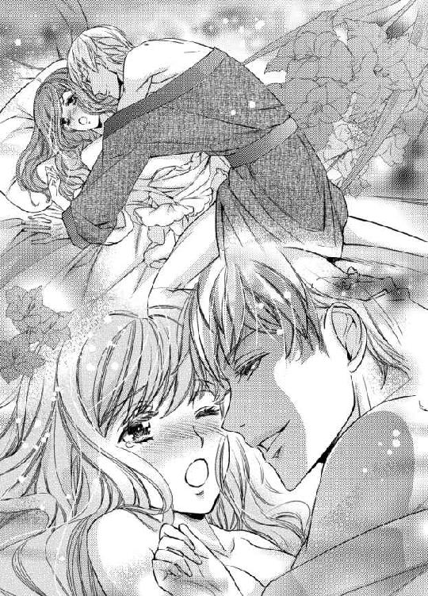
「......クラウスお兄様の、お部屋に来る前から......っ......だって、クラウスお兄様にこうされること、想像しちゃったんだもの......」
満足そうに笑ったクラウスは、硬い欲望を一気にリリアーナの狭い中に突き入れた。
「──......っ......あぁ！」
待ち望んでいた刺激はリリアーナを絶頂へ導く。狭い膣道は震えながら淫らにうねり、クラウスの欲望を歓迎するかのように激しく締め付けた。
「すごい締め付けだな。そんなに入れてほしかったのか？」
クラウスは切なげな吐息混じりに、意地悪な問いかけをしてくる。リリアーナが絶頂に痺れながらも素直に頷くと、激しく腰を動かし始めた。
「あっ......!? ぁんっ！ あっ......はぅっ......クラウス、お兄様......気持ち、いっ......ぁんっ！ んんっ......あっ......あぁっ......！」
抽挿を繰り返されるたびに、激しい快感が膣道から身体中へ駆け巡る。自分ばかりがこんなにも気持ちよくなっていいのだろうか。
「クラウスお兄様......っ」
「なんだ？ ああ、ここも弄ってほしいのか？」
膣道をたっぷりと擦りながら、クラウスはぷくりと膨れた粒を指の腹で転がし始めた。敏感な場所を両方可愛がられると、あまりにも甘美な快感が襲いかかってきて、今達したばかりなのに、また絶頂が近付いてくる。
「あっ......ち、違っ......！」
「そうか。違うのか」
クラウスは形の良い唇を吊り上げると、転がしていた粒から指を離す。快感が減って、泣き出しそうなくらい切なくなる。彼の意地悪な指は、わざと少し外れた場所や花びらにプニプニ触れた。
「や......そ、それは、違うんじゃなくて......」
あまりにも切なくて、指を追いかけるように腰が無意識のうちに動いてしまう。
「では、何が違う？」
「私ばかり、気持ちよくて......いいのかなって。どうしたらクラウスお兄様も気持ちよくなれるの？ なんでもするから、言って......」
抽挿の刺激とじれったい指の動きに反応し、リリアーナはビクビク身悶えを繰り返しながら問いかけた。紫と金色の瞳が丸くなり、やがて三日月のように細くなる。
「さっきからそんなことを考えていたのか？」
リリアーナが息を乱しながら頷くと、クラウスの指がまた敏感な粒を捉え、円を描くようにゆっくりと動く。
「ぁっ──ン......！」
待ち望んでいた刺激を受け止めたリリアーナは、一際大きな嬌声を上げた。
「......今でも十分気持ちいい。お前と同じくらいにな」
ただ受け入れることで精いっぱいで、クラウスのように身体のあちこちに触れて愛撫することなんて少しもできていない。きっとクラウスは、リリアーナに気を使って、そう言ってくれているのだろう。
「俺が嘘を言っていると思っているだろう？」
「えっ！ どうしてわかるの？ 何も言っていないのに......」
「変な顔をしていたからだ」
「へ、変な顔っ!? やだ、み、見ないで」
慌てて両手で顔を隠そうとした瞬間、クラウスは膨らんだ硬い先端をリリアーナの最奥にグリグリと擦り付けた。
「ひぁ!? あっ......クラウス、お兄様......っ......？」
「リリア、俺のは硬くなっているか？」
膣道が刺激でさらに強い収縮を繰り返すことで、クラウスの欲望をより強く感じる。リリアーナは熱い吐息を零しながら、ギュッと目を瞑って頷く。
「ン......っ......はぅっ......なって......る......」
硬くて、大きくて、何度抱かれても、自分の中に彼の欲望が治まっているなんて信じられない。
「これがお前の中で硬くなり続けているということは、気持ちよくなっているということだ」
「そう、なの？ でも、私、何もしてない......ぁっ」
クラウスは血管が浮き出るほど硬い欲望で、リリアーナの中を円を描くようにグルリと掻き混ぜた。
「あっあっ......！」
熱い膣道に冷たい空気が入り込むと肌が粟立ち、頭が真っ白になると同時に中が強く収縮する。
「は......んんっ......な、中......広がって......」
「今、まさにしているだろう。こんなにも複雑な動きをしながら、俺のをいやらしく締め付けてくる。あまりに好くて、いつも一滴残らず搾り取られそうだ」
意図してそこを動かしているわけではないけれど、クラウスを気持ちよくできているならとても嬉しい。そして彼が自分と同じくらい快感を得ているのだと思ったら、さらに昂ぶってしまう。
「あっ......あっ......クラウスお兄様、また、私......」
「ああ、達っていいぞ。俺もそろそろ、限界だ」
激しくなっていく抽挿の動きに誘われ、リリアーナは意識が飛びそうなほどの強い絶頂に包まれた。
「──......っ......あぁ──......」
興奮で膨らんだ膣襞がねっとりとクラウスの肉棒に絡み、より強く激しい収縮を繰り返す。
「......っ......く」
クラウスは苦しそうに小さな声を漏らすと、リリアーナの最奥で熱い欲望をたっぷりと放った。
「クラウス、お兄様......」
リリアーナが甘えたような声でクラウスの名を呼ぶと、彼は言葉で返事はせずに、彼女の身体をギュッと抱きしめることで返事をする。
ランプで映し出された二つの影は、隙間なくピッタリと重なり合い、まるで一つの塊のようだ。それを見ていると、とても心が満たされていく。
ああ、なんて幸せなの......。
でも、昂ぶりが治まってくると、リリアーナの満たされた心に現実がまた穴を開けていく。
どうしてクラウスお兄様は、私を抱いてくれるの......？
クラウスは口を開けば捻くれたことをいうけれど、心根は誰よりも優しい人だ。
『......っ......そんなに私とするのが、嫌なの？ 私のこと、どうしても妹としか思えない......？』
初めて身体を重ねた日、リリアーナは大粒の涙を零しながら、抱いてほしいと訴えた。優しいクラウスは、リリアーナを悲しませないようにと渋々抱いてくれているのではないだろうか──。
ううん、でも、もしかしたら違うかもしれないわ。
不安が半分あり、でも希望も半分あった。
クラウスは、リリアーナと一緒の時だけは仮面を外すようになった。それはリリアーナを特別と思ってくれているからではないだろうか。それにいくら彼が優しい人であったとしても、身体を重ねるという特別なことを同情でするだろうか。
自分の立場になって考えてみる。親しい誰かに泣いて身体を重ねてほしいと懇願されたとしたらどうするだろうか。
いや、考えるまでもない。そんなの絶対に無理だ。
だとしたら、クラウスも──。
そんな希望を抱いてしまう。離婚せずに、彼の隣に立つことを許される未来があるのではないか、と......。
◆◇◆
「ああ、どうしたらいいの......」
「本当に心当たりはクラウス様のお部屋しかないの？」
「ええ、もう探していないのは、そこだけなの......」
「私が頼んでみるわ」
「そんなの、駄目よ！ あなたに迷惑はかけられないわ」
翌日、廊下を歩いていたリリアーナは、何か困っている様子のメイド達を発見した。
「あなた達、どうしたの？」
「リリアーナ様！ い、いえ、なんでもございません。失礼致します」
思わず声をかけたら、彼女たちは恐れ多いといった様子で足早に立ち去ろうとするが、困っている様子のメイドの目には涙が浮かんでいるし、クラウスの名前が出てきたことがなおさら気になるので引き止めた。
「待って、なんでもないようには見えないわ。どうしたの？」
メイド達は顔を見合わせると、小声で相談を始める。
「......奥様のリリアーナ様なら、許していただけるかもしれないわ。お願いしてみましょう？」
「でも、こんなお願い、恐れ多くて......」
「お願い？ 私が何かすることで解決することなの？」
涙を浮かべた方のメイドが神に祈るように両手を組み合わせ、首を傾げているリリアーナをすがるような目で見つめる。
「実は私、恋人から貰った大切なブレスレットを落としてしまったみたいで......」
「まあ！ それは大変だわ！」
リリアーナは無意識のうちに自分と重ねてしまう。クラウスから貰ったブレスレットを落としてしまったら、どんなに後悔してもしきれない。
「どこに落としたか、心当たりはある？」
「心当たりは一か所を残して全て探したんです。でも、見つからなくて......」
「残りの一か所はどこなの？」
「それがその......」
メイドは言いにくそうに、「クラウス様のお部屋です」と答えた。早朝、部屋の掃除に入った時に落としたようだった。
「そうだったの。でも、大丈夫よ。クラウスお兄様はお優しいもの。ご政務中でも、捜し物くらいさせてくださるわ」
「め、滅相もございません！ そんな恐れ多いこと、私にはできません！」
メイドは真っ青な顔をし、ものすごい勢いで首を左右に振った。なんだかとても怖がっているようだ。誰よりも優しいのに怖がられてしまうなんて、クラウスは誤解されやすいのかもしれない。
「それで、その......」
リリアーナはようやくメイドが自分にお願いしたいことが何かに気付いて、にっこり微笑んだ。
「わかったわ。私が捜してくればいいのね？」
「も、申し訳ございません......」
「謝らないで。すぐに捜してくるわ」
リリアーナはメイド達と別れ、すぐにクラウスの政務室へ向かった。
「クラウスお兄様、リリアーナよ。入ってもいい？」
ノックをして声をかけるが、反応がない。留守だろうか。それとも集中して聞こえていないのだろうか。
「クラウスお兄様？」
ドアハンドルを回すと、鍵がかかっている。やはり留守のようだ。
「どうしようかしら......」
政務室の前で立ち尽くしていると、足音が近付いてくる。クラウスだろうかと振り向いたら、曲がり角から現れたのはクルトだった。
「あ、リリアだ。クラウス兄さんに会いに来たの？ 特に進展はないって言ってたけど、実はそうでもない？」
クルトが探るような目で見てくるので、リリアーナは慌てて首を左右に振った。
「ち、違うの。クラウスお兄様に会いに来たんじゃなくて、メイドからちょっと頼まれごとをしたものだから......」
「頼まれごと？」
「そうよ。恋人から頂いた大事なブレスレットをここで失くしてしまったみたいなの。だから探させてもらおうと思って」
大浴場での一件があってから、クラウスに「クルトに余計なことは話すな」と強く言われたため、クルトには夜、クラウスと一緒に寝ていることも、もちろん身体を重ね続けていることも話していない。
クルトが知っているのは彼の手引きにより、リリアーナがクラウスと一夜を共にしたこと、そして大浴場で鉢合わせになったことだけだ。
目を合わせると見透かされてしまいそうな気がして、リリアーナは自然と視線を背けてしまう。
「あはは、クラウス兄さんは、相変わらず怖がられてるなぁ～。愛想もないし、仮面越しでもわかるほど目付きが悪いからね。でも、そういうところが素敵だって、結構人気もあるんだよ？」
「クラウスお兄様は誤解されやすいのよね。本当はとてもお優しい方だってわかれば、もっと人気が出るに違いないわ」
クラウスの素晴らしさを分かち合える人が増えるのは素晴らしいことだ。リリアーナが身を乗り出して語ると、クルトがクスクス笑う。
「で、入らないの？」
「お留守みたいなの。鍵がかかっているわ」
「ああ、そうなんだ。合鍵持ってるから、開けてあげるよ」
クルトはポケットからキーケースを取り出すとその中から一つの鍵を選んで、クラウスの政務室の鍵穴に差し込む。
「えっ！ どうして合鍵なんて持っているの？」
「留守でも書類の持ち運びができるように、お互いの合鍵を持ってるんだ。はい、どうぞ」
「でも、クラウスお兄様が居ないのに、勝手にお部屋の中を探すなんてできないわ」
「鍵がかかっている引き出し以外は、触ってもいいって許可を貰ってるし、僕が一緒に居れば大丈夫だよ。メイドも早くブレスレットを手元に戻したいんじゃないかな？」
そうだ。リリアーナも、もしクラウスから貰ったブレスレットをなくしたら、一刻も早く手元に戻したい。
「僕もちょうど用事があったし。この書類をクラウス兄さんに届けたかったんだ」
クルトは片手に持っていた書類を胸の高さまで上げて、左右に振って見せる。
「ええ、じゃあ、付き添ってくれる？」
「うん、喜んで」
部屋に入るとクルトは机の上に書類を置き、リリアーナはまず絨毯の上から探し始めた。
「どこにあるかしら......」
「さて、と。書類も置いたし、僕も捜すの手伝うよ」
「いいの？ ありがとう」
二人で手分けして探していると、机の下に何か銀色のものが見えている。
もしかして......。
椅子を退けて潜ってみると、銀色のブレスレットが落ちていた。
「あったわ！ 痛っ！」
興奮のあまり机の下に潜っていることを一瞬にして忘れたリリアーナは、ブレスレットを掴んだ途端に立ち上がってしまい、机に頭をぶつけた。
ゴンッと大きな音が聞こえると同時に机が揺れて、机に積んであった書類が崩れ、床にばらけた。
「リリア、大丈夫!?」
「うう、痛たた。大丈夫......あっ！ や、やだ、どうしよう......大切な書類を崩しちゃったわ！」
「それよりもリリアの方が大事だよ。切れてない？」
クルトがすぐに駆け寄ってきて、リリアーナの頭を見る。
「よかった。切れてないし、コブにもなってないみたい」
「音はすごかったけど、そこまで痛くなかったの。それよりも書類が......」
「拾っておけば大丈夫だよ。一緒に拾おう」
「ええ、ありがとう」
ブレスレットはハンカチに包み、なくさないようにポケットの奥深くにしまう。クルトと一緒に崩れた書類を拾い集めていると、一枚だけクシャクシャになった書類を見つけた。
ど、どうしよう。私が崩してしまったせいかもしれないわ。
するとその書類に、クラウスの字で自分の名前が書いてあってドキッとする。
どうして、私の名前が？
勝手に人の書類を見るなんていけないことだとわかっていても、目が文字を追ってしまう。
「え......？」
内容を見たリリアーナは、真っ青になって持っていた書類を落とした。タイトルは、リリアーナの再婚相手候補リストと書いてあって、諸外国の王子たちの名前が三枚に渡り、ズラリと書いてあったからだ。
そんな......。
やっぱりクラウスは、当初言っていた通り、リリアーナと離婚するつもりだったのだ。
私を抱いていたのは、同情からだったんだわ......。
もしかしたら自分に少しでも愛があるからではないかと期待していたが、リリアーナの恥ずかしい勘違いだった。
「リリア、どうしたの？」
「な、なんでもないの......っ」
咄嗟にそう言ってしまったけれど、リリアーナが落とした書類を拾ったクルトは、彼女の動揺の理由を悟る。
「これは......」
「......っ」
涙が零れそうになり、リリアーナはクルトに背を向けた。
「クルトは、知っていたの......？」
「いや、一線を越えてから、探すのはやめたと思っていたから驚きだよ。大丈夫？」
立っているのがやっとで、今にも膝から崩れ落ちてしまいそうだ。
心配をかけたくないという気持ちはあったけれど、誰かに気を使う余裕がないリリアーナは、正直に首を左右に振った。
堪えようと思っても涙が溢れてしまう。クルトはリリアーナの正面に回ると、ハンカチを差し出す。
「顔が真っ青だ。部屋で休んだ方がいい。送っていくよ。これからのことは、その後考えよう」
「でも、お片付けが......」
「ここは後で僕が片付けておくから大丈夫。さあ、行こう」
借りたハンカチで溢れる涙を受け止め、クルトに支えられながらリリアーナはフラフラと自室への道を歩く。
ポケットから鍵を取り出そうとしたら、ブレスレットを包んだハンカチに指が当たる。
「あ......」
「どうしたの？」
「あの子にブレスレットを返さないと......」
「僕が返しておこうか？ と言いたいところだけど、メイドはたくさんいるから顔も名前も憶えていないんだよね。今は辛いだろうし、また後日にしたら？」
「ううん、きっと不安がっているもの。早く渡してあげたいわ」
こんな顔ではメイドを心配させてしまう。ハンカチで何度拭っても出て来るものだから、頬を両手で叩いて気合いを入れていると、クルトが口元を綻ばせた。
「こんな時だっていうのに他人を気遣うんだね。だからこそ僕は、キミにクラウス兄さんの妻で有り続けてほしいって思うんだ。どんなことをしてもね」
「え、何？」
とても小さな声で、涙を拭うことに集中していたこともあり、よく聞こえなかった。聞き返しても、クルトはにっこり微笑むだけで、もう一度言ってはくれない。
いつもなら気になるところだけれど、今はクラウスのことで頭がいっぱいでそれどころではない。もう一度聞き返すのはやめにした。
◆◇◆
メイドはなかなか見つからず、名前を聞いておけばよかったと後悔しながら庭に出ると、ようやく発見することができた。
ブレスレットを渡すと泣きながら喜び、同時にリリアーナに迷惑をかけたこと、それに加えてクルトにまで迷惑をかけたことを恐縮し、先ほどとは違う涙を流した。
気にしないでと慰める中、クラウスのことがグルグルと頭の中を回る。
クラウスはあのリストの中の誰をリリアーナの再婚相手として選んだのだろう。いつ離婚して再婚させるつもりなのだろう。どうして同情だけで愛情がないのに、リリアーナを抱いたのだろう。しかも一度だけではなく、何度も──。
他の人と再婚するなんて嫌......。
クラウスに触れられた唇も肌も、彼以外に触れられるのは嫌だ。
また涙が出てきそうになり、リリアーナは必死に眉間に力を入れてそれを堪える。
ああ、駄目だ。これ以上この場に居ては、メイド達の前で涙を見せることになってしまう。
「わ、私、クラウスお兄様に呼ばれているから、そろそろ行くわね。ブレスレットが見つかって本当によかったわ。じゃあ......」
それらしい理由を付けて場を立ち去るリリアーナに、クルトも付いてくる。
「リリア、よく頑張ったね。後は部屋でゆっくり休んで」
「......っ」
クルトの貸してくれたハンカチで涙を拭いながら頷くと、植込みの先から低い声が聞こえてくる。
リリアーナの大好きな声──これは、クラウスの声だ。それに混じって、女性の声も聞こえる。内容までは聞こえないけれど、会話をしていることだけはわかる。
「リリア、どうしたの？」
クルトお兄様が近くにいるの......？
無意識の足がそちらに向き、クラウスの姿を求めて植込みの隙間を覗く。
クラウスと若い女性の姿が見えた。こちらからは横顔しか見えないが、とても綺麗な女性だということがわかる。
リリアーナと同じくらいの年ごろだろうか。空を溶かしたような青い瞳に柔らかそうな長い金色の髪がとても美しい。クラウスと並んでいるとまるで名匠が描いた絵画を見ているようだ。
誰なの......？
「クラウスお兄様が女の人と話してる姿、初めて見たわ......」
二人が並ぶ姿を見ていると、胸の奥が火の先で炙られているようにチリチリする。何かを話している様子だけれど、何を話しているかまではやっぱりわからない。
「え、珍しいね。怖がられてると思い込んでるから、いつもは怖がらせないようにって避けるんだけど......どれどれ？」
クルトはリリアーナが覗いている場所とは別の隙間を探し、向こう側を覗き込む。二人の姿を確認すると「ああ」と納得したような声をこぼした。
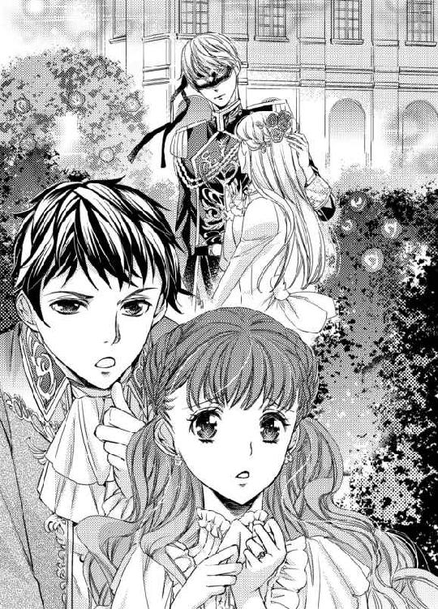
「クルトの知っている方？」
「うん、彼女はバルハウス公爵家の息女のヴィオラだよ。クラウス兄さんは結婚しないって宣言していたから、社交界に出ても女性を寄せ付けなかったんだけど、彼女だけは別。どこでどう仲良くなったのかは知らないけれど、ああやって人目を忍んでちょくちょく会っているみたいなんだ」
クラウスお兄様に、そんな方がいらっしゃったなんて......。
胸の奥に感じる嫉妬の炎が、どんどん激しさを増していくのを感じながら二人の姿から目を離せずにいると、クラウスがヴィオラの髪にそっと撫でるように触れた。
「......っ!?」
どうして、その方に触れるの？
「んん？ 友人かと思いきや、随分といい雰囲気だね？」
思わず声を上げそうになり、リリアーナは両手で口を塞ぐ。今見た光景だけでも心に突き刺さったのに、クルトの一言が更に突き刺さる。
「......もうすぐ......結婚......」
え......？
確かに今、クラウスの口から結婚という言葉が出た。何を話しているか全てはわからないけれど、それだけは確かにわかった。ヴィオラは青い瞳を輝かせ、頬を染めて嬉しそうに微笑んで頷いている。
一つの可能性が、リリアーナの頭の中に浮かぶ。
ううん、違うわ。そんなの違う。
そう信じたいから、これ以上考えないようにしようと思ったその時、クルトがポツリと呟いた。
「リリアと離婚した後に、ヴィオラと再婚しようとしているのかな？」
「......っ」
それはリリアーナが考えたことと、同じことだった。その場にいるのが耐えきれなくなったリリアーナは踵を返し、自室に向かって走る。
クルトが名前を呼んで追いかけてくるのがわかったけれど、立ち止まる余裕もなかったし、後から部屋を訪ねてきてくれたが、応対する気力もなかった。
◆◇◆
目が痛い......。
いつの間にか泣き疲れて眠っていたようで、気が付くと夜になっていた。メイドが食事を部屋に運んできてくれたが、一口も食べられなかった。
食事はいらないけれど、入浴はしたい。涙でグシャグシャになった顔を洗い、走って汗で汚れた髪や肌を清めてバスタブに身を沈めた。
いつもなら午後のティータイムはクラウスの政務室で過ごしていたけれど、今日はさすがに行けなかった。
今日はヴィオラさんとお茶をしたのかしら......。
胸の中が嫉妬の炎で炙られ、チリチリと焦げていく。黒い煙が身体中に充満するみたいで、どんなに息を吸っても苦しく感じた。
菫色の瞳から大粒の涙が零れて、頬を伝っていく。
どうしたらクラウスお兄様は、私のことを好きになってくれるの？
必死に考えても、全く思い浮かばない。気が付けばのぼせそうになるほど時間が経っていて、リリアーナはフラフラしながらバスルームを後にした。
髪を乾かしてナイトドレスに身を包み、部屋を出るとクラウスの部屋と繋がる内扉に目がいく。
もう、一緒に寝てなんて言えない......。
リリアーナはベッドに入ってカーテンを閉め、うつ伏せになって枕に顔を埋めた。こうしていれば、涙は枕に滲みこんで拭う必要がない。
どんどん溢れて来て拭いきれないから、ちょうどいいわ。
「......っ......ひっく......うう......」
ずっと眠ったままでいたい。そうしたら他の男性と再婚しなくても済むし、クラウスが再婚する姿を見なくて済む。
枕に顔を埋めたまま泣きじゃくっていると、ドアが開く音が聞こえた。ノックの音は聞こえない。
おかしい。メイドなら必ずノックをするはずだ。それにちゃんと鍵をかけた。
不審に思ったリリアーナが身体を起こすと、足音が近付いてくる。
「リリア、眠っているのか？」
「あっ......」
クラウスお兄様......!?
そうだ。内扉には鍵をかけていなかった。
「ああ、起きていたか」
寝たふりをしておけばよかった。今はクラウスの顔を見ることどころか、声を聞くことすら辛い。それにさっきバスルームの鏡で見たリリアーナの顔は、長時間泣いていたせいでとても酷かった。こんな顔を好きな人に見られたくない。
「体調を崩しているのか？ 今日は政務室に来なかったし、夕食も取っていないそうだな。それにいつもならとっくに俺の部屋に来ている時間だ」
クラウスの手がベッドのカーテンを開けようとしているのに気付いて、リリアーナは開けられないように両手でカーテンの割れ目を押さえた。
「違っ......別に、体調なんて崩していないわ......」
泣いていたせいで声が上ずって、鼻もグズグズ鳴らしてしまう。これでは泣いていることに気付かれる。
気付かれたくない。涙の理由を尋ねられたくない。正直なことを言えば、クラウスの口から新しい夫のことや、ヴィオラのことを聞かされるかもしれない。
そんなの聞きたくない......！
「リリア、泣いているのか？」
慌てて咳払いをして誤魔化したが、無駄だったようだ。指摘されると、突然クラウスが現れた驚きによって止まった涙が、またブワリと溢れてくる。
「なっ......泣いてなんて、ないわ......っ......ひっく......っ」
嗚咽まで上げてしまった。これでは誤魔化しようがない。
「泣いているだろう。なぜ誤魔化す？ 何か悲しいことでもあったのか？ 開けるぞ」
またカーテンを開けられそうになり、リリアーナは必死に開けられないよう攻防する。
「や......開けないで......！ 私、今日は......ううん、今日から一人で寝るっ......もう、クラウスお兄様となんて寝ない......っ」
嫌だ。本当は一緒に寝たい。今すぐ抱き付きたい。でも、意地を張らずにはいられない。だってリリアーナを同情で抱いていたなんて酷いし、悲しい。
「なぜだ？」
カーテン越しに聞こえるクラウスの声は、とても低くて、不機嫌なものだった。明らかに怒っているのがわかる声音だ。
どうして怒るの？ 私のことなんて妹としか思っていないのでしょう？ それなら一緒に寝なくなるなんていいことじゃない。
それなのにこの声は、リリアーナが一人で寝ることに不満を持っているみたいに感じる。
ううん、そんなはずないわ。
「......っ......ご自分の胸に、聞いてみたらいいわ......っ」
感情を昂ぶらせたリリアーナが声を荒げると、開かないように掴んでいたカーテンを強引に開けられてしまう。
「あっ......！」
「自分の胸に聞いた。心当たりは一つしかない。俺のことが嫌いになったのか？」
紫と金色の瞳が鋭い眼光を放ち、涙を流すリリアーナを射抜くように見つめる。
リリアーナはずっとクラウスが好きだったのだ。嫌いになれるはずがない。だからこそ辛いのに、全く伝わっていないことに苛立ってしまう。
「クラウスお兄様なんて知らないっ！ もう、出て行ってっ！」
肯定も否定もせずに、リリアーナはベッドに侵入してくるクラウスを両手で押し返そうとする。しかし彼の身体は、非力なリリアーナの力ではピクリとも動かない。
クラウスは自分の身体を押し返そうとしているリリアーナの両手を掴むと、そのままベッドに押し倒した。
「きゃっ！ や......っ......離して......あっ......」
大きくて無骨な手が、ナイトドレスの上からリリアーナの柔らかな膨らみを捏ねくり回すように揉みしだく。
「やっ......あんっんぅ......」
胸が淫らに形を変えるたびに甘い刺激が走って、お腹の奥が疼き出す。
「なぜ嫌いになった？ この左右非対称の目が薄気味悪いからか？ 俺が偏屈だからか？ 毎夜しつこくお前を求めるからか？」
ヴィオラのことが好きで、再婚したいと思っているのなら、リリアーナに好かれようが、嫌われようが別に構わないのではないだろうか。
「この目が薄気味悪いのなら潰してもいい。偏屈なのは元々だが、お前好みの性格になれるよう努力しよう。夜もお前に触れられるのが嬉しくて、つい求めすぎてしまっていたが、お前が嫌だと言うなら、我慢できるようにこちらも努力する」
この言い方だと、まるでリリアーナに嫌われたくないように聞こえる。何も知らなければ、以前のように、もしやクラウスも自分のことを女性として好いてくれているのではないかと、期待してしまっただろう。
クラウスの言うように、彼を嫌いになれたのならどんなに楽になるだろう。今は胸が引き裂かれそうなほど辛い。
でも、どんなに苦しい思いをしたとしても、リリアーナはこの想いを手放したくないと強く思う。
辛くても、苦しくても、悲しくても、クラウスへの想いは、リリアーナの宝物だ。
「......っ......違う......」
「何が違う？ 他に嫌いなところがあるということか？」
プクリと膨らんだ胸の先端を指の腹で潰され、リリアーナは甘い刺激に痺れながらも首を左右に振った。
「違っ......そうじゃ......なっ」
菫色の瞳から、また大粒の涙がポロポロ零れる。クラウスは眉間に皺を寄せ、そんなリリアーナを悲しげな瞳で見下ろす。
「お前は優しいから、言いにくいかもしれないが遠慮なく言ってくれ。どんなことをしても、必ず直すと約束する」
舞い上がっては駄目だ。クラウスは『好きな女性』から嫌われているのではないかと焦っているわけではない。『妹』に嫌われたくないと焦っているだけだ。彼が女性として愛しているのはリリアーナではない。ヴィオラなのだから。
嫌よ。離婚したくない。だって、ずっと好きだったのよ。こんなのってないわ......。
次々と涙を零すリリアーナを見て動揺したのか、手首を拘束しているクラウスの手の力が緩むのがわかった。
リリアーナはその隙を見て手を振りほどくと、またクラウスの手が追いかけてくる。
「リリア......」
「......クラウスお兄様っ！」
大きな手にまた捕まってしまう前に、リリアーナはクラウスに抱き付いた。自分の気持ちをぶつけるように、自然と指に力が入る。
「なっ......リリア？」
クラウスにとっては予想外の行動だったらしい。リリアーナからは見えないが目を大きく見開き、すぐに強く抱き返してくれた。
「クラウスお兄様は、どうしたら私を好きになってくれるの？ 私、離婚なんてしたくない......っ......クラウスお兄様以外の妻になるなんて、絶対に嫌だもの......！ 私こそどんなことだってするわ。ヴィオラさんと同じ髪色がいいって言うのなら、私も金髪に染める......ヴィオラさんみたいな性格がいいって言うなら、近付けるように努力するわ。どんな性格かはわからないから、色々聞いてしまうことになると思うけど......でも、頑張るわ。弱音なんて吐かない！ だから、お願い......私を好きになって......お願い......お願いよ」
嗚咽を上げながら懇願すると、クラウスが髪を撫でてくれる。気持ちいいけれど、その手で先ほどヴィオラの髪を撫でていたことを思い出すと、胸が焼け焦げそうになる。
「なぜ、ヴィオラの話が出てくる？」
「なぜって、それはクラウスお兄様の好きな人......だから、でしょう？」
私の気持ちを知っていながら、私に言わせるなんて酷いわ......。
胸が痛い。声が震える。泣きすぎて、溶けてしまいそうなほど目が熱い。
この想いが叶わないのなら、左手の薬指から妻の証である指輪を没収されるされる前にこの胸の中で息絶えてしまいたいと心から思う。
「いや、ヴィオラはクルトの婚約者だ。クルトから聞いていたと思って説明しなかったが、三か月後に結婚式を控えている。まだ先のことのように思うかもしれないが、きっとあっという間だろうな」
「............え!?」
クルトはそんなこと、一言も......。
「さっき、庭で髪を撫でていたのは......？」
「髪？ ああ、髪に花びらがくっ付いていたから、取ってやっただけだ。付いている場所を教えたが、鏡がないからよくわからなくて困っていたからな」
今までも、クルトには色々騙されてきた。もしや、今回も彼に騙されてしまったのだろうか。
「あ、の......クラウスお兄様とヴィオラさんは、仲がいいって本当？ いつも人目を忍んで会っているって聞いたのだけど......」
「いや、違う。それは俺の話ではなく、クルトの話だろう。幼い頃から仲がよかったらしい。王である俺よりも先に結婚することなどできないと言って、婚約するまでは人目を忍んで会っていたが、俺が結婚してからはすぐに婚約した」
「じゃあ、私と別れて、ヴィオラさんと再婚するつもりだったのではないの？」
「まさかだろう。俺は誰とも再婚するつもりなどない。俺がヴィオラと浮気していると思っていたのか？ だから一人で閉じこもって泣いていたのか？」
なぜ、クルトはそんな嘘を吐いたのだろう。わからない。でも、リリアーナの再婚相手を探していることは事実だ。事態は一向に変わっていないのだから安堵などできない。
「泣いていたのは、それだけが理由じゃないわ......」
「他にも何かあるのか？」
クラウスはリリアーナの髪を撫でながら、優しい声音で尋ねてくる。
「私がクラウスお兄様好みの女性になれたら、離婚しないでくれる？」
「どういうことだ？」
「私、さっきクラウスお兄様の政務室に入ったの。メイドが掃除の時に大切なブレスレットをなくしたって困っていて、クラウスお兄様はお留守だったからクルトに頼んで開けてもらったの。その時に私、書類を崩してしまって、その時に......」
何年も手紙のやりとりをしていたから、筆跡は覚えている。間違いない。あれは確かにクラウスの字だった。
ヴィオラとの話が間違いでも、クラウスが今でもリリアーナと離婚するつもりなのは間違いない。
「クラウスお兄様が書いた、私の再婚相手のリストを見つけてしまったの......」
声が震えて、嗚咽に邪魔されて、虫の羽音のような小さな声しかでない。
「リスト？ なぜ、そんなものが......」
どうして不思議がっているのだろう。あれは誰かが作ったものではない。確かにクラウスの字で書かれていたのだから、クラウスのものだ。
「クラウスお兄様が作ったものなのだから、クラウスお兄様のところにあって当然でしょう？ 私、クラウスお兄様以外の方と再婚するのは嫌よ......なんでもするから、クラウスお兄様が手放したくないって思う女性になれるように頑張るから、離婚するなんて言わないで......」
「ああ、離婚する気も、他の男に渡す気もない」
え......？
願望がそのまま幻聴になったのだろうか。
「クラウスお兄様、今なんて......」
クラウスは身体を起こして、目を丸くしているリリアーナをジッと見下ろす。
「俺は離婚する気などない。生涯お前に妻として俺の隣に居てほしいと思っている」
低くて、とても真剣な声だった。幻聴とは思えない。からかわれているとは思えない。これはクラウスの誠心誠意の言葉だとわかる。
「ほ、本当に？ でも、私の再婚相手のリストを作っていたわ」
「最初は本当に探していた。俺の傍に居ては不幸にしてしまう。お前が幸せになれる最良の相手を見つけようとリストを作っていたのは本当だ。だが、もうどうしようもないぐらいに気持ちが育ってしまって......いや、最初からあった気持ちに気付いてしまって、お前と離婚するなど、指を咥えてお前を他の男の下にやるなど耐えられなくなって、リストは破棄したんだ。それなのにまたなぜ俺の政務室に戻ってきたのはわからないが──......というよりも、クルトが一緒だったのなら、奴が潜り込ませたのかもしれないな」
「クルトが？」
「ああ、あいつは俺達の仲に波風を立てることで、仲を深めさせようとしていたからな」
クルトには、クラウスと仲を深めていることを話していなかった。二人の仲を応援していた彼は、リリアーナ同様に焦っていたのかもしれない。
「......クラウスお兄様も、私を好きになってくれたってこと？」
恥ずかしい勘違いだったらどうしようと思いながらも、聞かずにはいられなかった。
「そうだ。俺はお前を愛している」
神様、お願いします。これ以上何も望みません。どうかクラウスお兄様の心を私にください──。
何度──何度そう、願ったことだろう。
まさか本当に叶うなんて......。
「うわあああん......っ！」
リリアーナは声を上げて、まるで子供のように泣いた。大人の女性あるまじき泣き方だけど、本当に嬉しくて、取り繕ってなどられない。
「相変わらず泣き虫だな」
クラウスが柔らかく微笑む。恥ずかしいけれど、止まらない。
「だって、だって本当に嬉しくて......こんな泣くなんて......泣き方も、子供っぽいってわかってるけど、でも......と、止まらない......」
嗚咽を上げながら喜びを伝えると、クラウスが唇で涙を拭ってくれる。
「子供っぽくなどない。お前がそうして泣くたびに、俺は何度も男としての心を揺り動かされてきた」
喜びが先に現れたが、遅れて怒りも込み上げてきた。
「......っ......でも、どうしてもっと早くに、言ってくれなかったの？ 私、ずっと離婚されるのだと思って、怖かったわ」
「すまない。これができあがってから告白しようと思っていた」
クラウスはポケットから指輪を取り出し、リリアーナの左手の薬指にある結婚指輪の上に重ねて付けた。
「クラウスお兄様、これは？」
初めに貰った結婚指輪は、白銀に大きなダイヤモンドがあしらわれたものだったが、今貰ったものは、金にリリアーナと同じ菫色をしたアメジストが飾られていた。
「結婚指輪だ」
「え？ でも、もう貰っているわ。ほら」
左手を顔の位置まで上げて、既に貰っている結婚指輪を見せるが、クラウスは苦笑いを浮かべて首を左右に振る。
「この指輪を渡した時は、いつか離婚しなければならないと思っていた。気持ちの問題かもしれないが、お前と生涯を共にしたいという気持ちで新たに渡したいと思ったんだ。前に渡したものは、離婚話と共に破棄したい。返してくれるか？」
「破棄？ い、嫌......っ」
リリアーナは手をサッと引っ込めて、首を左右に振った。
「どんな思いでくださったにしても、これはクラウスお兄様がくれたものだもの。捨てるなんて嫌！ クラウスお兄様が見たくないっていうなら、目に付かない場所にしまっておくから、返してなんて言わないで......」
クラウスは目を丸くすると、やがてククッと笑い出す。
「そういえばお前は、俺が贈ったものは包装紙まで取っていてくれたんだったな」
「当たり前だわ。クラウスお兄様からいただいたものは、私の宝物だもの。だから返せなんて言わないで？」
強引に取られないように手を後ろに隠しながら尋ねると、「もう言わない」と笑ってくれた。
「優しくて、誰よりも強い心を持ったお前を幼い頃から尊敬している。大人になったお前を見て、もっとそう思った」
「そんな！ 私、全然優しくも、強くもないわ。いつだって自分のことで精いっぱいで、認めたくないけどやっぱり鈍臭くて、武術なんて全然できないもの」
苦笑いを浮かべるリリアーナを見て、クラウスは口元を綻ばせて首を左右に振った。
「お前の優しさや強さに、何度救われたかわからない」
クラウスを救った記憶なんて少しもない。でも、もし自分の言動の何かが彼を救ったのならとても喜ばしいことだ。
自然と笑顔になると、瞳にたくさん溜まった涙がほろほろ零れた。自分で拭おうと顔に手を持って行くと、その手をクラウスがギュッと握る。
「クラウスお兄様？」
「リリアーナ、俺の色違いの瞳は不吉だと言われているし、自分でも本当にそう思っている。周りにもそう思っている者がいるだろう。そんな男の妻で居続けるなんて、お前を不幸にしてしまうと思った。お前にはそんな辛い思いをさせたくなくて遠ざけてきた。だが、俺はやはり、お前が隣にいない人生など考えられない。そんな人生は、生きているのに、死んでいるのと同じだ。お前を幸せにできるように、不吉な力に勝てるように努力する。だから俺の妻で居続けてはもらえないか？」
いつも温かいクラウスの手は、ひやりとするほど冷たかった。きっと緊張しているのだろう。リリアーナはその手を握り返し、もう片方の手で包み込んでそっと擦った。
「クラウスお兄様ったら、もう私が言ったことを忘れてしまったの？」
「リリアが言ったこと？」
「クラウスお兄様の瞳は不吉なんかじゃない。クラウスお兄様の瞳は幸せを運ぶ瞳よ。だって私、こんなに幸せなんだもの。このお話をした当時よりも、ずっとずっと幸せだわ。私が身を持って体験したのだから、これは絶対よ」
「リリア......」
「クラウスお兄様のことをよく知らない方がする噂話と、幼い頃からクラウスお兄様を大好きだった妻の私の話、どちらを信じる？」
答えは、決まっているでしょう？
リリアーナは自信に満ちた瞳で、真っ直ぐにクラウスの紫と金色の瞳を見つめる。すると彼は切れ長の瞳を潤ませ、そっと細めた。
「ああ、リリアを信じる」
涙は零れていないけれどクラウスが泣いているように見えて、リリアーナは彼の手を握ったまま顔を近付け、涙を拭うように瞼へ唇を落とした。
「信じてくれて、私を好きになってくれて、幸せにしてくれてありがとう。クラウスお兄様、大好きよ」
「俺もだ」
どちらからともなく唇を重ね、やがて想いを伝えあうような深い口付けになっていった。
「ん......っ......んぅ......ふ......んん......」
ヌルヌルと舌を擦り合わせていると、まるで心と心を擦り合わせているような気がしてくる。
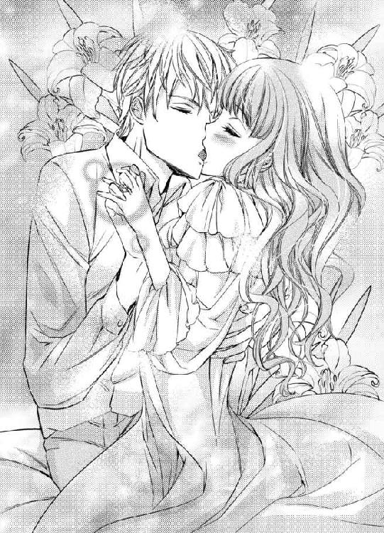
大好き。クラウスお兄様が、大好きよ......。
どうかこの気持ちが伝わりますようにと強く願い、リリアーナはクラウスの長く器用な舌に小さな舌を擦り付けた。
甘いキスで、身体の力が抜けていく。クラウスと繋いでいる手からも力が抜けて、ベッドの上に落ちた。彼は自由になった両方の胸をナイトドレスの上から包み込むと、ゆっくりと揉み始めた。
「ん......っ」
薄い布越しに熱を取り戻したクラウスの手の温もりが伝わってくると、先ほど刺激を受けたせいもあり、またすぐに胸の先端が主張し始めた。手の平が動くたびにそこが擦れて、身体に甘い痺れが走る。
ナイトドレス越しじゃなくて、直接触ってほしい......。
触ってほしいところはそこだけではなくて、足の間にあるクラウスにしか見せたことのない場所がズクズク疼く。
「......リリア、いいのか？ というか、嫌だと言ってもやめるのが難しいが」
唇を離すと同時に、クラウスが気恥ずかしそうに質問をしてくる。
「いいって、何が？」
「このままお前を抱くことだ。お前と初夜を共にしてから、ほぼ毎夜抱いているだろう？ 嫌ではないか？」
リリアーナは甘い刺激で瞳をとろかせ、ゆっくりと首を左右に振った。
「嫌じゃないわ。すごく幸せ......。今まではクラウスお兄様の気持ちがわからなかったから、私が可哀想な女の子だと思って、同情から抱いてくれているのかと思って不安だったけど、今までも私が好きだから抱いてくれていたのね。嬉しい」
「そ、そんなことを考えていたのか。もちろんお前が好きだから抱いていた。毎夜激しく求めていたから、その行動から俺の気持ちがなんとなく伝わっているのではないかと思っていたが、まさかそんな誤解を生んでいたとは......指輪のできあがりを待っている場合ではなかったな。すまなかった」
「ううん、いいの」
これまでとても悩んだ。でも今はその一言で片付けられるほど満ち足りている。
「では、遠慮しないぞ」
「ぁっ......」
口元を吊り上げたクラウスは、ナイトドレスのリボンを解く。薄布がスルリと音を立て、リリアーナの白い肌を滑ると、大きな二つの膨らみが露わになった。
何度肌を見られても、恥ずかしくて慣れない。これから胸に触れられるとわかっていても、リリアーナは無意識のうちに手を交差させて隠してしまう。ドロワーズの紐を解かれて下腹部が見えても、手は胸を守っている。
「こら、隠すな」
「ご、ごめんなさい。だって、恥ずかしいんだもの。ね、クラウスお兄様も脱いで？」
リリアーナのおねだりを聞き届けたクラウスは、すぐにシャツや下履きも脱いで、生まれたままの姿になった。リリアーナが恥ずかしがっているのと反して、彼は全く恥ずかしがっていない様子だ。
「これでいいか？」
逞しくて無駄な贅肉が全くない筋肉質な身体は、とても美しくて淫靡だ。クラウスの欲望はすでに硬くなっていて、重たげな頭を持ち上げている。
彼の身体をじっくり見たいという気持ちはあるが、欲望のままに行動すればはしたないと思われるかもしれないし、何より羞恥心で顔どころか身体まで燃え上がりそうなほど熱い。
「......ど、どうしよう。なんだか、ますます恥ずかしくなってしまったわ」
「どう足掻いても恥ずかしいのだから、我慢するしかないだろうな。こら、いつまで隠している。それは俺のだ。見たり、触ったり、舐めたりしたいのだから、席を譲れ」
「席って......ふふ」
思わず笑ってしまうと、交差させていた手を避けられた。白い胸は興奮で紅潮し、ツンと尖った頂も通常よりもわずかに濃く色付いている。
「ようやく味わえる」
クラウスは満足そうに口元を吊り上げるとリリアーナを組み敷いて、長い舌で尖りをコロコロ転がし始めた。
「ぁんっ......あ......っ......はぅ......」
長い舌はキャンディでも味わうかのように、興奮で色付いた尖りをねっとりと舐め転がす。舌の動きと共に身体が跳ねる。
「相変わらずお前の乳首は美味いな？」
「や......んっ......そ、そんなの、美味しくな......っ......あっ......んぅっ......」
クラウスは舌で可愛がりながら、反対の尖りを指と指の間に挟んで、抓み転がす動きを加えてくる。
なんて気持ちいいの......。
リリアーナはとろけそうなほどの快感に包み込まれ、甘い嬌声を零す。ぼんやりしながらも、クラウスも胸の先端を弄られると気持ちいいのだろうかと疑問が浮かぶ。
「クラウスお兄様、私も......」
クラウスは胸の先端から唇を離すと、「どうした？」と尋ねてくる。濡れた胸の先端に熱い息がかかるだけで感じて、リリアーナはビクビク身悶えを繰り返す。
「私も、ね......クラウスお兄様を気持ちよくしたいの。私もクラウスお兄様の胸、触ったり、舐めたりしてもいい？」
「俺は今で十分だ。お前の身体を触っていると、あちこちが気持ちいい」
形のいい唇がリリアーナの耳朶を柔らかな胸の感触を楽しむように、長く無骨な指が淫らに動く。
「んっ......そんなはずないわ。でも、私もクラウスお兄様を気持ちよくしたいの......だめ？ 私にされるの、嫌？」
首を傾げて尋ねるとクラウスが瞳を細めて仰向けに寝転ぶと、リリアーナを抱き上げて自分の上に乗せた。
「まさか。お前にされることを嫌と思うことなどない。好きにしろ」
「ありがとうっ」
クラウスがそうしてくれたように、胸を揉んでみることにする。しかし彼の胸はとても硬くて指が滑る。
「ん......上手く揉めないわ」
クラウスは初めからわかっていたらしく、「そうだろうな」と言って笑う。
「クラウスお兄様、どう？ 気持ちよくなれている？」
「くすぐったいな」
「そう......」
残念だけど、まだ望みはある。
次は肌色に近いピンク色をした小さな胸の先端に触れてみた。硬い胸とは違ってプニプニとした柔らかな感触だ。
「ここは柔らかいのね」
「まあ、そこは誰でもな」
指で弄っているうちに、リリアーナの乳首と同じく硬くなっていく。これは感じてくれているということだろうか。
「クラウスお兄様、気持ちいい？」
指を拙く動かしながら尋ねてみるが、クラウスの顔はどう見ても気持ちよさそうには見えない。
「くすぐったいな」
胸の先端が尖ったからといって、気持ちよくなれているわけではないらしい。よく考えたら、寒い時にだって尖る。
「気持ちよくするのって難しいのね。クラウスお兄様はすごいわ。私はクラウスお兄様に触ってもらったら、すぐに気持ちよくなってしまうもの」
感心して自然と呟いてしまうと、クラウスがククッと笑う。
「それはお前が感じやすいからだ」
クラウスはリリアーナの胸に手を伸ばすと、ぷくりと膨れた先端を指の腹でクリクリ転がした。
「ぁン！」
少し触れられただけで大げさなぐらい身悶えしてしまうと、クラウスが「ほらな？」と笑う。次々与えられる甘い刺激に誘惑され、このまま身を任せたくなる。
再び組み敷かれそうになり、リリアーナは瞳をとろかせながらも首を左右に振った。
「や......待って......まだ、クラウスお兄様を気持ちよくしていないわ......だから、だめ......」
舌でならどうだろう。リリアーナは小さな舌を出して、恐る恐るといった様子でクラウスの胸の先端を舐めてみると、クラウスの手が太腿をしっとりと撫でてくる。
「ン......っ......クラウスお兄様、悪戯しちゃだめ......」
「悪戯じゃない。こんなご馳走を目の前にして、触れずにいるなんて無理な話だ」
「そ、そんな、あっ......」
クラウスの意地悪な手は内腿まで到達し、ついには花びらに到達した。
「濡れすぎだ。まるで大洪水だな。やはりお前は感じやすい」
「ぁっ......んんっ......」
このままじゃ、また私だけ気持ちよくなってしまうわ。
リリアーナは必死に舌を動かし、ちゅ、ちゅ、と唇を押し付けてみたり、思い付く限りに刺激を与えてみるが、クラウスの余裕な表情を崩すことができない。
その間にもクラウスの指は花びらの中に潜り込み、リリアーナのぷくりと膨れた敏感な粒を探し当てた。
「んぅ......っ......」
敏感な粒を指の腹でプリプリ転がされると強すぎる刺激が襲ってきて、頭が真っ白になり、力が入らなくなる。
「や......んんっ......ら、め......んぅ......」
ただでさえ拙い動きしかできない舌が、もっとろくに動かせなくなる。膣口がヒクヒク収縮を繰り返すと蜜がトプリと溢れ、クラウスの身体にまで垂らしてしまう。
「お前のここは、何度抱いても処女のように小さくて可愛いな」
指が膣口の形をなぞるように動いて、指の先がゆっくりと入ってくる。
「あっ......あっ......そこ、は......だめっ......」
今ですら感じすぎてどうにかなってしまいそうなのに、これ以上入れられたらクラウスを愛撫するどころか、何も考えることができなくなる。
リリアーナは必死に駄目だと訴えるが、クラウスの意地悪な手の動きは止まらない。
たっぷりと蜜を纏った無骨な指を膣道に埋め込まれ、弱い場所をたっぷりと擦られると一気に快感の波が駆け上がってきて、リリアーナは大きな嬌声を唇から零し、あっという間に達してしまった。
絶頂の余韻に痺れて指一本動かせなくなったリリアーナは、肩で息をしながらクラウスの胸にくたりと凭れかかる。彼の硬い胸板に柔らかな二つの膨らみが潰される刺激すら快感になって、ビクビク身悶えを繰り返す。
「俺の乳首を愛撫するのは終わりか？」
クラウスが意地悪な笑みを浮かべながら訪ねてくる。
「もう、私はもっとしたかったのに、クラウスお兄様が悪戯する、から......あっ......！」
抗議しているリリアーナを組み敷いたクラウスは、花びらの間に大きく反り立った自身を挟めると、ゆっくりと腰を上下に動かしてきた。
「仕方ないだろう？ 俺もお前を気持ちよくしたいからな」
「ひぁんっ......！ ぁっ......あっ......い、今、だめっ......まだ、達って......るから......おかしく......あぁっ......！」
興奮と快感で膨れ上がった敏感な粒が欲望で擦れ、リリアーナはまた達してしまう。クラウスはビクビク身悶えを繰り返す彼女を満足そうに見下ろすと、甘い蜜を零して誘うように収縮を繰り返している膣口に欲望を宛がう。
「ぁっ......」
「リリア、入れるぞ。これなら二人で気持ちよくなれる」
リリアーナはまだ絶頂の余韻に痺れながらも、コクリと頷いた。
「クラウスお兄様、大好き。早くクラウスお兄様も私の中で、気持ちよくなって......？」
「最高の口説き文句だな。ああ、もう駄目だ。リリア、激しくなっても許せよ」
クラウスの紫と金色の瞳が、熱っぽく揺れる。
なんて綺麗なのかしら......。
リリアーナが見惚れていると、クラウスが一気に腰を押し付けてきた。
「ひぁ......っ!?」
灼熱の杭がリリアーナの狭い膣道を一気に突き進み、奥までみっちりと満たす。クラウスから与えてもらえる甘美な快感を少しも逃さないようにと、興奮で膨らんだ膣肉がギュゥッと収縮し、彼の欲望を締め付けた。
「......っ......相変わらず、極上の感触だな......政務も、寝食すらも忘れて、ずっと貪っていたくなる」
クラウスは熱い吐息を零しながら、激しい抽挿を繰り返し始めた。あまりに強い刺激が襲いかかってきて、彼の先端が最奥にゴツゴツあたるたびに、瞼の裏に火花が飛んでいるように感じる。
中をかき混ぜられる淫らな音や肌と肌がぶつかり合う音が、いつもは静かなリリアーナの寝室に響く。
「ぁっ!? ひぅっ......ぁん！ クラウスお兄様......やんっ......激し......っ......お、おかしくなっちゃ......」
「それはぜひ見たい。俺しか見られないお前をもっと見せてみろ」
膨らんだ切っ先を最奥にグリグリ擦り付けられ、リリアーナは大きな嬌声をあげる。
膣道は激しくうねり返り、クラウスの与える刺激を少しも逃すまいというように、彼の欲望をより強く締め付けた。
「はぅっ......んっ！ ぁっ......あっ......クラウスお兄様っ......クラウスお兄様ぁ......っ！」
「可愛く俺の名前を呼ぶこのピンク色の唇も、俺に揺さぶられて上下に揺れるこの大きな胸も、俺のを締め付けるこの小さな穴も全部俺のものだ......」
リリアーナは喘ぎながら、何度も強く頷く。
私の全ては、全部クラウスお兄様のものよ。他の方になんて、捧げなくていいんだわ。
なんて、なんて幸せなんだろう。
激しい抽挿の中、深く唇を重ねられ、とろけた舌先をチュッと吸われた瞬間、リリアーナはまた強い快感の波に押し上げられた。
「あっ......あぁっ......んんっ......きちゃうっ......また、きちゃ......あっ......あぁ──......！」
興奮で激しくうねり返る膣肉の動きに誘われ、クラウスも最奥で真っ白な欲望を弾けさせた。
「......っン......クラウスお兄様、いっぱい出てる......」
「ああ、お前の中が気持ちよすぎてな。空になるまでたっぷり注いでやる。朝まで離すつもりはないから、覚悟しろ」
「私だって離すつもりはないわ。やっとクラウスお兄様を手に入れられたんだもの。だからクラウスお兄様こそ覚悟してね？」
リリアーナは照れ笑いを浮かべながらクラウスの言葉を真似て、彼の唇にチュッと軽くキスしてみる。
すると中に入ったままでいるクラウスの欲望がガチガチに硬くなり、彼の金と紫色の瞳が熱に揺れるのがわかった。
「リリア、朝までというのは訂正する」
「え、そうなの？」
政務の用事があったのを思い出したのだろうか。残念だけど、大切なことだ。仕方がない。そうわかっていても、少しでも長く一緒に居たかったと気持ちが切り替えられずに、少ししょんぼりしてしまう。すると酷く敏感になっている胸の先端を指でキュッと抓まれ、リリアーナは甘い声を上げた。
「朝でなど足りない。最低でも昼......いや、夕方まではかかりそうだ。急ぎの政務はないし、明日中に片付けなければいけないものは、夜までになんとかすることにしよう」
リリアーナは菫色の瞳を丸くし、真剣な顔でブツブツ呟くクラウスを見て笑ってしまう。
「なぜ笑う？」
「だって、クラウスお兄様が可愛いんだもの」
「俺のような男を可愛いと言う女は、お前ぐらいだ」
「私以外に居たら嫌だわ。クラウスお兄様の可愛いところが見られるのは、私だけがいいもの。......独占欲が強いって、呆れちゃう？」
少し正直に言いすぎただろうか。
恐る恐る尋ねると、クラウスが口元を綻ばせる。
「いや、惚れ直した。これ以上俺を夢中にさせてどうするつもりだ。一生をかけて責任を取ってもらうぞ」
リリアーナはまた目を丸くし、花のような笑顔を浮かべてこう言った。
「ええ、喜んで」
偏屈な王はようやく手に入れた最愛の妻を腕の中に閉じ込めると、宣言通り朝どころか夕方まで離さなかった。
エピローグ 偏屈王と最愛の新妻
リリアーナとクラウスが想いを通じ合せるようになってから、半年が経とうとしている。
まだかしら......迎えに行ってもいいかしら？
「リリア、待たせたな」
夜、政務を終えたクラウスが夫婦の寝室に入ってくると、彼の帰りを今か今かと扉の前で待ち構えていたリリアーナは、彼が扉を開けた瞬間に思いきり抱き付いた。
「クラウスお兄様、ご政務お疲れ様っ！」
「ああ、お前に早く会いたくて、我慢するのに疲れた」
クラウスはリリアーナを片手で抱き上げると、空いている方の手を自身の頭の後ろに手を伸ばし、何かを掴むような仕草をする。
「ふふ、クラウスお兄様ったら、もう仮面は被っていないわよ？」
「......と、本当だな。癖になっているようだ」
クラウスはリリアーナの前でだけなく、彼女以外の人間の前でも金と紫色の瞳を露わにするようになった。それを決意させたのは、クラウスの瞳は、不幸を呼ぶどころか幸せを運ぶ瞳だとリリアーナが言ったからだ。
しかし長年仮面を付けていたため、つい習慣で仮面を直そうとしたり、寝室に入ると仮面を外そうとする仕草を取ってしまう。仮面を外して半年が過ぎたが、長年の癖はなかなか直らないようだ。
「お前も癖が抜けていないようだな？」
「え、なぁに？」
「『クラウスお兄様』ではなく『クー』と呼ぶことにしたのだろう？」
「あっ......！」
夫婦なのだから『お兄様』というのはやめにして、愛称で呼びたい！ と自分から言い出してから半年──彼を愛称で呼べたことは数少ない。
でもいつか呼べたらいいと思っているくらいで、特に焦ってはいない。だってクラウスとは離婚しない。これからの生涯、ずっと彼と一緒に居られるのだ。なかなか癖が抜けなかったというのも、また二人にとって素敵な思い出になるに違いない。
「今日はいい報告がある」
「え、そうなの？ なぁに？」
「ハウライト国だが、大分良い方へ向かっていると指南役の重臣から連絡がきている。時間はかかるだろうが、いつかはエドモンドが治めていた時と同じように戻れるだろう」
「本当？ よかった......でも、クラウスお兄様のお身体は大丈夫？ ただでさえお忙しいのに、ハウライト国のことまで加わって大変よね。本当にごめんなさい」
「お前は何も悪くないだろう。それにこれくらいで折れるようなやわな鍛え方などしていない。俺にたっぷり体力があることは、お前が身を持って一番よく知っているだろう？」
クラウスに熱っぽい視線を送られ、リリアーナは頬を真っ赤に染める。
昨夜もクラウスは遅くまでリリアーナを求め続けたのに、今朝早くに疲れた顔をするどころか晴れやかな顔で政務へ向かった。今もその顔に疲れは全く見えない。むしろぐっすり眠ったかのようにすっきりした顔をしている。
「クラウスお兄様は、どうしてそんなに体力があるの？」
「お前をたくさん抱けるように、日々鍛錬を欠かさないからだ。じゃあ、お前はどうしてそんなに可愛いんだ？ 俺を魅了するために、どんな鍛錬をしている？」
真っ赤になった頬にチュッと唇を押し付けられると、ますます赤くなる。
「あっ......そうだわ。クラウスお兄様、見せたいものがあるの。ちょっと下ろしてくれる？」
「嫌だ。ようやくお前に触れられたんだから下ろしたくない」
「もうっ......クラウスお兄様？」
「見せたいものがあるところまで移動するから、どこへ移動したらいいか教えてくれ」
リリアーナは今すぐクラウスの唇を奪いたくなるのをなんとか我慢し、窓の前にあるテーブルの方へ行ってほしいと頼んだ。テーブルの上には可愛らしい箱が置いてある。彼はテーブルの前にあるソファに座ると、横抱きにしたリリアーナを自分の膝に座らせた。
「この箱は？」
「チョコレートよ。クルトがくれたの。甘い物は疲れにいいんですって。一緒に食べましょう？」
大好きな兄が結婚し、自分も愛しい人とようやく結婚することができた彼は、毎日幸せそうに笑っている。そんな彼を見ていると、リリアーナも温かな気持ちで胸がいっぱいになるようだった。
リリアーナは箱を開いて、クラウスにハート形をしたチョコレートを見せる。先ほど中身を見てすぐに食べたくなったけれど、彼と一緒に食べたくてずっと待っていたのだ。
「クルトから？ また、媚薬でも入っているのではないだろうな？ あいつには色々と仕掛けられたからな」
クラウスは訝しげな目で、箱の中に入ったチョコレートをジトリと睨む。
「前に媚薬を盛ったのは、私とクラウスお兄様の仲を取り持ってくれるためだったし、もうクルトがそんなことをする理由はないでしょう？」
「俺は執念深いからな。それにあいつにやられたことは媚薬だけではなくて、他にもあっただろう。おかげでお前を散々泣かせるはめになった」
クラウスがとっくに捨てたと思っていたリリアーナの再婚相手リストを回収し、彼女に見せたのは、彼が予想した通りクルトだった。
クルトはこっそり回収した再婚相手リストを常に忍ばせ、機会を狙ってリリアーナに見せようとしていた。波風を立てることで、停滞している二人の仲を進展させられたら......と思っていたからの行動だったそうだ。クラウスとヴィオラのただならぬ仲を匂わせる発言を聞かせたのも同じ理由だ。
クラウスが散々叱りつけたが、クルトは反省するどころか『二人の仲が全く進展していないかと思って必死だったのに、毎日イチャイチャしてたなんて酷いよ！ どうしてそんな面白いこと教えてくれなかったのさ！ クラウス兄さんもクラウス兄さんだけど、リリアもリリアだよ！ 水臭い！』と言って、逆にクラウスに怒りをぶつけてきた。
クラウスはクルトを射抜くような目で睨み付け、『お前に知らせるとろくなことをしないからに決まっているだろう。リリアにも俺が口止めをした。人の恋路を気にする余裕があるのなら、剣の稽古を増やしてやろう。体力が有り余っているのだろう？』と言って、彼の足腰が立たないくらいまで剣の稽古を続けること一週間──クルトは態度を改め、丁寧な謝罪をしてきたのだった。
「でも、クルトのおかげでクラウスお兄様と両想いになれたわ」
「結婚指輪ができあがったあの日に告白するつもりだったのだから、あいつの協力がなくとも両想いになれていたぞ。お前をあんなに泣かさずに済んだ」
「そんなこと言わないで。あの時はそうだったかもしれないけれど、それよりも前にクルトが媚薬できっかけを作ってくれたことがキッカケで、私たちはこうして本当の夫婦になれたんだもの」
「......まあ、そうかもしれないが」
クラウスと話しながら、リリアーナは箱の中に入っている美味しそうなチョコレートをチラチラと見る。
美味しそう......。
リリアーナはチョコレートが大好物だ。先ほどからずっと我慢していた。もうこれ以上は我慢できそうにない。
クラウスがばつの悪い表情を浮かべる中、リリアーナはハート型のチョコレートを一つ抓んで、自分の口に入れた。
「ん～......美味しいっ！」
口の中いっぱいにチョコレートの良い香りが広がって、リリアーナは思わず両頬を押さえて笑みを浮かべる。
「こら、リリア！ 今何か入っているかもしれないと言ったばかりで......」
「......もし......もしもよ？ クルトがこの中に媚薬を入れていたとしても、私は何も困らないのだけど......クラウスお兄様は？」
大胆な発言だっただろうか。でも、本当のことだ。このチョコレートに媚薬が入っていて、身体が激しく疼いたとしても、クラウスに愛してもらえばいい。
リリアーナは照れながらもクラウスの手に自分の手をそっと重ねると、すぐに指を絡められてギュッと握られた。
「言われてみればそうだな。全く困らない。むしろ大歓迎だ」
クラウスは手を握ったまま顔を近付けてきて、リリアーナの唇にキスを落とす。ちゅ、ちゅ、と唇を重ね合うたびに身体の芯が熱くなっていって、まだ深いキスになってもいないのに、膣口が潤み出すのを感じる。
「......ねぇ、私達、その......毎日たくさんしているでしょう？ いつ赤ちゃんができてもおかしくないわよね。私、その時がとっても楽しみだわ」
リリアーナは一人娘で兄妹がいなかったから、幼い頃は兄妹が欲しいとずっと思っていたから、父がクラウスを兄と思いなさいと言って連れてきた時、とても嬉しかった。だから子供はたくさん欲しいと思う。
「そうだな。男なら次期国王か。剣の稽古や鍛錬を教えるのが楽しみだ」
クラウスは瞳を細め、リリアーナのお腹をガラス細工にでも触れるように優しく撫でる。
「次期国王？ いつかクルトに王位を譲るのなら、次期国王はクルトとヴィオラさんの子供ではないの？」
「何度も断られていたが、今回改めて尋ねたら、『自分は補佐役が好きだから、王にはなりたくない。この気持ちは何度説明されたところで変わらない』と断られた。結婚したばかりなのにヴィオラと過ごす時間がなくなるのも嫌だし、何よりも面倒だと言っていた」
リリアーナはクルトの言葉を思い出す。
『だから僕、クラウス兄さんが大好きなんだ。尊敬してる。母親の身分なんて関係ない。僕みたいな弱虫よりも、勇気があって優しいクラウス兄さんが王であってほしいし、幸せになってほしい』
面倒なんて嘘だ。
クルトはクラウスお兄様に王で居てもらいたいのね......。
「ふふ、クルトったら素直じゃないのね」
思わず笑ってしまうと、クラウスの表情が不機嫌なものになる。
「リリア、随分とクルトと仲がいいようだな？」
「そうね。私は仲がいいと思っているわ」
リリアーナが笑顔で答えると、クラウスの顔がますます不機嫌になっていく。
「......クラウスお兄様、もしかして、嫉妬してくれて......る？」
「ああ、そうだ」
嬉しくてにやけそうになると、クラウスがリリアーナの両肩を飾るリボンを解いた。ナイトドレスがストンと落ちて豊かな胸が露わになった。白い肌にはクラウスにたくさん愛された証が、花びらのように散っている。
「あっ......クラウスお兄様、チョコレート......食べないの？」
「いや、食べる」
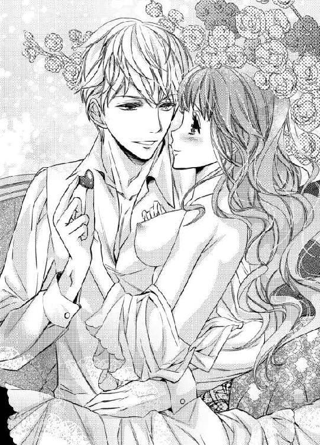
わ、私を裸にしたまま？
恥ずかしくて胸元を隠そうとしたら、そのままでいろと言われた。リリアーナが狼狽している中、クラウスはチョコレートを一粒摘まむ。
そのまま口へ運ぶのかと思いきや、クラウスはそのチョコレートをリリアーナの胸の先端押し当てる。
「ひゃっ......クラウスお兄様？」
チョコレートはリリアーナの体温で、どんどん解けていく。クラウスは意地悪な顔で笑い。ピンク色の胸の先端がチョコレート色に染まるのを見つめる。
「さっきよりもずっと美味そうになったな？」
「お、美味しそうって......ぁっ......や、やんっ......チョコレート、塗らないで......」
表面が溶けたチョコレートをクルクル動かされると、刺激で胸の先端がどんどん尖って敏感になってしまう。
クラウスに快感を教え込まれている身体は、彼から与えられたどんな刺激も全て快感として受け止める。それが例え彼の指や舌でなく、チョコレートだとしてもだ。
腰をくねらせ、自然と足と足を擦り合わせるようにモジモジ動かしていると、もう片方にも塗りたくられた。
「ぁんっ......や......クラウスお兄様、くすぐったいわ......」
「......そろそろ食べ頃だな？」
「食べ頃って......」
一粒のチョコレートを全て溶けきらせると、クラウスはペロリと舌なめずりをする。
まさか......。
そのまさかだった。クラウスは形のいい唇を開くと、長く肉厚な舌でチョコレートごと胸の先端をペロリと舐めた。
「ひぁんっ!?」
リリアーナが驚きと甘い刺激に驚き、菫色の瞳を瞬かせていると、クラウスはニヤリと笑ってまたチョコレートを舐め取り続ける。
「んっ......ぁ......や......こ、こんな食べ方するなんて......ぁんっ......だめぇ......っ」
「この食べ方が一番美味しく感じるのだから仕方がないだろう？」
「で、でも......んんぅっ......くすぐったいし、それに......」
変な気持ちになってしまう。
「それに......なんだ？」
わかってるくせに......。
「もう、クラウスお兄様の意地悪......っ......ぁっ」
クラウスはリリアーナの足からドロワーズをずり下すと、チョコレートをもう一粒手に取ってニヤリと笑った。
も、もしかして、ここに......!?
秘部に挟められないようにと咄嗟に足と足の間に力を入れたが、クラウスに唇を奪われ、ねっとりと濃厚なキスをされると力が抜けてしまい、結局は花びらの間に挟められてしまった。
「んー......やっ......そ、そんなところに挟めちゃだめっ......」
「一緒に食べようと言ったのはお前だろう？」
「こ、こんな食べ方すると思わなかったんだもの......はぅっ......んんっ......」
花びらの間に挟められたチョコレートは、偶然なのかそれともクラウスがわざと宛がったのか、ちょうど敏感な粒に当たっている。胸の先端に残ったチョコレートを舐め取られ、身じろぎするとそこにチョコレートが当たって甘い刺激が生まれる。
「はっ......んんっ......」
刺激に戸惑っているうちに、熱でチョコレートが溶けた。
「そろそろ食べ頃のようだな？」
「あっ......」
クラウスに組み敷かれて足を開かれると、花びらの間は溶けたチョコレートと溢れだした蜜で濡れ、ランプの明かりでテラテラと光っていた。
「ああ、より美味そうになった」
「クラウスお兄様、だめ......こんなところから、食べちゃ......ぁっ......やぁんっ......！」
ペロリと舌なめずりをしたクラウスは、羞恥に頬を燃え上がらせるリリアーナの花びらの間に唇と舌を潜り込ませる。
「あっ......あっ......んんっ......ふ......やんっ......ぁっ......あっ......」
ねっとりとした感触があまりにも好くて、身悶えが止まらない。息も絶え絶えになるほど喘いでしまうと、チョコレートを全て舐め終えたらしいクラウスが顔を上げる。
「実の弟にまで嫉妬する器の狭い男で、呆れたか？」
顔を上げたクラウスは頬を紅潮させ、明らかにばつが悪そうな顔をしていた。リリアーナは菫色の瞳を丸くし、やがて笑い出してしまう。
「そんなわけないわ。嬉しくてどうにかなってしまいそう」
リリアーナがとびきりの笑顔で答えると、クラウスは「そうか」と呟き、安堵したように口元を綻ばせる。
「ねぇ、クラウスお兄様、チョコレート食べたい......」
「ああ、口に入れてやる」
クラウスがチョコレートが入った箱に手を伸ばすのを見て、リリアーナはふるふる首を左右に振った。
「そうじゃなくて......あのね、私もより美味しくチョコレートを食べてみたいの......だから......」
大胆な子って思われちゃうかしら......。
迷ったけれど、やめられない。
リリアーナは軽く首を傾げているクラウスの唇を自ら奪うと、勇気を出して舌を入れてみる。
「んんっ」
まさかリリアーナからキスしてくると思わなかったらしいクラウスは、少しだけ驚いた声を出したが、すぐに侵入してきた彼女の舌に自身の舌をねっとりと絡める。
甘い、甘いチョコレートの味がする。先ほど食べたチョコレートよりもうんと美味しく感じて、リリアーナは夢中になって舌を動かした。
「......美味いか？」
「ん......美味しい......」
「じゃあ、もっと食え」
クラウスは新たに掴んだチョコレートをリリアーナの口に入れると、また彼女の唇に自身の唇を深く重ねた。
箱の中にチョコレートがなくなっても、二人は唇を重ね合うのをやめない。
偏屈な王と彼の最愛の妻の寝室からは、また今夜も、いつまでも、いつまでも甘い声が響いていた。
あとがき
こんにちは！ 七福さゆりです。「偏屈王と最愛の新妻」をお手に取っていただき、ありがとうございました！
本作を執筆中、急に引っ越しが決まりまして......その余波でスケジュールがずれにずれこんでしまい、各関係者の方々に大変ご迷惑をおかけすることになってしまいました。この度は本当に申し訳ございませんでした......。
特にイラストをご担当してくださった、みずきたつ先生には多大なご迷惑をおかけしてしまい......それなのにも関わらず、素晴らしいイラストの数々を本当にありがとうございました。感謝してもしきれません......！
そして「てめぇ！ ふざけんな！」と罵倒されてもおかしくない私を優しく励ましてくださり、支えてくださった担当Ｎ様......本当にありがとうございました！ おかげで無事仕上げることができました。
たくさんの方々に支えられて無事できあがりました本作、私自身もたっぷりと愛を詰めましたが、皆様からもそれ以上にたくさん詰めていただきました！ お買い上げくださった読者の方がたに、どうか楽しんでいただけますように......！
オッドアイのヒーローを書いたのは初めてだったので、とても新鮮でした！
クラウスとリリアーナは今後娘と息子二人が生まれる予定ですが、娘がクラウスと同じ色のオッドアイです。
リリアーナのおかげでオッドアイに対するトラウマは薄れていますが、完全に消え去ったわけではないクラウスは、娘も自分と同じく嫌な思いをしているんじゃないかと心配になり、『左右違う目は、嫌じゃないか？』と娘に尋ねてしまいます。
ですが、『嫌じゃないわ。私の中で一番好きなところは目なの。だってお父様とお揃いだもの』と言って貰ったうえに、息子たちもお父様とお揃いの目でいいな～と娘を羨ましがっているのを見て、クラウスは温かい気持ちでいっぱいになります。照れながらも喜ぶ彼を見て、リリアーナも嬉しく思っていることでしょう。
今まで不憫だった分、クラウスにはリリアーナや子供たち、そしていつかは孫と一緒にとっても幸せな人生を送ってほしいと思っています。
......さて、話は変わりますが、というか元に戻ると言うのでしょうか。このあとがきを書いている今、引っ越してからしばらくが経ちました！ 引っ越しの理由は色々あるのですが、最大の理由は、家に住みついているカビによるアレルギーです......。
奴によって四年半苦しめられまして！ 鼻の中は隙間がないぐらい腫れあがり、皮膚はジンマシン、おまけに喘息にまでなったのでお医者さんに引っ越しを勧められて、ずっと物件を探していたんですが、ワンコ二匹ＯＫ！ で、築浅（カビがアウトなので、築浅を探していたんです！）物件がなかなかなくて、困っていたところたまたま見つけたのが今の物件だったのですが、もう快適......。
前の家は息ができなくて困っていたんですが、今のお家ではちゃんと息できます！ それでも喘息はそう完璧に治る！ というものではないのか、たまに苦しくなることもありますが、前の家にいた時より元気です！ 色々と大変でしたが、引っ越してよかったです！
以前の家では、昼夜問わずウロウロしているため、近所の人に不審者だと思われていましたが、この家では不審者に思われないように頑張りたいと思います！ どう頑張ればいいですかね？ とりあえず昼夜問わずウロウロするのはやめます！
ではでは、ここまでお付き合い頂き、ありがとうございました。またどこかでお会いできたら嬉しいです！ ありがとうございました！
七福さゆり
Story
七福さゆり
しちふく さゆり
久しぶりに駄菓子の蒲焼さん太郎と焼肉さん太郎を買ったらハマってしまい、ネットで大人買いしました！ 120枚！（笑）同じ種類なのにパリパリしたのとしんなりしたのがあるのはなぜなのか、すごく不思議です。私はパリパリが好き！ 皆さんはいかがですか？
Illustration
みずきたつ
絵や漫画を描いています。
ヴェネチアンマスクの画像を調べていたら、華やかさに見とれてしまって時間があっという間に過ぎてました。色々危なかったです。

蜜猫文庫をお買い上げいただきありがとうございます。
この作品を読んでのご意見・ご感想をお聞かせください。
あて先は下記の通りです。
〒102-0072 東京都千代田区飯田橋 2-7-3
㈱竹書房 蜜猫文庫編集部
七福さゆり先生／みずきたつ先生
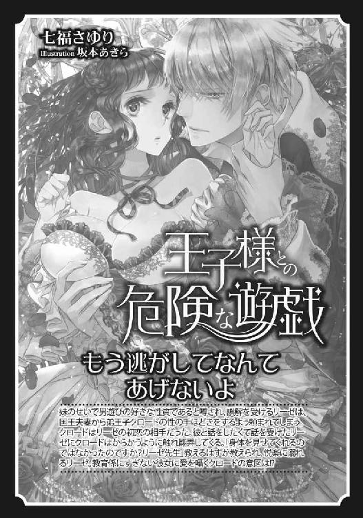
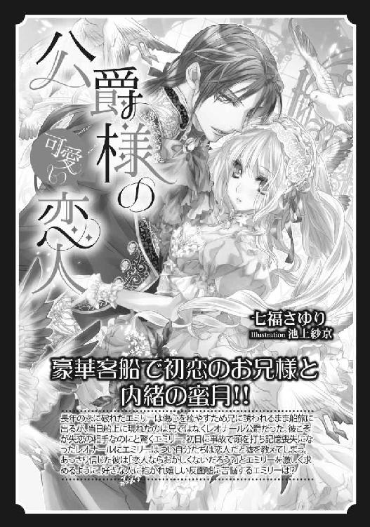
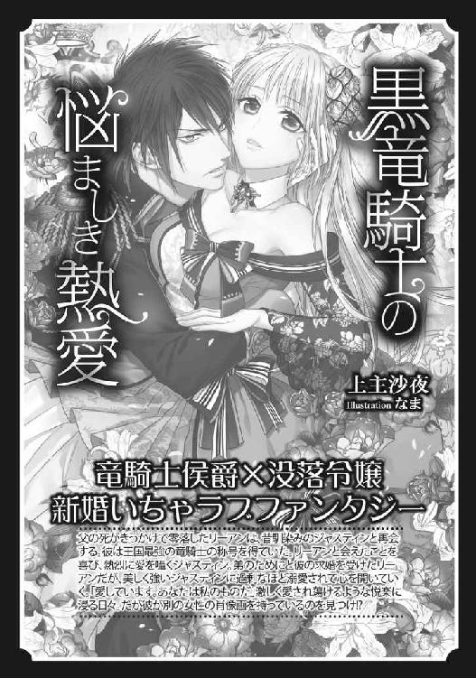
偏屈王と最愛の新妻［電子書籍版］
発行日 ２０１７年６月１日 発行
著 者 七福さゆり
デザイン antenna
発行者 後藤明信
発行所 株式会社竹書房
〒１０２－００７２
東京都千代田区飯田橋２－７－３
ＴＥＬ ０３－３２６４－１５７６
データ加工 有限会社ワイズネット
©SHICHIFUKU Sayuri 2017
本書の一部あるいは全部を著作権者および株式会社竹書房に無断で複写・複製すること、および放送・上演・公衆送信（ホームページ上への掲載を含む）などは、法律で認められた場合を除き著作権の侵害となります。